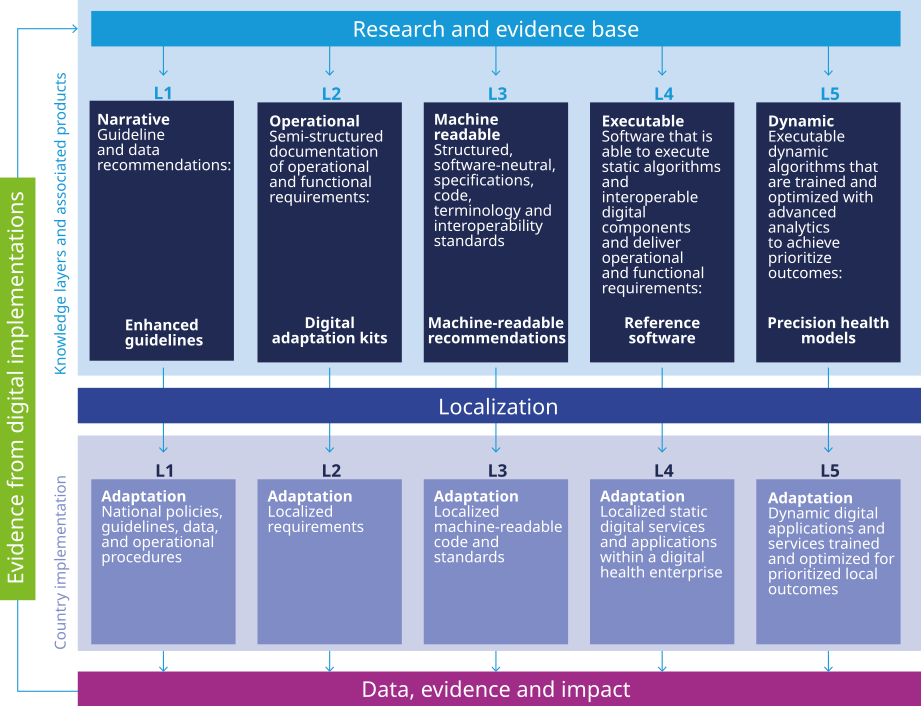
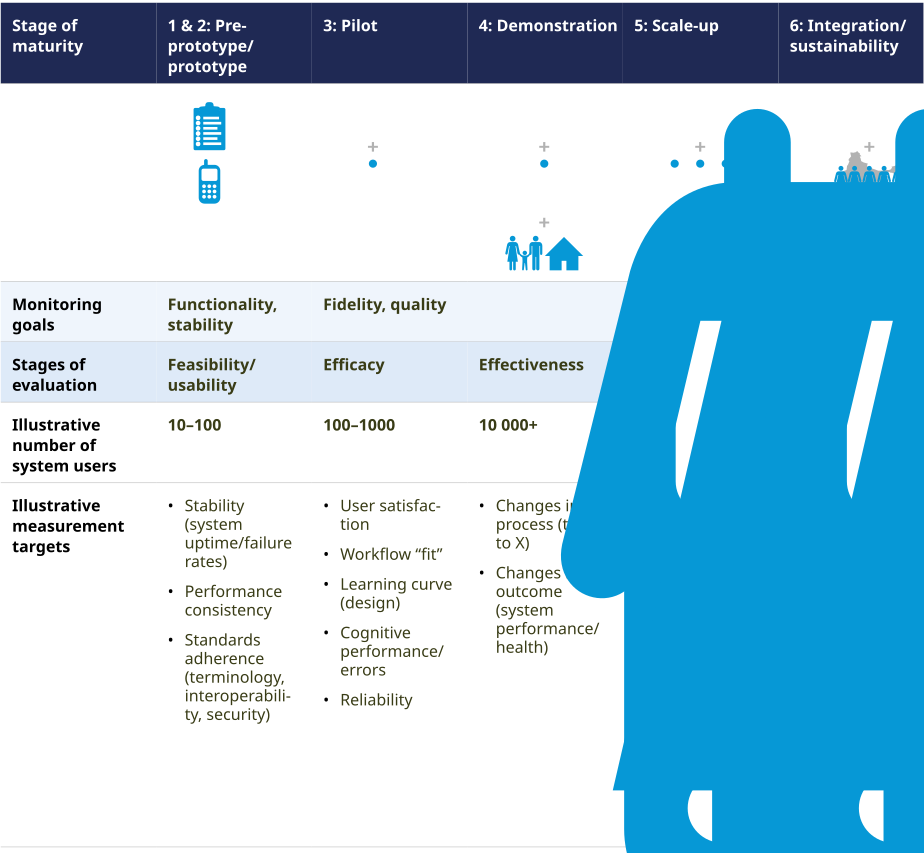

Digital transformation handbook for reporting substandard and falsified medical products - complete L2 DTH folio (litlfred/dth-sfp#1 Steps P4–P7): 43 outline sections, 27 structured tables, 6 figures, 15 personas (SFP-R-01..15), 9 user scenarios, 6 BPMN 2.0 processes (SF-REP-001..006), 4 DMN 1.3 decision tables (SFR.DT.01..04), 10 data elements (SFR.A1.DE1..10), 7 functional requirements, 11 non-functional requirement categories, 5 indicators, and 100% L1 normative coverage
Front matter (Imprint, Acknowledgements, Abbreviations and Glossary)
Front matter (Imprint, Acknowledgements, Abbreviations and Glossary)
✎ edit📣 feedback Acknowledgements (PDF pp. 7–7).
doc_id: 9789240120747-eng doc_title: "Digital transformation handbook for reporting substandard and falsified medical products" section_id: sec-000-acknowledgements section_title: "Acknowledgements" section_number: null pages: 7-7 source_pdf: 9789240120747-eng.pdf source_sha256: c710f7cf4a432221 toc_source: inferred
Acknowledgements
The World Health Organization (WHO) gratefully acknowledges the contributions of many individuals and organizations to the development of this document. This handbook was authored by Swaroop Jayaprakash and Natschja Nash-Mendez (Department of Digital Health and Innovations, WHO headquarters) and Rutendo Kuwana and Leticia Megias (Department of Regulation and Prequalification, WHO headquarters) in collaboration with Christian Moretti Anfossi (United Health Futures [UHF], Switzerland).
WHO extends its sincere thanks to the following individuals who wrote, reviewed or provided technical contributions to the document: Michael Deats (independent expert), Martha Gutteridge (UHF), Jeremy Lauer (UHF), Carl Leitner (Department of Digital Health and Innovations, WHO headquarters), Casey McAndrew (independent expert), Felipe Pérez (independent expert), Elisabeth Pisani (independent expert), Emma Ogden (UHF), Mohammed Sadek (independent expert), Geordan Shannon (UHF), Des Tan (UHF) and Chloe Wood (UHF).
WHO also gratefully acknowledges the contributions of representatives of the following national regulatory authorities – Instituto de Salud Pública, Chile: Antonio García, Isabel Maureira and David Mena; and the South African Health Products Regulatory Authority, South Africa: Mafora Matlala and Deon Poovan.
This document further benefited from valuable comments received from many countries’ health accounts experts and policy-makers during the public consultation.
All of the external experts involved in this initiative completed and submitted a WHO Declaration of Interests (DOI) form. The review of these DOI forms did not identify any conflicts of interest.
This work was funded by Gates Foundation and the United Kingdom of Great Britain and Northern Ireland Department of Health and Social Care (Fleming Fund).
✎ edit📣 feedback Abbreviations and acronyms (PDF pp. 8–8).
doc_id: 9789240120747-eng doc_title: "Digital transformation handbook for reporting substandard and falsified medical products" section_id: sec-001-abbreviations-and-acronyms section_title: "Abbreviations and acronyms" section_number: null pages: 8-8 source_pdf: 9789240120747-eng.pdf source_sha256: c710f7cf4a432221 toc_source: inferred
Abbreviations and acronyms
| Abbreviation | Definition |
|---|---|
| BPMN | Business Process Model and Notation |
| DIIG | Digital implementation investment guide (WHO) |
| FHIR | Fast Healthcare Interoperability Resources® |
| GSMS | Global Surveillance and Monitoring System (WHO) |
| HL7 | Health Level Seven® |
| ICT | information and communication technology |
| ID | identity/identification/identifier |
| ITU | International Telecommunication Union |
| LMICs | low- and middle-income countries |
| M&E | monitoring and evaluation |
| NMRA | national medicines regulatory authority |
| PMS | post-market surveillance |
| RACI | responsible, accountable, consulted, informed |
| Rb-PMS | risk-based post-market surveillance |
| SaaS | software as a service |
| SMART | standards-based, machine-readable, adaptive, requirements-based and testable |
| UAT | user acceptance testing |
| UHF | United Health Futures |
| WHO | World Health Organization |
✎ edit📣 feedback Glossary (PDF pp. 9–11).
doc_id: 9789240120747-eng doc_title: "Digital transformation handbook for reporting substandard and falsified medical products" section_id: sec-002-glossary section_title: "Glossary" section_number: null pages: 9-11 source_pdf: 9789240120747-eng.pdf source_sha256: c710f7cf4a432221 toc_source: inferred
Glossary
| Term | Definition |
|---|---|
| Active pharmacovigilance | Proactive measures that are taken to detect adverse events (1). |
| Adverse drug reactions | Harmful, unintended reactions to medicines that occur at doses normally used for treatment (2). |
| Business process | A set of related activities or tasks performed together to achieve the objectives of the health programme area, such as registration, counselling and referrals (3). |
| Data element | A unit of data that has a specific and precise meaning (4). |
| Digitization | The process of converting and organizing data from paper records into a digital format for easier entry, storage and retrieval. Digitization is the initial step towards digital transformation (5, 6). |
| Digitalization | The process of digitally automating and simplifying processes to streamline individual health programmes and reducing manual efforts for greater efficiency. Digitalization is the second step towards digital transformation (5, 6). |
| Digital transformation | The process of digitally optimizing and driving systems-level changes by leveraging innovation, analytics and feedback mechanisms to improve person-centred health systems. Digital technologies are used to fundamentally change and improve how health services are delivered and accessed across all health programme areas (5, 6, 7). |
| Enabling environment | Attitudes, actions, policies and practices that stimulate and support effective and efficient functioning of organizations, individuals and programmes. The enabling environment includes legal, regulatory and policy frameworks and political, sociocultural, institutional and economic factors (3). |
| End user | People who will be using the digital system(s). |
| Enterprise architecture | A blueprint of business processes, data, systems and technologies used to help implementers design increasingly complex systems to support the workflow and roles of people in a large enterprise, such as a health system (3). |
| Evaluation | The systematic and objective assessment of an ongoing or completed intervention with the aim of determining the fulfilment of objectives, efficiency, effectiveness, impact and sustainability (8). |
| Falsified medical products | Medical products that deliberately or fraudulently misrepresent their identity, composition or source. Any consideration related to intellectual property rights does not fall within this definition. Such deliberate or fraudulent misrepresentation refers to any substitution, adulteration or reproduction of an authorized medical product or the manufacture of a medical product that is not an authorized product (9). |
| Features | The characteristics of your system that include look and feel as well as what the system can do (e.g. “approval workflow” can be a feature of a product master data management solution). |
| Functional requirements | Capabilities the system must have to meet the end users’ needs and achieve tasks within the business process. |
| Generic product or product information | In this handbook, the terms “generic product”, “product” or “product information” pertain to the general identifying details of a health product, excluding any manufacturer-specific information. |
| Health care professional | An individual who provides health care treatment and advice based on formal training and experience. This includes a wide range of occupations such as doctors, nurses, pharmacists and other allied health professionals (10). |
| Interoperability | Ability of different applications to access, exchange, integrate and use data in a coordinated and consistent manner through the use of shared application interfaces, value sets, concepts and standards, within and across organizational, regional and national boundaries, to provide timely and seamless portability of information and optimize health outcomes. |
| Member State Mechanism (MSM) | A mechanism established by WHO to address the issue of tackling substandard and falsified medical products in a transparent and inclusive way, from a public health perspective and expressly excluding considerations of intellectual property rights (11). |
| Monitoring | The continuous process of collecting and analysing data to compare how well an intervention is being implemented against expected results (8). |
| Non-functional requirements | General attributes and features of the digital system to ensure usability and overcome technical and physical constraints. Examples of non-functional requirements include the ability to work offline, multiple language settings and password protection. |
| Open source | Open-source software is software with source code that is published and made freely available to the public, enabling anyone to inspect, modify and enhance the code. While the source code is open to everyone, this does not mean that implementation of software is necessarily without costs. An open-source software must have a licence approved by the Open-Source Initiative (12). |
| Open standards | Standards that are documented and made freely available to the public, which are developed, approved and maintained via a collaborative and consensus-driven process. Open standards facilitate interoperability and data exchange and are intended for widespread adoption (13). |
| Organogram | A visual representation of the organization structure showing the hierarchy of various roles and their reporting relationships. |
| Passive pharmacovigilance | Passive surveillance that mainly involves spontaneous adverse effects reports from case series and other safety reports. |
| Persona | A generic aggregate description of a person involved in or benefiting from a health programme. |
| Pharmacovigilance | The science and activities relating to the detection, assessment, understanding and prevention of adverse effects or any other medicine/vaccine-related problem (14). |
| Polypharmacy | The concurrent use of multiple medications (15). |
| Post-market surveillance (PMS) | The practice of monitoring the safety of a pharmaceutical drug or medical device after it has been released on the market, through collection and evaluation of experiences relating to the product (16). |
| Registry | A governed, authoritative and centralized information system that captures, stores and maintains the unique attributes and identifiers of health facilities, health service users, products and/or health workforce using predefined canonical minimum data etc. |
| SMART Guidelines | Standards-based, Machine-readable, Adaptive, Requirements-based and Testable Guidelines are recommended digital capabilities, health and data content aligned with normative recommendations. They represent packages of comprehensive documentation and reusable digital health components (e.g. health content, interoperability standards, code libraries, algorithms, technical and operational specifications) that facilitate country adaptation and adoption of clinical and public health protocols, health systems strengthening recommendations, and data and interoperability standards into digital health information systems with fidelity. SMART Guidelines serve as a starting point and as foundational specifications to advance the development of robust person-centred digital systems. These specifications are software-agnostic, context-agnostic and are applicable to all levels of digital maturity (17, 18). |
| Substandard products | Medical products authorized by national regulatory authorities but that fail to meet either national or international quality standards or specifications or, in some cases, both (9). |
| Trade item | Products or services that are priced, ordered or invoiced at any point in the supply chain (19). |
| Unregistered | A medical product that has not undergone evaluation and/or approval by the national regulatory authority for the market in which it is marketed/distributed or used, subject to permitted conditions under national or regional regulation and legislation. This medical product may or may not have obtained the relevant authorization from the national/regional regulatory authority of its geographical origin (9). |
| User acceptance testing (UAT) | User acceptance testing is done to see whether the end users are satisfied with the end product (20). |
| Workflow | A visual representation of the progression of activities (tasks, events, decision points) in a logical flow illustrating the interactions within the business process (21). |
[!WARNING] Source Review Findings Recorded (
litlfred/dth-sfp#1§3):
- F1: Two definitions of 'substandard medical product' — Glossary (p. ix, citing ref 9) states 'authorized by national regulatory authorities, but fail to meet either national or international quality standards or specifications – or, in some cases, both', whereas Introduction (p. 1, citing ref 23 WHA70/A70/23) states 'fail to meet either their quality standards or their specifications, or both'. Both are preserved as alternatives.
- F3 (Polypharmacy orphan glossary entry): 'Polypharmacy' is defined on p. viii (citing ref 16) but never used in the handbook body text (pp. 1-59).
- F6: Glossary entry for 'Registry' (p. viii) is truncated mid-sentence ('...canonical minimum data etc.').
- F9 & F10: Term comparison with smart-ra (dpi-h-ra) recorded — 'enterprise architecture', 'interoperability', 'product' (ArchiMate business offering vs physical medical product homonym), and 'SMART Guidelines' carry distinct wordings across smart-ra and dth-sfp.
✎ edit📣 feedback Front matter (PDF pp. 1–6).
doc_id: 9789240120747-eng doc_title: "Digital transformation handbook for reporting substandard and falsified medical products" section_id: sec-front-matter section_title: "Front matter" section_number: null pages: 1-6 source_pdf: 9789240120747-eng.pdf source_sha256: c710f7cf4a432221 toc_source: inferred
Digital transformation handbook for reporting substandard and falsified medical products
ISBN 978-92-4-012074-7 (electronic version) ISBN 978-92-4-012075-4 (print version)
© World Health Organization 2026
Some rights reserved. This work is available under the Creative Commons Attribution-NonCommercial-ShareAlike 3.0 IGO licence (CC BY-NC-SA 3.0 IGO; https://creativecommons.org/licenses/by-nc-sa/3.0/igo).
Under the terms of this licence, you may copy, redistribute and adapt the work for non-commercial purposes, provided the work is appropriately cited, as indicated below. In any use of this work, there should be no suggestion that WHO endorses any specific organization, products or services. The use of the WHO logo is not permitted. If you adapt the work, then you must license your work under the same or equivalent Creative Commons licence. If you create a translation of this work, you should add the following disclaimer along with the suggested citation: “This translation was not created by the World Health Organization (WHO). WHO is not responsible for the content or accuracy of this translation. The original English edition shall be the binding and authentic edition”.
Any mediation relating to disputes arising under the licence shall be conducted in accordance with the mediation rules of the World Intellectual Property Organization (http://www.wipo.int/amc/en/mediation/rules/).
Suggested citation. Digital transformation handbook for reporting substandard and falsified medical products: a practical handbook. Geneva: World Health Organization; 2026. Licence: CC BY-NC-SA 3.0 IGO.
Cataloguing-in-Publication (CIP) data. CIP data are available at https://iris.who.int/.
Sales, rights and licensing. To purchase WHO publications, see https://www.who.int/publications/book-orders. To submit requests for commercial use and queries on rights and licensing, see https://www.who.int/copyright.
Third-party materials. If you wish to reuse material from this work that is attributed to a third party, such as tables, figures or images, it is your responsibility to determine whether permission is needed for that reuse and to obtain permission from the copyright holder. The risk of claims resulting from infringement of any third-party-owned component in the work rests solely with the user.
General disclaimers. The designations employed and the presentation of the material in this publication do not imply the expression of any opinion whatsoever on the part of WHO concerning the legal status of any country, territory, city or area or of its authorities, or concerning the delimitation of its frontiers or boundaries. Dotted and dashed lines on maps represent approximate border lines for which there may not yet be full agreement.
The mention of specific companies or of certain manufacturers’ products does not imply that they are endorsed or recommended by WHO in preference to others of a similar nature that are not mentioned. Errors and omissions excepted, the names of proprietary products are distinguished by initial capital letters.
All reasonable precautions have been taken by WHO to verify the information contained in this publication. However, the published material is being distributed without warranty of any kind, either expressed or implied. The responsibility for the interpretation and use of the material lies with the reader. In no event shall WHO be liable for damages arising from its use.
Contents
| Section | Page |
|---|---|
| Acknowledgements | v |
| Abbreviations and acronyms | vi |
| Glossary | vii |
| Introduction | 1 |
| Reporting of substandard and falsified medical products | 1 |
| Who this handbook is for | 2 |
| How to use this handbook | 3 |
| How this handbook was developed | 6 |
| 1. Assess the current state and enabling environment | 7 |
| 1.1 Analyse key stakeholders | 8 |
| 1.2 Assess the digital readiness | 8 |
| 1.3 Assess current substandard and falsified reporting practices | 10 |
| 2. Establish a shared understanding and governance framework | 14 |
| 2.1 Review regulatory policies for substandard and falsified medical products reporting | 15 |
| 2.2 Align policy with stakeholders | 16 |
| 2.3 Establish governance and leadership | 16 |
| 2.4 Set the strategic goals | 16 |
| 2.5 Analyse and mitigate risk | 17 |
| 3. Define the future state | 18 |
| 3.1 Develop a digital investment roadmap | 19 |
| 3.2 Link to the enterprise architecture | 21 |
| 4. Determine the requirements | 23 |
| 4.1 Identify user personas | 25 |
| 4.2 Define user scenarios | 25 |
| 4.3 Develop business processes and workflows | 29 |
| 4.4 Outline data requirements | 30 |
| 4.5 Gather requirements | 30 |
| 5. Plan the implementation | 36 |
| 6. Monitor, evaluate and scale | 39 |
| 6.1 Develop a monitoring and evaluation plan | 40 |
| 6.2 Develop an operations and continuous improvement plan | 45 |
| 7. Share implementation experiences | 46 |
| References | 48 |
| Resources | 50 |
| Annexes | 51 |
| Annex 1. Principles for Digital Development | 52 |
| Annex 2. User persona template | 53 |
| Annex 3. Business Process Model and Notation (BPMN) symbols | 54 |
| Annex 4. Stakeholder RACI matrix | 56 |
| Annex 5. Template for assessing current software applications | 57 |
| Annex 6. Barriers to reporting | 58 |
| Annex 7. Risk management template | 59 |
✎ edit📣 feedback Table 19. Abbreviations and acronyms (19 entries, p. vi / PDF p. 8)
Abbreviations and acronyms (19 entries, p. vi / PDF p. 8)
| Abbreviation | Definition |
|---|---|
| BPMN | Business Process Model and Notation |
| DIIG | Digital implementation investment guide (WHO) |
| FHIR | Fast Healthcare Interoperability Resources® |
| GSMS | Global Surveillance and Monitoring System (WHO) |
| HL7 | Health Level Seven® |
| ICT | information and communication technology |
| ID | identity/identification/identifier |
| ITU | International Telecommunication Union |
| LMICs | low- and middle-income countries |
| M&E | monitoring and evaluation |
| NMRA | national medicines regulatory authority |
| PMS | post-market surveillance |
| RACI | responsible, accountable, consulted, informed |
| Rb-PMS | risk-based post-market surveillance |
| SaaS | software as a service |
| SMART | standards-based, machine-readable, adaptive, requirements-based and testable |
| UAT | user acceptance testing |
| UHF | United Health Futures |
| WHO | World Health Organization |
✎ edit📣 feedback Table 20. Handbook Glossary (35 entries, pp. vii–ix / PDF pp. 9–11)
Handbook Glossary (35 entries, pp. vii–ix / PDF pp. 9–11)
| Term | Definition |
|---|---|
| Active pharmacovigilance | Proactive measures that are taken to detect adverse events (1). |
| Adverse drug reactions | Harmful, unintended reactions to medicines that occur at doses normally used for treatment (2). |
| Business process | A set of related activities or tasks performed together to achieve the objectives of the health programme area, such as registration, counselling and referrals (3). |
| Data element | A unit of data that has a specific and precise meaning (4). |
| Digitization | The process of converting and organizing data from paper records into a digital format for easier entry, storage and retrieval. Digitization is the initial step towards digital transformation (5, 6). |
| Digitalization | The process of digitally automating and simplifying processes to streamline individual health programmes and reducing manual efforts for greater efficiency. Digitalization is the second step towards digital transformation (5, 6). |
| Digital transformation | The process of digitally optimizing and driving systems-level changes by leveraging innovation, analytics and feedback mechanisms to improve person-centred health systems. Digital technologies are used to fundamentally change and improve how health services are delivered and accessed across all health programme areas (5, 6, 7). |
| Enabling environment | Attitudes, actions, policies and practices that stimulate and support effective and efficient functioning of organizations, individuals and programmes. The enabling environment includes legal, regulatory and policy frameworks and political, sociocultural, institutional and economic factors (3). |
| End user | People who will be using the digital system(s). |
| Enterprise architecture | A blueprint of business processes, data, systems and technologies used to help implementers design increasingly complex systems to support the workflow and roles of people in a large enterprise, such as a health system (3). |
| Evaluation | The systematic and objective assessment of an ongoing or completed intervention with the aim of determining the fulfilment of objectives, efficiency, effectiveness, impact and sustainability (8). |
| Falsified medical products | Medical products that deliberately or fraudulently misrepresent their identity, composition or source. Any consideration related to intellectual property rights does not fall within this definition. Such deliberate or fraudulent misrepresentation refers to any substitution, adulteration or reproduction of an authorized medical product or the manufacture of a medical product that is not an authorized product (9). |
| Features | The characteristics of your system that include look and feel as well as what the system can do (e.g. “approval workflow” can be a feature of a product master data management solution). |
| Functional requirements | Capabilities the system must have to meet the end users’ needs and achieve tasks within the business process. |
| Generic product or product information | In this handbook, the terms “generic product”, “product” or “product information” pertain to the general identifying details of a health product, excluding any manufacturer-specific information. |
| Health care professional | An individual who provides health care treatment and advice based on formal training and experience. This includes a wide range of occupations such as doctors, nurses, pharmacists and other allied health professionals (10). |
| Interoperability | Ability of different applications to access, exchange, integrate and use data in a coordinated and consistent manner through the use of shared application interfaces, value sets, concepts and standards, within and across organizational, regional and national boundaries, to provide timely and seamless portability of information and optimize health outcomes. |
| Member State Mechanism (MSM) | A mechanism established by WHO to address the issue of tackling substandard and falsified medical products in a transparent and inclusive way, from a public health perspective and expressly excluding considerations of intellectual property rights (11). |
| Monitoring | The continuous process of collecting and analysing data to compare how well an intervention is being implemented against expected results (8). |
| Non-functional requirements | General attributes and features of the digital system to ensure usability and overcome technical and physical constraints. Examples of non-functional requirements include the ability to work offline, multiple language settings and password protection. |
| Open source | Open-source software is software with source code that is published and made freely available to the public, enabling anyone to inspect, modify and enhance the code. While the source code is open to everyone, this does not mean that implementation of software is necessarily without costs. An open-source software must have a licence approved by the Open-Source Initiative (12). |
| Open standards | Standards that are documented and made freely available to the public, which are developed, approved and maintained via a collaborative and consensus-driven process. Open standards facilitate interoperability and data exchange and are intended for widespread adoption (13). |
| Organogram | A visual representation of the organization structure showing the hierarchy of various roles and their reporting relationships. |
| Passive pharmacovigilance | Passive surveillance that mainly involves spontaneous adverse effects reports from case series and other safety reports. |
| Persona | A generic aggregate description of a person involved in or benefiting from a health programme. |
| Pharmacovigilance | The science and activities relating to the detection, assessment, understanding and prevention of adverse effects or any other medicine/vaccine-related problem (14). |
| Polypharmacy | The concurrent use of multiple medications (15). |
| Post-market surveillance (PMS) | The practice of monitoring the safety of a pharmaceutical drug or medical device after it has been released on the market, through collection and evaluation of experiences relating to the product (16). |
| Registry | A governed, authoritative and centralized information system that captures, stores and maintains the unique attributes and identifiers of health facilities, health service users, products and/or health workforce using predefined canonical minimum data etc. |
| SMART Guidelines | Standards-based, Machine-readable, Adaptive, Requirements-based and Testable Guidelines are recommended digital capabilities, health and data content aligned with normative recommendations. They represent packages of comprehensive documentation and reusable digital health components (e.g. health content, interoperability standards, code libraries, algorithms, technical and operational specifications) that facilitate country adaptation and adoption of clinical and public health protocols, health systems strengthening recommendations, and data and interoperability standards into digital health information systems with fidelity. SMART Guidelines serve as a starting point and as foundational specifications to advance the development of robust person-centred digital systems. These specifications are software-agnostic, context-agnostic and are applicable to all levels of digital maturity (17, 18). |
| Substandard products | Medical products authorized by national regulatory authorities but that fail to meet either national or international quality standards or specifications or, in some cases, both (9). |
| Trade item | Products or services that are priced, ordered or invoiced at any point in the supply chain (19). |
| Unregistered | A medical product that has not undergone evaluation and/or approval by the national regulatory authority for the market in which it is marketed/distributed or used, subject to permitted conditions under national or regional regulation and legislation. This medical product may or may not have obtained the relevant authorization from the national/regional regulatory authority of its geographical origin (9). |
| User acceptance testing (UAT) | User acceptance testing is done to see whether the end users are satisfied with the end product (20). |
| Workflow | A visual representation of the progression of activities (tasks, events, decision points) in a logical flow illustrating the interactions within the business process (21). |
[!NOTE] Source Table Review Notes (
litlfred/dth-sfp#1§3):
- F1: Two definitions of 'substandard medical product' — Glossary (p. ix, citing ref 9) states 'authorized by national regulatory authorities, but fail to meet either national or international quality standards or specifications – or, in some cases, both', whereas Introduction (p. 1, citing ref 23 WHA70/A70/23) states 'fail to meet either their quality standards or their specifications, or both'. Both are preserved as alternatives.
- F3 (Polypharmacy orphan glossary entry): 'Polypharmacy' is defined on p. viii (citing ref 16) but never used in the handbook body text (pp. 1-59).
- F6: Glossary entry for 'Registry' (p. viii) is truncated mid-sentence ('...canonical minimum data etc.').
- F9 & F10: Term comparison with smart-ra (dpi-h-ra) recorded — 'enterprise architecture', 'interoperability', 'product' (ArchiMate business offering vs physical medical product homonym), and 'SMART Guidelines' carry distinct wordings across smart-ra and dth-sfp.
Introduction
Introduction
Source: adapted from WHO Digital transformation handbook for health product catalogue, 2025, Fig. 4, itself adapted from the 2020 WHO Digital implementation investment guide (DIIG), Fig. 1.1.1 (who-iris/library/9789240120747-eng/figures/vfig-p016.png, PDF page 16). Generated by the diig-phases-svg tool from the who-iris data for the product catalogue figure and this handbook's adaptation file (figure-data/diig-phases-sfp.json); this handbook is added in Phase 07 and marked "(this document)" in place of the product catalogue handbook. Mapped to dpi-h-ra ArchiMate view Capabilities-Goals (id-4e6e25746e8d4398add06fcbc4fb5a4e).
Figure 1. Planning and implementing a digital health enterprise: phases, steps and resources (p. 4 / PDF p. 16)

Source: WHO, Digital transformation handbook for reporting substandard and falsified medical products, 2025, Fig. 2, adapted from WHO SMART Guidelines (Mehl et al., 2021) (L1 section who-iris/library/9789240120747-eng/sections/sec-006-how-to-use-this-handbook.md; PDF crop who-iris/library/9789240120747-eng/figures/vfig-p017.png, PDF page 17). Redrawn as SVG by scripts/figures/as-drawn.ts from figure-data/fig-2-smart-guidelines-approach.json, transcribed from the PDF's vector layer with the printed layout, colours and wording. Mapped to dpi-h-ra ArchiMate view Interoperability Layer (id-8c5dd12b8d4e425184f6003d0513d569).
Figure 2. WHO’s SMART Guidelines approach (p. 5 / PDF p. 17)
✎ edit📣 feedback Introduction (PDF pp. 13–13).
doc_id: 9789240120747-eng doc_title: "Digital transformation handbook for reporting substandard and falsified medical products" section_id: sec-003-introduction section_title: "Introduction" section_number: null pages: 13-13 source_pdf: 9789240120747-eng.pdf source_sha256: c710f7cf4a432221 toc_source: inferred
Introduction
Substandard and falsified medical products pose a multilayered threat to the stability of health systems. They endanger health, through either therapeutic failure or adverse effects, and they undermine public trust in health care. They also risk jeopardizing global efforts working to suppress antimicrobial resistance, threatening the long-term efficacy of key life-saving medicines. Further to their impacts on health, substandard and falsified medical products have adverse socioeconomic consequences and increase poverty by damaging individual productivity, income and social mobility. These factors lead to wasted resources and increased out-of-pocket spending. Economic losses compound the health impacts of substandard and falsified medical products, completing a downward spiral of negative effects (22).
WHO and Member States have agreed on the following definitions (23):
“Substandard medical products”, also called “out-of-specification”, are authorized medical products that fail to meet either their quality standards or their specifications, or both.
“Falsified medical products” deliberately and or fraudulently misrepresent their identity, composition or source.
With globalization, opportunities for substandard and falsified medical products to enter the market and formal supply chain are increasing. A 2017 estimate, based on multiple studies over the previous decade, suggested that one in ten medical products in low- and middle-income countries (LMICs) could be substandard and falsified (24). The growing complexity and online presence in supply chains further obscure the entry points of falsified products. As LMICs transition to universal health coverage, the demand for medicines from public sector and insured patients increases (25). In some cases, government procurement measures aim to contain costs and reduce medicine prices by procuring medicines at higher volumes (26). Reduced prices due to higher volume spending (i.e. restricted pricing) negatively affect the incentives of pharmaceutical companies, which may lead to cost-cutting and underinvestment in quality assurance, increasing the risk of substandard products; or encouraging companies to withdraw from the market, providing opportunities for falsifiers to enter (26).
Detection of these products in circulation is one of the key steps required to reduce their prevalence. However, most substandard and falsified medical products can only be identified by professionals with the use of laboratory technologies (27). In cases where resources are limited, and technology is not widespread, risk-based post-market surveillance (Rb-PMS) of medical products becomes essential for identifying suspect products. Unlike conventional post-market surveillance (PMS), Rb-PMS focuses on prioritizing and allocating resources based on the level of risk associated with products. Once identified, these products can be further investigated by national medicines regulatory authorities (NMRAs), in collaboration with the police or other law enforcement agencies if there is an indication of possible criminal activity.
✎ edit📣 feedback Reporting of substandard and falsified medical products (PDF pp. 13–14).
doc_id: 9789240120747-eng doc_title: "Digital transformation handbook for reporting substandard and falsified medical products" section_id: sec-004-reporting-of-substandard-and-falsified-medical-p section_title: "Reporting of substandard and falsified medical products" section_number: null pages: 13-14 source_pdf: 9789240120747-eng.pdf source_sha256: c710f7cf4a432221 toc_source: inferred
Reporting of substandard and falsified medical products
Reporting suspected substandard and falsified medical products allows NMRAs to investigate them more thoroughly than the reporter. When a case of a substandard and falsified medical product is confirmed, relevant authorities can quickly remove the product from the supply chain and market, impose sanctions and address system weaknesses. In the long term, this should improve product quality and reduce the chances of substandard and falsified medical products entering the market (27).
In addition to reducing prevalence at a national level, NMRAs can report data on substandard and falsified medical products to WHO’s case reporting system for substandard and falsified medical products – the WHO Global Surveillance and Monitoring System (GSMS) – to facilitate global action on the issue. Effective global coordination against these products requires high-quality and frequent reporting and data exchange.
Health care professionals can play an important role in reporting products they suspect of being ineffective or defective, in turn increasing the capacity of NMRAs to successfully identify substandard and falsified products. Health care professionals are ideally placed to notice suspicious products as they are at the frontline of health care and able to spot therapeutic failure or adverse effects. They are also familiar with the appearance and effects of genuine medical products. Data from the GSMS indicate that many of the most serious cases were first reported by health care professionals. However, the data also showed that medical doctors, nurses and midwives are less likely to report their suspicions compared with other stakeholders (28).
Currently, many countries rely on paper-based reporting systems for identifying substandard and falsified medical products. While these systems can be effective, the manual nature of reporting often discourages busy health care professionals from participating. Additionally, the inconsistencies between data provided by various paper reporting procedures can lead to significant issues at the regulatory level, as the submitted data are often not standardized. In some countries, there are no formal reporting systems in place, leading to reliance on verbal recounts of suspect products (27).
This underscores the critical need for adopting standards-based digital solutions to support and improve the reporting of substandard and falsified medical products. Digital reporting systems, such as smartphone applications, streamline the process, making it more accessible and efficient for health care professionals. For instance, in a pilot project coordinated by WHO, smartphone applications for reporting substandard and falsified medical products were developed and successfully implemented in Indonesia and the United Republic of Tanzania (27, 28). These digital tools not only facilitate more consistent and standardized data collection but also enhance the overall capacity of regulatory authorities to monitor and address the prevalence of substandard and falsified medical products effectively.
[!WARNING] Source Review Findings Recorded (
litlfred/dth-sfp#1§3):
- F1: Introduction (p. 1, citing WHA70/A70/23 ref 23) defines substandard medical products as 'authorized medical products that fail to meet either their quality standards or their specifications, or both' — preserved alongside the Glossary p. ix wording.
✎ edit📣 feedback Who this handbook is for (PDF pp. 14–15).
doc_id: 9789240120747-eng doc_title: "Digital transformation handbook for reporting substandard and falsified medical products" section_id: sec-005-who-this-handbook-is-for section_title: "Who this handbook is for" section_number: null pages: 14-15 source_pdf: 9789240120747-eng.pdf source_sha256: c710f7cf4a432221 toc_source: inferred
Who this handbook is for
This handbook has been developed for countries, organizations and teams seeking to plan and implement digital solutions for reporting substandard and falsified medical products by health care professionals and aims to provide guidance to the various target audiences across the different implementation phases and areas, as outlined in Table 1.
Table 1. Intended audience for the handbook
| Handbook section – phases | Illustrative target organizations | Illustrative target user teams and roles | Purpose of the section |
|---|---|---|---|
| 1. Assess the current state and enabling environment | Ministry of health NMRA Digital health departments |
Senior management/leaders Technical/systems team Regulatory/monitoring/pharmacovigilance teams |
To help assess the current situation. This includes identifying existing barriers to reporting, assessing the current digital landscape and readiness and reviewing the current procedures and policies that will inform the digital solution. |
| 2. Establish a shared understanding and governance framework | Ministry of health NMRA Digital health departments Other stakeholders such as funders and implementation partners, medical product industry representatives, health care professional associations |
Senior management/leaders Regulatory/monitoring/pharmacovigilance teams Health care professional association representatives |
To help define goals and establish leadership and governance framework. This outlines the importance of fostering cooperation among stakeholders, setting clear objectives and developing a strategic plan that aligns with national digital health strategies. |
| 3. Define the future state | Ministry of health NMRA Digital health departments Other stakeholders such as funders and implementation partners, medical product industry representatives, health care professional associations |
Senior management/leaders Regulatory staff Technical/enterprise architects and team Regulatory/monitoring/pharmacovigilance teams Health care professional association representatives |
To provide guidance on developing an investment roadmap and aligning the reporting application with a holistic enterprise architecture. |
| 4. Determine the requirements | Ministry of health NMRA Digital health departments Other stakeholders such as funders and implementation partners |
Technical/enterprise architects and team Regulatory/monitoring/pharmacovigilance teams |
To help define the reporting application’s functional and non-functional requirements, based on user scenarios. |
| 5. Plan the implementation | Ministry of health NMRA Digital health departments |
Project managers Technical/system/enterprise architects and team |
To provide guidance on developing a comprehensive plan and budget to implement the substandard and falsified reporting application. |
| 6. Monitor, evaluate and scale | Ministry of health National regulatory authority Implementation partners |
Technical team Regulatory/monitoring/pharmacovigilance teams |
To help develop a framework for monitoring and evaluation (M&E) of the performance and effectiveness of the substandard and falsified reporting application. |
| 7. Share implementation experiences | Ministry of health National regulatory authority Implementation partners |
All: Senior management/leaders Technical/systems team Regulatory/monitoring/pharmacovigilance teams Health care professional association representatives Regulatory staff Technical/enterprise architects and team Project managers |
To share real-world implementation experiences and lessons learned. |
✎ edit📣 feedback How to use this handbook (PDF pp. 15–18).
doc_id: 9789240120747-eng doc_title: "Digital transformation handbook for reporting substandard and falsified medical products" section_id: sec-006-how-to-use-this-handbook section_title: "How to use this handbook" section_number: null pages: 15-18 source_pdf: 9789240120747-eng.pdf source_sha256: c710f7cf4a432221 toc_source: inferred
How to use this handbook
This handbook provides guidance to countries on how to adopt digital solutions for reporting of substandard and falsified medical products. It outlines various steps to ensure a comprehensive approach that aligns with existing digital health guidance and other intersecting strategies and architectures.
This handbook can be a useful resource in the following scenarios:
- When moving from a paper-only based reporting system to a digital reporting system.
- When moving to a unified digital solution and approach, e.g. when there are some groups of health care professionals using paper-based systems while others using digital systems.
- When combining isolated digital reporting systems to create a complete, connected and interoperable digital reporting system.
- When evaluating existing digital solutions for enhancement to support reporting of substandard and falsified medical products.
Before using this resource
The key assumption for users of this resource is that a comprehensive digital health strategy exists. In addition, it would be beneficial to have a comprehensive digital health supply chain strategy that aligns with the digital health strategy.
If there are no national digital health and supply chain strategies, refer to the National eHealth strategy toolkit produced jointly by WHO and the International Telecommunications Union (ITU) (29), the Global strategy on digital health 2020–2025 (30) (which has been extended to 2027 during the Seventy-eighth World Health Assembly) and the Digital transformation handbook for health supply chain architecture (31). Additionally, the SDG digital investment framework developed by ITU and the Digital Impact Alliance provides more guidance on developing a digital health architecture that leverages a whole-of-government approach and digital public goods (32).
These are many other resources for implementing digital health interventions and systems available from WHO, other United Nations agencies and numerous nongovernmental organizations (see Fig. 1).
This handbook uses the framework and approaches set forth in the Digital implementation investment guide (DIIG), which helps governments and technical partners plan a digital health intervention (3).
Fig. 1. Planning and implementing a digital health enterprise: phases, steps and resources
| Phase | Steps | Resources |
|---|---|---|
| PHASE 01: ASSESSING THE CURRENT STATE AND ENABLING ENVIRONMENT | • Conduct an inventory of existing or previously used software applications, ICT systems and other tools to better understand the requirements for reuse and interoperability | • WHO core indicator sets • Global digital health index • WHO digital health atlas • Digital health investment review tool • HIS stages of continuous improvement |
| PHASE 02: ESTABLISHING A SHARED UNDERSTANDING AND STRATEGIC PLANNING | • Develop a national digital health strategy outlining overarching needs, desired activities and outcomes • Define a vision for how the health system will be strengthened through the use of digital technology • Formulate a digital health investment roadmap to support the national digital health strategy |
• WHO–ITU national eHealth strategy toolkit • WHO handbook for health supply chain architecture • Guidance for investing in digital health • Digital Square global goods guidebook • Principles for donor alignment • Principles for digital development |
| PHASE 03: DEFINING THE FUTURE STATE | • Plan and identify appropriate digital interventions, alongside the health and data content, to improve health system processes and address programmatic needs | • WHO classification of digital health interventions • WHO guideline: recommendations on digital interventions for health system strengthening • WHO SMART guidelines: Machine-readable recommendations, Digital adaptation kits |
| PHASE 04: PLANNING THE ENTERPRISE ARCHITECTURE | • Review the current state and develop an architecture blueprint for the design of the digital health implementations • Identify validated open standards to ensure data exchange, systems integration and future-proofing of digital health implementations |
• ITU digital health platform handbook • ITU SDG digital investment framework (eGov) • Open Health Information Exchange (OpenHIE) • The Open Group Architecture Framework (TOGAF) |
| PHASE 05: DETERMINING HEALTH CONTENT REQUIREMENTS | • Identify validated health content appropriate for the implementation context • Ensure use of content aligned with identified standards for the future state |
• UNICEF human-centred design toolkit • World Bank digital identity toolkit • WHO digital clearinghouse |
| PHASE 06: M&E OF DIGITAL HEALTH IMPLEMENTATIONS AND FOSTERING DATA USE | • Monitor implementation to ensure digital implementations are functioning as intended and having the desired effect • Foster data-driven adaptive change management within the overall health system |
• PATH Defining and building a data use culture • MEASURE data demand and use of resources • WHO SCORE • WHO M&E digital health interventions |
| PHASE 07: IMPLEMENTING, MAINTAINING AND SCALING | • Maintain and sustain digital health implementations • Identify risks and appropriate mitigations |
• Digital implementation investment guide • Asian Development Bank total cost of ownership tool • WHO handbook for health supply chain architecture • WHO handbook for health product catalogue • WHO MAPS toolkit: mHealth assessment and planning for scale • WHO handbook for digitalizing primary health care • Be He@lthy, Be Mobile handbooks for noncommunicable diseases • Digital transformation handbook for reporting substandard and falsified medical products (this document) |
Source: Digital implementation investment guide (DIIG) (WHO; 2020) (3).
This handbook also aligns with WHO’s SMART Guidelines Initiative. SMART Guidelines are Standards-based, Machine-readable, Adaptive, Requirements-based and Testable recommended digital capabilities, health and data content aligned with normative recommendations (17). SMART Guidelines are WHO’s approach to systematize and accelerate the consistent application of recommended, life-saving interventions in the digital age.
SMART Guidelines are a comprehensive set of reusable digital health components which provide a five-step pathway, with each layer increasing in complexity, to advance the adoption of best clinical and data practices. The five knowledge layers comprise:
- L1 Narrative: enhanced clinical, public health guidelines and data recommendations
- L2 Operational: digital adaptation kits (DAKs)
- L3 Machine readable: machine-readable recommendations
- L4 Executable: reference applications and services
- L5 Dynamic: precision health model.
These layers inform developers how to translate recommendations into specifications and standards; technologists how to integrate recommendations into updatable digital systems; and countries how to localize, make interoperable, institutionalize and update digital systems consistent with evidence-based recommendations (17). Each layer can be adapted and localized within the country context (Fig. 2).
This handbook, following SMART Guidelines, offers guidance on L1 and L2 for adapting guidelines to implement a digital solution for reporting substandard and falsified medical products.
Fig. 2. WHO’s SMART Guidelines approach
| Layer | Knowledge layers and associated products | Country implementation (Localization / Adaptation) |
|---|---|---|
| L1 Narrative | Guideline and data recommendations: Enhanced guidelines | National policies, guidelines, data, and operational procedures |
| L2 Operational | Semi-structured documentation of operational and functional requirements: Digital adaptation kits | Localized requirements |
| L3 Machine readable | Structured, software-neutral, specifications, code, terminology and interoperability standards: Machine-readable recommendations | Localized machine-readable code and standards |
| L4 Executable | Software that is able to execute static algorithms and interoperable digital components and deliver operational and functional requirements: Reference software | Localized static digital services and applications within a digital health enterprise |
| L5 Dynamic | Executable dynamic algorithms that are trained and optimized with advanced analytics to achieve prioritize outcomes: Precision health models | Dynamic digital applications and services trained and optimized for prioritized local outcomes |
Source: WHO SMART guidelines: optimising country-level use of guideline recommendations in the digital age (Mehl et al., 2021) (18).
✎ edit📣 feedback How this handbook was developed (PDF pp. 18–18).
doc_id: 9789240120747-eng doc_title: "Digital transformation handbook for reporting substandard and falsified medical products" section_id: sec-007-how-this-handbook-was-developed section_title: "How this handbook was developed" section_number: null pages: 18-18 source_pdf: 9789240120747-eng.pdf source_sha256: c710f7cf4a432221 toc_source: inferred
How this handbook was developed
This handbook draws on the knowledge of health care professionals and NMRAs globally and has collated the lessons learned from their experiences. It builds on insights from a pilot phase, benchmarking exercises with national authorities, consultations with Member States on substandard and falsified medical product reporting barriers, public feedback on a drafted version of the handbook and the latest round of consultations for this final product. Practical examples and templates were also informed by real-world implementation of substandard and falsified medical product reporting tools in Indonesia and the United Republic of Tanzania.
The steps outlined in this handbook are also informed by the Principles for Digital Development (Annex 1). Some methodologies and templates have been adopted from prominent sources such as the Digital implementation investment guide (DIIG) (3) and WHO/ITU National eHealth strategy toolkit (29).
✎ edit📣 feedback Table 1. Target audience and how to use this handbook (p. 2 / PDF p. 14)
Table 1. Target audience and how to use this handbook (p. 2 / PDF p. 14)
| Handbook section – phases | Illustrative target organizations | Illustrative target user teams and roles | Purpose of the section |
|---|---|---|---|
| 1. Assess the current state and enabling environment | Ministry of health NMRA Digital health departments |
Senior management/leaders Technical/systems team Regulatory/monitoring/pharmacovigilance teams |
To help assess the current situation. This includes identifying existing barriers to reporting, assessing the current digital landscape and readiness and reviewing the current procedures and policies that will inform the digital solution. |
| 2. Establish a shared understanding and governance framework | Ministry of health NMRA Digital health departments Other stakeholders such as funders and implementation partners, medical product industry representatives, health care professional associations |
Senior management/leaders Regulatory/monitoring/pharmacovigilance teams Health care professional association representatives |
To help define goals and establish leadership and governance framework. This outlines the importance of fostering cooperation among stakeholders, setting clear objectives and developing a strategic plan that aligns with national digital health strategies. |
| 3. Define the future state | Ministry of health NMRA Digital health departments Other stakeholders such as funders and implementation partners, medical product industry representatives, health care professional associations |
Senior management/leaders Regulatory staff Technical/enterprise architects and team Regulatory/monitoring/pharmacovigilance teams Health care professional association representatives |
To provide guidance on developing an investment roadmap and aligning the reporting application with a holistic enterprise architecture. |
| 4. Determine the requirements | Ministry of health NMRA Digital health departments Other stakeholders such as funders and implementation partners |
Technical/enterprise architects and team Regulatory/monitoring/pharmacovigilance teams |
To help define the reporting application’s functional and non-functional requirements, based on user scenarios. |
| 5. Plan the implementation | Ministry of health NMRA Digital health departments |
Project managers Technical/system/enterprise architects and team |
To provide guidance on developing a comprehensive plan and budget to implement the substandard and falsified reporting application. |
| 6. Monitor, evaluate and scale | Ministry of health National regulatory authority Implementation partners |
Technical team Regulatory/monitoring/pharmacovigilance teams |
To help develop a framework for monitoring and evaluation (M&E) of the performance and effectiveness of the substandard and falsified reporting application. |
| 7. Share implementation experiences | Ministry of health National regulatory authority Implementation partners |
All: Senior management/leaders Technical/systems team Regulatory/monitoring/pharmacovigilance teams Health care professional association representatives Regulatory staff Technical/enterprise architects and team Project managers |
To share real-world implementation experiences and lessons learned. |
1. Assess the current state and enabling environment
1. Assess the current state and enabling environment
✎ edit📣 feedback Assess the current state and enabling environment (PDF pp. 19–20).
doc_id: 9789240120747-eng doc_title: "Digital transformation handbook for reporting substandard and falsified medical products" section_id: sec-008-1-assess-the-current-state-and-enabling-environm section_title: "Assess the current state and enabling environment" section_number: 1 pages: 19-20 source_pdf: 9789240120747-eng.pdf source_sha256: c710f7cf4a432221 toc_source: inferred
1. Assess the current state and enabling environment
A comprehensive assessment of the current state and the enabling environment is necessary before implementing a digital reporting system for substandard and falsified medical products. This chapter outlines the areas that should be analysed and the factors to consider. The inputs needed to inform this step and the anticipated outputs of this phase are listed below.
| Inputs | Outputs | Resources (see page 50) |
|---|---|---|
| • National health strategy, digital health strategy and architecture blueprint • National health, data and other applicable policies applicable to substandard and falsified medical products • Standard operating procedures for reporting substandard and falsified medical products • List of existing and planned digital and paper reporting systems for substandard and falsified medical products • Metrics on reporting such as reporting rates • List of stakeholders • List of existing digital health and supply chain systems |
• Situational analysis report, including digital systems landscape analysis • Stakeholder matrix |
• Global digital health monitor • HIS stages of continuous improvement toolkit • Supply chain information system maturity model • Digital transformation handbook for health supply chain architecture |
✎ edit📣 feedback Analyse key stakeholders (PDF pp. 20–21).
doc_id: 9789240120747-eng doc_title: "Digital transformation handbook for reporting substandard and falsified medical products" section_id: sec-009-11-analyse-key-stakeholders section_title: "Analyse key stakeholders" section_number: 1.1 pages: 20-21 source_pdf: 9789240120747-eng.pdf source_sha256: c710f7cf4a432221 toc_source: inferred
1.1 Analyse key stakeholders
To implement an effective digital substandard and falsified reporting solution, it is essential to identify and analyse stakeholders. Stakeholders include government officials, health care providers, funding organizations, the medical product industry, technology vendors and implementers, civil society and other partners. The analysis should outline their roles in substandard and falsified medical products, pharmacovigilance and digital health. It should help mobilize support and engage key players by examining responsibilities, information flows and power dynamics. Consultations with NMRAs, ministries of health, civil society, industry associations, health care professional associations, funders and other relevant partners are valuable to ensure a comprehensive analysis.
Creating a stakeholder matrix to outline responsibilities, interests and influence will help in better coordination and expectation management. The sample questions provided in Table 2 facilitate comprehensive stakeholder analysis across various dimensions. See the RACI (responsible, accountable, consulted, informed) matrix example (Annex 4).
Table 2. Stakeholder analysis: sample questions
| Dimension | Sample questions |
|---|---|
| Roles and responsibilities | • What is this stakeholder’s current role in managing or reporting substandard and falsified medical products? • How does this stakeholder contribute to pharmacovigilance or digital health efforts? • What decisions can this stakeholder make regarding digital substandard and falsified reporting systems? • Are they implementers, advisors, funders, regulators or end users? |
| Information flows and interactions | • What data does this stakeholder generate, use or depend on related to substandard and falsified products? • Who do they share this information with, and how frequently? • Are there any existing digital platforms or tools they use that must integrate with the substandard and falsified reporting system? |
| Influence and power | • How much influence does this stakeholder have over policy, funding or system design decisions? • Can this stakeholder help or hinder the adoption of the digital reporting system? • Who do they influence or rely on for decision-making? |
| Interests and expectations | • What are this stakeholder’s main concerns or interests in relation to substandard and falsified reporting? • What outcomes would they expect or value from this system? • Are there any incentives or risks for them in engaging with this initiative? |
| Engagement and collaboration | • Have they been engaged in similar initiatives before? If so, what worked well or poorly? • What is the best way to engage them – technical working groups, one-on-one meetings, formal memoranda of understanding? • Are there any other partners or intermediaries they trust and collaborate with? |
| Capacity and resources | • Does this stakeholder have the technical, financial or human resource capacity to contribute to or implement the system? • Will they need support, training or tools to fulfil their responsibilities? |
✎ edit📣 feedback Assess the digital readiness (PDF pp. 20–23).
doc_id: 9789240120747-eng doc_title: "Digital transformation handbook for reporting substandard and falsified medical products" section_id: sec-010-12-assess-the-digital-readiness section_title: "Assess the digital readiness" section_number: 1.2 pages: 20-23 source_pdf: 9789240120747-eng.pdf source_sha256: c710f7cf4a432221 toc_source: inferred
1.2 Assess the digital readiness
Different levels of preparedness for deploying digital technologies will influence the design, implementation and adoption of reporting apps. As one of the first steps, a digital readiness assessment should be conducted to ensure solutions are tailored to the existing infrastructure, capacity and context. The outputs from the assessment should inform the necessary resources, enabling environment, budget and funding support for planning, implementation and operationalization of the substandard and falsified reporting system.
The following areas should be reviewed to assess the country's digital readiness.
- National digital health strategy. Review the country’s national digital health strategy as well as the corresponding digital health architecture blueprint, implementation plan and supporting budget, if available. A country's digital health strategy is a key pillar in identifying, prioritizing and addressing barriers and enablers for digital health. If there is no specific digital health strategy, there may be a health or medical information policy that addresses digital health information, or regional WHO strategies which can be adopted. The Global digital health monitor (33), for example, is a tool which can be used to assess the progress on preparedness and adoption of digital health.
- Understand the enabling policy and regulatory environment. Identify existing digital health and regulatory policies that support the deployment of digital applications, in particular, digital reporting applications. These policies provide the foundation for implementation and ensure compliance with national digital health standards. Furthermore, determining the leadership and political priorities that align with or support the implementation is essential, as strong leadership and political will can significantly drive the success of digital health initiatives.
- Digital health governance framework. The presence of an existing digital health governance framework should also be assessed. If it exists, it can provide structured guidance and support for implementation, fostering an environment of accountability and efficiency.
- Human resources. Evaluating the human resource capacity, including the skills and expertise of health care professionals and other stakeholders, is vital. Adequate training and capacity-building efforts will need to be put in place to ensure that the workforce can effectively utilize and maintain the digital reporting systems.
- Technology infrastructure. Perform a comprehensive evaluation of network coverage, data connectivity, electricity availability, and the required devices such as desktops, smartphones and other hardware. This assessment should determine network coverage across the entire country, including regional, rural and remote areas, while identifying any potential challenges.
- Security and privacy protection. Conduct an evaluation of the operational and governance requirements for security, privacy, data ownership and stewardship within the country.
See Table 3 for sample questions to support this evaluation. Evaluate legal and regulatory frameworks to ensure secure handling and sharing of sensitive data, including patient information and proprietary commercial data.
The results of the assessment should inform planning necessary investments during implementation and operation stages.
Table 3. Assessing the technology infrastructure
| Area | Actions and guiding questions |
|---|---|
| Assessing network coverage, connectivity and electricity | • Obtain or calculate the World Economic Forum Network Readiness Score. • Obtain the availability of electricity at the facility level, including the availability for 8 hours a day. • Obtain the percentage of health care facilities with internet access. • Obtain the number of mobile phone users per health care facility. Guiding questions • What is the affordability and quality of internet across the country, especially in urban versus rural areas? Do they vary across provinces or regions? • Do the existing 3G and 4G stations sufficiently cover the population? • What is the number of mobile broadband users and internet subscriptions? • Does the prevalence of smartphones exceed access to computers with wired internet connections? |
| Hardware and software availability | • Obtain the proportion of health care facilities with functioning and accessible mobile devices. • Assess in-country data storage centres, servers or cloud-based storage availability. • Explore the national hardware inventory. • Explore the inventory of systems and platforms. • Explore penetration of computers and high-speed internet, mobile phones and other smart devices in health care facilities and the general public. |
| Infrastructure | • What national, state and regional computing infrastructure exists across the country, including components such as server farms, data centres, support systems and personnel, etc.? • Can existing infrastructure components scale up to support broader national use? • Have there been large-scale e-health or other information and communication technology (ICT) infrastructure projects that have failed or stalled? If so, what were the primary reasons? |
| Security | • Are there robust cybersecurity measures in place to protect digital infrastructure, systems and data? • Is there a comprehensive incident response plan in case of security breaches? • Are regular security audits conducted to identify vulnerabilities and mitigate risks? • Are there laws and regulations in place to address cybercrime and protect against unauthorized access? |
| Privacy | • Are there legal frameworks and regulations in place to safeguard individuals' privacy rights? • Is there awareness among citizens about their privacy rights and how their data are being used? • Are organizations required to obtain consent before collecting and processing personal data? • Is there a designated authority responsible for overseeing privacy-related issues? |
| Data ownership | • Are there clear laws and regulations defining data ownership rights? • Do individuals have control over their personal data and the ability to access, modify or delete it? • Are there mechanisms in place to ensure organizations do not unlawfully claim ownership of user-generated data? • Are there guidelines for data sharing and collaboration between different entities while respecting data ownership? |
✎ edit📣 feedback Assess current substandard and falsified reporting practices (PDF pp. 22–25).
doc_id: 9789240120747-eng doc_title: "Digital transformation handbook for reporting substandard and falsified medical products" section_id: sec-011-13-assess-current-substandard-and-falsified-repo section_title: "Assess current substandard and falsified reporting practices" section_number: 1.3 pages: 22-25 source_pdf: 9789240120747-eng.pdf source_sha256: c710f7cf4a432221 toc_source: inferred
1.3 Assess current substandard and falsified reporting practices
Current practices. Conduct an analysis of current practices, challenges and barriers faced in reporting substandard and falsified medical products. The outputs of the analysis should be used to develop optimal business processes and workflows within the application. It is important to examine substandard and falsified reporting procedures and their challenges, alongside pharmacovigilance procedures to identify potential opportunities for synergy. The integration of these processes can enhance their mutual effectiveness in reporting. As part of this analysis key pharmacovigilance structures, systems, procedures and mechanisms within the country should be identified. This could include the existence of basic infrastructure to enable pharmacovigilance operations and reporting, policy and regulatory frameworks, and the collection, analysis and evaluation of adverse drug reactions.
- Data collection tools. Evaluate the current data collection tools and processes for pharmacovigilance and substandard and falsified medical products reporting. This typically involves a reporting form that gathers all essential information on a suspected adverse drug reaction or substandard and falsified medical product. Various tools are used to deploy these reporting forms across countries, including electronic or digital forms (such as applications or web-based forms), paper-based forms or a combination of both.
- Digital tools. Conduct a landscape analysis to identify existing or previously used software applications and other tools related to medical products or similar use (e.g. pharmacovigilance reporting tools) as well as related digital technologies. Identify current registry systems such as product registry and facility registry and if an interoperability layer exists. This inventory aids in identifying opportunities for reuse of existing applications and the required interoperability across systems. In some countries digital tools may already be in use for pharmacovigilance activities. If digital tools are already in use for pharmacovigilance reporting, it is advantageous to incorporate substandard and falsified reporting into existing pharmacovigilance applications. Assess how the tools are currently utilized, including the information flow from the receipt of the report to the integration of the data into global databases and the sequence of this process. This aspect is as crucial as confirming the existence of a data collection tool, as it ensures that any collected data are fully utilized and provided to the relevant organizations. Sample questions to support this evaluation are provided in Table 4.
Consider using the Classification of digital health interventions v1.0 (34) to systematically categorize the digital solutions as part of the landscape analysis. See Annex 5 for a template for listing existing software applications.
Barriers. Understanding the barriers to reporting substandard and falsified medical products is crucial for the effective implementation of reporting systems. Identify these barriers and understand the reasons behind them. This ensures that the design and deployment of reporting tools are tailored to meet the needs of NMRAs, health care professionals and other stakeholders. This understanding is vital for creating a robust and efficient reporting system that can mitigate the challenges faced by users, thereby enhancing the overall effectiveness of the reporting process. Various potential barriers are outlined in Table 5 along with potential solutions that can be considered and evaluated within the country context when developing the reporting solution. Further analysis of barriers is provided in Annex 6.
Table 4. Assessing current substandard and falsified reporting practices
| Area | Actions and guiding questions |
|---|---|
| Assessing data collection for pharmacovigilance | • Confirm whether there is a standard adverse drug reaction reporting form in your country. • Confirm whether there is a standard adverse drug reaction reporting form available to the general public. • If there is a form, identify whether it contains relevant fields to report suspected medication errors. • Identify whether there are relevant fields to report suspected substandard and falsified medical products. • Identify whether there are relevant fields to report therapeutic failure or inefficacy. |
| Assessing data collection for substandard and falsified medicines | • Confirm whether there is a standard reporting form for substandard and falsified medical products used in your country, and whether it is independent of the standard adverse drug reaction reporting form. • If there is a reporting form present, document the data fields. These could include: - product name - product type - registration or marketing authorization number - manufacturer - expiry date - adverse reaction reported or harm caused - outcome of adverse reaction - estimated number of patients affected - option to upload a photo if form is digital. |
| Guiding questions to explore data usage | • Is there a process in place for collection, recording and analysis of adverse drug reaction reports? - Does an information flow chain exist including causality assessments, feedback to reporters and an electronic database? - Are adverse drug reaction reports flowing into global databases (e.g. Vigilance hub, Vigiflow and Vigibase)? - What percentage of reports deemed satisfactory and submitted to the national pharmacovigilance centre were passed into global databases? • Is there a process in place for collection, recording and analysis of substandard and falsified medical product reports? - Does an information flow chain exist including feedback for reporters and an electronic database? - Are reports of substandard and falsified medical products flowing into global databases (for example, the GSMS)? |
Table 5. Common challenges and barriers to substandard and falsified reporting and potential solutions
| Category | Challenges and barriers | Potential solutions |
|---|---|---|
| Health care professional capacity | • Health care professionals overburdened with work • Time constraints • Fear of repercussions |
• Integrating app into existing workflow • Automating data capture • Minimizing manual data entry • Reducing data requirements to the minimum needed for further analysis • Protect the identity of reporter |
| Regulatory support | • Under-resourced NMRAs • Lack of legal authority • Lack of trained personnel |
• Designing features for report processing, follow-up and feedback • Providing training and resources • Integrating NMRA feedback • Legislating need for reporting by health care professionals |
| Health care system practices | • Polypharmacy, the use of multiple medicines by one patient, preventing health care professionals from pinpointing the effects of individual medicines • Lack of continuity of care |
While polypharmacy and lack of continuity of care are beyond the scope of reporting technology, the digital solution can be designed to account for these challenges by: • providing detailed guidance on how to report suspect products in the context of polypharmacy • designing the solution to be flexible and adaptable to different health care settings |
| Economic factors | • Economic and reputational damage for suppliers of having to recall medical products • Cost of internet access and data |
• Providing offline reporting options that can sync online when on Wi-Fi network • Providing financial incentives for reporting |
| Social factors | • Fear of reporting due to reputational, professional or personal reasons • Fear of legal consequences |
• Providing options for anonymous reportinga • Incorporating regulatory and legal protection as part of reporting and investigative processes |
| Education | • Lack of awareness substandard and falsified medical products and how to recognize them | • Integrating guidance on substandard and falsified medical products detection within the reporting application |
| Technology | • Lack of digitalization of the reporting process, requiring health care professionals to use lengthy or paper-based reporting systems • Lack of, or limited, connectivity |
• A user-friendly reporting solution that is intuitive and appropriately automated • Providing offline reporting options that can sync online when on Wi-Fi network |
Notes: a Anonymizing the reporting of suspected substandard and falsified medical products is highly valuable because it encourages more reports by reducing fear of legal, professional or personal repercussions. It protects vulnerable individuals, such as health care professionals, patients or whistleblowers, particularly in environments where retaliation is a risk. Anonymity also helps focus investigations on the evidence rather than the identity of the reporter, building public trust in the reporting system. However, challenges include difficulties in following up for more details, assessing credibility and managing potential false reports.
End of chapter checklist
After finishing the steps outlined in this chapter, there should be a comprehensive current state analysis of the key stakeholders including:
- Digital readiness
- Enabling environment
- Technology infrastructure
- Current reporting procedures
- Barriers to reporting
✎ edit📣 feedback Table 2. Stakeholder analysis for SF medical product reporting (p. 9 / PDF p. 21)
Table 2. Stakeholder analysis for SF medical product reporting (p. 9 / PDF p. 21)
| Dimension | Sample questions |
|---|---|
| Roles and responsibilities | • What is this stakeholder’s current role in managing or reporting substandard and falsified medical products? • How does this stakeholder contribute to pharmacovigilance or digital health efforts? • What decisions can this stakeholder make regarding digital substandard and falsified reporting systems? • Are they implementers, advisors, funders, regulators or end users? |
| Information flows and interactions | • What data does this stakeholder generate, use or depend on related to substandard and falsified products? • Who do they share this information with, and how frequently? • Are there any existing digital platforms or tools they use that must integrate with the substandard and falsified reporting system? |
| Influence and power | • How much influence does this stakeholder have over policy, funding or system design decisions? • Can this stakeholder help or hinder the adoption of the digital reporting system? • Who do they influence or rely on for decision-making? |
| Interests and expectations | • What are this stakeholder’s main concerns or interests in relation to substandard and falsified reporting? • What outcomes would they expect or value from this system? • Are there any incentives or risks for them in engaging with this initiative? |
| Engagement and collaboration | • Have they been engaged in similar initiatives before? If so, what worked well or poorly? • What is the best way to engage them – technical working groups, one-on-one meetings, formal memoranda of understanding? • Are there any other partners or intermediaries they trust and collaborate with? |
| Capacity and resources | • Does this stakeholder have the technical, financial or human resource capacity to contribute to or implement the system? • Will they need support, training or tools to fulfil their responsibilities? |
✎ edit📣 feedback Table 3. Assessing digital readiness and enabling environment (p. 11 / PDF p. 23)
Table 3. Assessing digital readiness and enabling environment (p. 11 / PDF p. 23)
| Area | Actions and guiding questions |
|---|---|
| Assessing network coverage, connectivity and electricity | • Obtain or calculate the World Economic Forum Network Readiness Score. • Obtain the availability of electricity at the facility level, including the availability for 8 hours a day. • Obtain the percentage of health care facilities with internet access. • Obtain the number of mobile phone users per health care facility. Guiding questions • What is the affordability and quality of internet across the country, especially in urban versus rural areas? Do they vary across provinces or regions? • Do the existing 3G and 4G stations sufficiently cover the population? • What is the number of mobile broadband users and internet subscriptions? • Does the prevalence of smartphones exceed access to computers with wired internet connections? |
| Hardware and software availability | • Obtain the proportion of health care facilities with functioning and accessible mobile devices. • Assess in-country data storage centres, servers or cloud-based storage availability. • Explore the national hardware inventory. • Explore the inventory of systems and platforms. • Explore penetration of computers and high-speed internet, mobile phones and other smart devices in health care facilities and the general public. |
| Infrastructure | • What national, state and regional computing infrastructure exists across the country, including components such as server farms, data centres, support systems and personnel, etc.? • Can existing infrastructure components scale up to support broader national use? • Have there been large-scale e-health or other information and communication technology (ICT) infrastructure projects that have failed or stalled? If so, what were the primary reasons? |
| Security | • Are there robust cybersecurity measures in place to protect digital infrastructure, systems and data? • Is there a comprehensive incident response plan in case of security breaches? • Are regular security audits conducted to identify vulnerabilities and mitigate risks? • Are there laws and regulations in place to address cybercrime and protect against unauthorized access? |
| Privacy | • Are there legal frameworks and regulations in place to safeguard individuals' privacy rights? • Is there awareness among citizens about their privacy rights and how their data are being used? • Are organizations required to obtain consent before collecting and processing personal data? • Is there a designated authority responsible for overseeing privacy-related issues? |
| Data ownership | • Are there clear laws and regulations defining data ownership rights? • Do individuals have control over their personal data and the ability to access, modify or delete it? • Are there mechanisms in place to ensure organizations do not unlawfully claim ownership of user-generated data? • Are there guidelines for data sharing and collaboration between different entities while respecting data ownership? |
✎ edit📣 feedback Table 4. Questions for assessing current SF and PV reporting practices (p. 12 / PDF p. 24)
Table 4. Questions for assessing current SF and PV reporting practices (p. 12 / PDF p. 24)
| Area | Actions and guiding questions |
|---|---|
| Assessing data collection for pharmacovigilance | • Confirm whether there is a standard adverse drug reaction reporting form in your country. • Confirm whether there is a standard adverse drug reaction reporting form available to the general public. • If there is a form, identify whether it contains relevant fields to report suspected medication errors. • Identify whether there are relevant fields to report suspected substandard and falsified medical products. • Identify whether there are relevant fields to report therapeutic failure or inefficacy. |
| Assessing data collection for substandard and falsified medicines | • Confirm whether there is a standard reporting form for substandard and falsified medical products used in your country, and whether it is independent of the standard adverse drug reaction reporting form. • If there is a reporting form present, document the data fields. These could include: - product name - product type - registration or marketing authorization number - manufacturer - expiry date - adverse reaction reported or harm caused - outcome of adverse reaction - estimated number of patients affected - option to upload a photo if form is digital. |
| Guiding questions to explore data usage | • Is there a process in place for collection, recording and analysis of adverse drug reaction reports? - Does an information flow chain exist including causality assessments, feedback to reporters and an electronic database? - Are adverse drug reaction reports flowing into global databases (e.g. Vigilance hub, Vigiflow and Vigibase)? - What percentage of reports deemed satisfactory and submitted to the national pharmacovigilance centre were passed into global databases? • Is there a process in place for collection, recording and analysis of substandard and falsified medical product reports? - Does an information flow chain exist including feedback for reporters and an electronic database? - Are reports of substandard and falsified medical products flowing into global databases (for example, the GSMS)? |
✎ edit📣 feedback Table 5. Common barriers to reporting SF medical products and potential digital solutions (pp. 12–13 / PDF pp. 24–25)
Table 5. Common barriers to reporting SF medical products and potential digital solutions (pp. 12–13 / PDF pp. 24–25)
| Category | Challenges and barriers | Potential solutions |
|---|---|---|
| Health care professional capacity | • Health care professionals overburdened with work • Time constraints • Fear of repercussions |
• Integrating app into existing workflow • Automating data capture • Minimizing manual data entry • Reducing data requirements to the minimum needed for further analysis • Protect the identity of reporter |
| Regulatory support | • Under-resourced NMRAs • Lack of legal authority • Lack of trained personnel |
• Designing features for report processing, follow-up and feedback • Providing training and resources • Integrating NMRA feedback • Legislating need for reporting by health care professionals |
| Health care system practices | • Polypharmacy, the use of multiple medicines by one patient, preventing health care professionals from pinpointing the effects of individual medicines • Lack of continuity of care |
While polypharmacy and lack of continuity of care are beyond the scope of reporting technology, the digital solution can be designed to account for these challenges by: • providing detailed guidance on how to report suspect products in the context of polypharmacy • designing the solution to be flexible and adaptable to different health care settings |
| Economic factors | • Economic and reputational damage for suppliers of having to recall medical products • Cost of internet access and data |
• Providing offline reporting options that can sync online when on Wi-Fi network • Providing financial incentives for reporting |
| Social factors | • Fear of reporting due to reputational, professional or personal reasons • Fear of legal consequences |
• Providing options for anonymous reportinga • Incorporating regulatory and legal protection as part of reporting and investigative processes |
| Education | • Lack of awareness substandard and falsified medical products and how to recognize them | • Integrating guidance on substandard and falsified medical products detection within the reporting application |
| Technology | • Lack of digitalization of the reporting process, requiring health care professionals to use lengthy or paper-based reporting systems • Lack of, or limited, connectivity |
• A user-friendly reporting solution that is intuitive and appropriately automated • Providing offline reporting options that can sync online when on Wi-Fi network |
2. Establish a shared understanding and governance framework
2. Establish a shared understanding and governance framework
✎ edit📣 feedback Establish a shared understanding and governance framework (PDF pp. 26–27).
doc_id: 9789240120747-eng doc_title: "Digital transformation handbook for reporting substandard and falsified medical products" section_id: sec-012-2-establish-a-shared-understanding-and-governanc section_title: "Establish a shared understanding and governance framework" section_number: 2 pages: 26-27 source_pdf: 9789240120747-eng.pdf source_sha256: c710f7cf4a432221 toc_source: inferred
2. Establish a shared understanding and governance framework
Implementing digital reporting systems requires more than just technology. It calls for a clear, strategic and participatory approach that aligns regulatory policy, governance and leadership. This section explores how countries can establish a shared understanding of the challenges and opportunities surrounding substandard and falsified medical products and create a strategic plan to ensure sustainable, effective adoption of digital health tools.
| Inputs | Outputs | Resources (see page 50) |
|---|---|---|
| • Current state analysis report • Stakeholder matrix • Existing regulatory policies on substandard and falsified medical products |
• New and/or amended regulatory policies on substandard and falsified medical products • Governance structures and mechanisms updated and/or established • Strategic goals for reporting of substandard and falsified medical products |
• Digital implementation investment guide (DIIG) • Digital transformation handbook for health supply chain architecture • Digital transformation handbook for health product catalogue • WHO global benchmarking tools • WHO Global Surveillance and Monitoring System |
✎ edit📣 feedback Review regulatory policies for substandard and falsified medical products reporting (PDF pp. 27–27).
doc_id: 9789240120747-eng doc_title: "Digital transformation handbook for reporting substandard and falsified medical products" section_id: sec-013-21-review-regulatory-policies-for-substandard-an section_title: "Review regulatory policies for substandard and falsified medical products reporting" section_number: 2.1 pages: 27-27 source_pdf: 9789240120747-eng.pdf source_sha256: c710f7cf4a432221 toc_source: inferred
2.1 Review regulatory policies for substandard and falsified medical products reporting
The regulatory framework is the backbone for any substandard and falsified medical products reporting system, shaping data flow, privacy, liability and enforcement mechanisms. Before implementing a digital reporting system, countries should evaluate existing regulatory policies, identify gaps and determine whether new regulations or legislative amendments are necessary to support the implementation, operationalization and adoption.
- Pharmacovigilance and quality surveillance integration. Substandard and falsified medicines reporting often intersects with pharmacovigilance systems. Harmonize regulations and encourage cross-functional use of data to foster a more holistic approach to medicine safety and quality.
- Reporting obligations. Clarify which entities – retailers, health care workers, customs, law enforcement, manufacturers, distributors, health facilities – are required to report. Establish timelines and processes for mandatory or voluntary submissions.
- Enforcement mechanisms. Ensure that regulatory authorities have the legal mandate and capacity to act on digital reports by conducting timely investigations, imposing sanctions or initiating withdrawals or recalls where necessary.
✎ edit📣 feedback Align policy with stakeholders (PDF pp. 28–28).
doc_id: 9789240120747-eng doc_title: "Digital transformation handbook for reporting substandard and falsified medical products" section_id: sec-014-22-align-policy-with-stakeholders section_title: "Align policy with stakeholders" section_number: 2.2 pages: 28-28 source_pdf: 9789240120747-eng.pdf source_sha256: c710f7cf4a432221 toc_source: inferred
2.2 Align policy with stakeholders
Tackling substandard and falsified medical products requires more than a single institution. Effective policy depends on multisectoral collaboration across:
- Law enforcement and customs. Align policies to enable swift data sharing with customs officers and law enforcement, who often spearhead investigations and border control.
- Health financing and procurement agencies. Support policy coordination with procurement bodies and insurance systems to detect falsified products within supply chains or reimbursement claims.
- Innovation and ICT ministries. Collaborate with digital innovation and ICT agencies to integrate the reporting system with existing national eHealth strategies or digital infrastructure.
- Regional and global regulatory authorities. Work to harmonize regulations and support national authorities, e.g. European Medicines Agency, African Medicines Agency or WHO.
✎ edit📣 feedback Establish governance and leadership (PDF pp. 28–28).
doc_id: 9789240120747-eng doc_title: "Digital transformation handbook for reporting substandard and falsified medical products" section_id: sec-015-23-establish-governance-and-leadership section_title: "Establish governance and leadership" section_number: 2.3 pages: 28-28 source_pdf: 9789240120747-eng.pdf source_sha256: c710f7cf4a432221 toc_source: inferred
2.3 Establish governance and leadership
Establish a robust governance structure for coordinating the multiple stakeholders involved in substandard and falsified medical product reporting. Define clear roles and responsibilities to avoid duplication of effort, enhance transparency and create a stable platform for decision-making.
A governance structure often includes:
- National steering committee. Led by the ministry of health or NMRA, this committee provides strategic oversight, ensures alignment with national health goals and mobilizes resources. The national steering committee drives and makes key strategic decisions on substandard and falsified medical products reporting.
- Technical working group. Comprised of subject matter experts (e.g. medical product regulators, IT specialists, pharmacovigilance experts), working under the leadership of a steering committee, the technical working group would be responsible for the design, planning and implementation details.
- Advisory council. External experts, professional associations, patient advocacy groups and private sector partners can offer insights on best practices, user expectations and emerging technologies to the national steering committee and/or technical working group. However, they do not have any decision-making ability.
As part of the overall governance structure, strong leadership is critical for sustaining momentum and ensuring accountability across the following stakeholders:
- Ministry of health/NMRA. Responsible for providing political support and securing funding to shape regulatory policies that guide digital reporting and data governance.
- Project champion. Typically, a high-level official or recognized expert who can advocate for the project across government and partners. They engage health care professional associations, civil society and private sector players such as manufacturers and distributors and are responsible for mobilizing stakeholders to obtain buy-in and address policy barriers.
- Digital health coordinator/project manager. Responsible for overseeing daily implementation tasks and engaging key stakeholders. They ensure alignment with the national architectural blueprint and roadmap, maintaining quality and timeliness of deliverables. They facilitate partnerships, communication campaigns and user feedback loops.
✎ edit📣 feedback Set the strategic goals (PDF pp. 28–29).
doc_id: 9789240120747-eng doc_title: "Digital transformation handbook for reporting substandard and falsified medical products" section_id: sec-016-24-set-the-strategic-goals section_title: "Set the strategic goals" section_number: 2.4 pages: 28-29 source_pdf: 9789240120747-eng.pdf source_sha256: c710f7cf4a432221 toc_source: inferred
2.4 Set the strategic goals
Define strategic goals for the substandard and falsified reporting application so that it is built to appropriately address prioritized needs. These goals should be:
- Specific. For instance, reduce the average detection-to-notification time for suspected substandard and falsified medical products from 14 days to 2 days.
- Measurable. Use indicators like the number of detected substandard and falsified incidents, time to regulatory action, or user engagement metrics in the digital reporting platform.
- Achievable. Align goals with available resources and capacity. Overly ambitious targets can undermine stakeholder confidence if they are continually missed.
- Relevant. Ensure every goal ties directly to better patient safety, stronger regulatory action or improved supply chain transparency.
- Time-bound. Assign deadlines or milestones to each goal (e.g. 12 months post-launch, 24 months post-launch).
✎ edit📣 feedback Analyse and mitigate risk (PDF pp. 29–29).
doc_id: 9789240120747-eng doc_title: "Digital transformation handbook for reporting substandard and falsified medical products" section_id: sec-017-25-analyse-and-mitigate-risk section_title: "Analyse and mitigate risk" section_number: 2.5 pages: 29-29 source_pdf: 9789240120747-eng.pdf source_sha256: c710f7cf4a432221 toc_source: inferred
2.5 Analyse and mitigate risk
Digital transformations often face multiple risks – technical, financial or political. Conduct a risk analysis early in the strategic planning process to allow for appropriate mitigation measures to be put in place. Examples of risk include:
- Technical risks. System failures, cybersecurity threats, interoperability challenges.
- Financial risks. Funding shortfalls, changes in donor priorities or excessive long-term maintenance costs.
- Political and stakeholder risks. Shifting government priorities, lack of stakeholder cooperation or data ownership disputes.
Annex 7 provides a template for risk management to identify, assess and prioritize these risks, creating mitigation strategies and contingency plans.
Successful digital transformation of substandard and falsified medical product reporting processes depends on collaboration, careful policy consideration and proactive governance. By taking these strategic steps, countries can lay the groundwork for an effective, sustainable digital reporting system that ultimately safeguards the quality of medicines and protects public health.
End of chapter checklist
After finishing the steps outlined in this chapter, there should be a comprehensive current state analysis of the key stakeholders including:
- New and/or amended regulatory policies on substandard and falsified medical products
- Governance structures and mechanisms established
- Strategic goals for reporting of substandard and falsified medical products
[!WARNING] Source Review Findings Recorded (
litlfred/dth-sfp#1§3):
- F7: End-of-chapter checklist copy-paste defect — Chapter 2's checklist (p. 17 / PDF p. 29) asks 'Has a comprehensive current state analysis been conducted?' (copied from Chapter 1).
3. Define the future state
3. Define the future state
Drawn from the ArchiMate model: view “SF Reporting in the DIIG Enterprise Architecture (DTH SFP Fig. 3)” (0.1.0-draft.1)
Source: WHO, Digital transformation handbook for reporting substandard and falsified medical products, 2025, Fig. 3 (L1 section who-iris/library/9789240120747-eng/sections/sec-020-32-link-to-the-enterprise-architecture.md; PDF crop who-iris/library/9789240120747-eng/figures/vfig-p034.png, PDF page 34). Redrawn as SVG by scripts/figures/as-drawn.ts from figure-data/fig-3-diig-enterprise-architecture.json, transcribed from the PDF's vector layer with the printed layout, colours and wording. Mapped to dpi-h-ra ArchiMate view DHSC Architecture Framework (DTH SC Fig. 14) (id-92267636cc42566ca5d2cff0e81be8c9).
Figure 3. DIIG digital health enterprise architecture framework (p. 22 / PDF p. 34)
✎ edit📣 feedback Define the future state (PDF pp. 30–31).
doc_id: 9789240120747-eng doc_title: "Digital transformation handbook for reporting substandard and falsified medical products" section_id: sec-018-3-define-the-future-state section_title: "Define the future state" section_number: 3 pages: 30-31 source_pdf: 9789240120747-eng.pdf source_sha256: c710f7cf4a432221 toc_source: inferred
3. Define the future state
Building upon the previous sections, this section delves into the critical aspects of defining the future state for the reporting solution. In transitioning from identifying and establishing governance structures and regulatory policies, it becomes essential to strategically map out the envisioned state of digital transformation in substandard and falsified medical product reporting. This section provides guidance on defining the future state by creating an investment roadmap and aligning the solution with an enterprise architecture considering various technological factors.
| Inputs | Outputs | Resources (see page 50) |
|---|---|---|
| • Strategic goals for reporting of substandard and falsified medical products • Current state analysis report |
• Digital investment roadmap for the substandard and falsified reporting solution • Digital health enterprise architecture (new or revised) |
• Digital implementation investment guide (DIIG) • Digital transformation handbook for health supply chain architecture • Digital transformation handbook for health product catalogue |
✎ edit📣 feedback Develop a digital investment roadmap (PDF pp. 31–32).
doc_id: 9789240120747-eng doc_title: "Digital transformation handbook for reporting substandard and falsified medical products" section_id: sec-019-31-develop-a-digital-investment-roadmap section_title: "Develop a digital investment roadmap" section_number: 3.1 pages: 31-32 source_pdf: 9789240120747-eng.pdf source_sha256: c710f7cf4a432221 toc_source: inferred
3.1 Develop a digital investment roadmap
To ensure the successful implementation and sustainability of the substandard and falsified reporting solution, develop a structured investment roadmap detailing priorities across short-, medium- and long-term horizons, focusing on foundational infrastructure, functional enhancements and the integration of advanced technologies. The investment roadmap will help guarantee that the reporting solution remains effective, sustainable, scalable and adaptable to future health needs.
The investment roadmap for the substandard and falsified reporting solution should consider and outline clear priorities across short- (e.g. 1–2 years), medium- (e.g. 3–5 years) and long-term (e.g. 5 years and beyond) horizons.
- Short-term. These are the foundational elements necessary for the initial launch and basic operation of the reporting system such as data collection features and secure data storage, Without these, the system will not be functional or trustworthy.
- Medium-term. These features enhance the usability, analytical capabilities and interoperability of the system, making it more effective and valuable over time such as the ability to report through multiple channels – desktop, mobile, tablet – seamlessly. These are crucial for the system’s growth and impact.
- Long-term. These priorities focus on the sustainability, adaptability and continuous improvement of the system such as advanced analytics and digitized feedback mechanisms. They ensure the system remains relevant and effective in the face of evolving challenges and technological advancements.
Priorities may, however, be set depending on factors such as available resources, the immediate needs of the stakeholders, and the specific context of the substandard and falsified medical product problem being addressed, e.g. some "medium-term" priorities may be addressed in the “short-term” depending on urgency, scope, scale and potential immediate public health impact (see Table 6).
Table 6. Short-, medium- and long-term priorities
| Category | Attribute | Short-term priority (initial implementation) | Medium-term priority (enhancement and integration) | Long-term priority (sustainability and evolution) |
|---|---|---|---|---|
| Core functionality and user experience | Intuitive and user-friendly interface | X | — | — |
| Core functionality and user experience | Multi-channel reporting | X (start with key channels like web/mobile) | X (expand to other relevant channels) | — |
| Core functionality and user experience | Offline reporting capabilities | — | X (crucial for accessibility in some areas) | — |
| Core functionality and user experience | Structured data collection | X | — | — |
| Core functionality and user experience | Multimedia evidence upload | X (essential for visual verification) | — | — |
| Core functionality and user experience | Real-time notifications and alerts | X (critical for immediate action) | — | — |
| Core functionality and user experience | Multilingual support | — | X (if targeting diverse populations) | — |
| Data management and analysis | Secure data storage and management | X (fundamental for trust and compliance) | — | — |
| Data management and analysis | Centralized database | X (essential for data aggregation) | — | — |
| Data management and analysis | Advanced search and filtering | — | X (necessary for efficient analysis) | — |
| Data management and analysis | Data visualization and analytics | — | X (for identifying trends and insights) | X (refining and expanding analytical capabilities) |
| Data management and analysis | Integration with other systems | — | X (for enhanced information sharing) | X (deepening and broadening integrations) |
| Data management and analysis | Audit trail | X (for accountability and transparency) | — | — |
| Collaboration and communication | Role-based access control | X (essential for security and workflow) | — | — |
| Collaboration and communication | Communication tools | — | X (facilitating interaction between stakeholders) | — |
| Collaboration and communication | Feedback mechanisms | — | X (encouraging continued reporting) | X (improving feedback based on user needs) |
| Regulatory compliance and governance | Compliance with standards | X (non-negotiable from the outset) | — | X (adapting to evolving regulations) |
| Regulatory compliance and governance | Clear reporting pathways | X (guiding users effectively) | — | — |
| Regulatory compliance and governance | Data validation and verification | X (ensuring data quality) | — | X (improving validation rules over time) |
| Scalability and maintainability | Scalable architecture | — | X (planning for future growth) | X (ensuring continued scalability) |
| Scalability and maintainability | Easy maintenance and updates | — | X (ensuring long-term viability) | X (optimizing maintenance and update processes) |
| Scalability and maintainability | Adoption of emerging technologies | — | — | X |
✎ edit📣 feedback Link to the enterprise architecture (PDF pp. 33–34).
doc_id: 9789240120747-eng doc_title: "Digital transformation handbook for reporting substandard and falsified medical products" section_id: sec-020-32-link-to-the-enterprise-architecture section_title: "Link to the enterprise architecture" section_number: 3.2 pages: 33-34 source_pdf: 9789240120747-eng.pdf source_sha256: c710f7cf4a432221 toc_source: inferred
3.2 Link to the enterprise architecture
The DIIG provides an enterprise architecture framework for digital health interventions (Fig. 3).
“A digital health enterprise architecture, if available in the country, outlines current and planned business processes, data, systems and technologies and provides an overview of the standards, information exchange and interoperability profiles that can be optimized across the enterprise. A clearly established enterprise architecture describing how different processes, data, systems and technologies function together is crucial for guiding interoperability to support data exchange between digital health applications, as well as collective functioning goals. An enterprise architecture blueprint lays the foundation for scaling up and sustaining digital health applications that are standardized and interoperable and that will facilitate access to higher quality, more complete information, in turn resulting in better decisions and more improved health outcomes across multiple areas.” (3)
A digital health enterprise architecture should be developed in alignment with the DIIG framework if one has not already been developed. If a digital health enterprise architecture is already in place, it should be aligned with the DIIG framework. As shown in Fig. 3, the substandard and falsified reporting application will fall under the point of service applications category.
Linking to the digital health enterprise architecture will guide how other digital health applications interoperate with the substandard and falsified reporting application. The architecture will demonstrate how the substandard and falsified reporting application interacts with other components, such as registry services, to uniformly identify facilities, clients and products during reporting. This architecture will provide critical insights for the following key technology considerations.
Open standards and interoperability. Identify and implement validated open standards to ensure effective data exchange and interoperability of systems. Open standards will future proof the digital health implementations and promote interoperability. The enterprise architecture will help establish a standardized data exchange framework that allows for the seamless flow of information between the reporting application and the different systems and stakeholders. This will facilitate more efficient reporting and monitoring of substandard and falsified medical products.
Resources (see page 50)
- The TOGAF® standard, tenth edition
- FHIR® – Fast Healthcare Interoperability Resources
Cybersecurity and data protection. Prioritize cybersecurity and data protection in the design and implementation of the digital solution. Develop and enforce comprehensive cybersecurity policies and procedures to safeguard sensitive data. Implement robust encryption methods, access controls and regular security audits to mitigate potential risks. Ensure compliance with relevant data protection regulations and standards to maintain the privacy and security of patient information.
Resources (see page 50)
- Cybersecurity and privacy maturity assessment and strengthening for digital health information systems
- Addressing future cybersecurity threats in digital health: report of the technical consultation, Geneva, Switzerland, 12-14 December 2023
Fig. 3. DIIG digital health enterprise architecture framework
| Enterprise layer | Component | Description and examples |
|---|---|---|
| Point of Service (POS) Applications | Applications with interventions for Health Programme / Use Case (A, B, C, D) | • Reused POS application: Applications that are reused within more than one use case or programme area • Unique POS application: Applications that are uniquely used for only one use case or health programme area • Legend: Investment for new software; Funded software under development; Investment for strengthening software; Software for decommissioning; Funded fully functional software; Investment for scaling functional software |
| Interoperability Layer | Enabling Components | Provides software capabilities to support managed data exchange and interoperability between applications and services across the digital health enterprise |
| Digital Health Platform — Shared Services | Business Domain Services | Provides software capabilities, or “services”, specific to health care that may be leveraged by other applications across the digital health enterprise (e.g. Logistics Mgmt info system, Shared Health Record, Health Mgmt info system) |
| Digital Health Platform — Shared Services | Registry Services & Terminology Services | Provides software capabilities, or “services”, that are canonical/master “lists,” which are enforced by specified governance mechanisms (e.g. Health Worker Registry, Client Registry, Product Registry, Facility Registry, Terminology Services) |
| Data Services & Data Sources | Institution-Based HIS & Data Sources | Digital and non-digital datasets sourced from processes that systematically record information within health institutions and facilities (e.g. Service Availability and Readiness Assessment [SARA]) |
| Data Services & Data Sources | Population-Based HIS & Data Sources | Digital and non-digital datasets sourced from processes that systematically record information about members of a population (e.g. Census, Demographic and Health Surveys [DHS]) |
| Data Services & Data Sources | Analytics, Dashboards, Aids, Repositories | Data tools that are used to facilitate decision-making (e.g. GIS) |
| External Systems | Non-health digital systems | Non-health digital applications, services, interoperability enabling components, and data sources with capabilities that may be leveraged by the digital health enterprise (e.g. national unique identification system, national procurement systems, national weather service data sources, etc.) |
Source: Digital implementation investment guide (DIIG) (WHO; 2020) (3).
End of chapter checklist
After finishing the steps outlined in this chapter, there should be a comprehensive current state analysis of the key stakeholders including:
- Digital investment roadmap for the substandard and falsified reporting solution
- Digital health enterprise architecture that includes the substandard and falsified reporting application
[!WARNING] Source Review Findings Recorded (
litlfred/dth-sfp#1§3):
- F7: End-of-chapter checklist copy-paste defect — Chapter 3's checklist (p. 21 / PDF p. 33) repeats 'Has a comprehensive current state analysis been conducted?' from Chapter 1.
✎ edit📣 feedback Table 6. Short-, medium- and long-term milestones for an SF reporting system (p. 20 / PDF p. 32)
Table 6. Short-, medium- and long-term milestones for an SF reporting system (p. 20 / PDF p. 32)
| Category | Attribute | Short-term priority (initial implementation) | Medium-term priority (enhancement and integration) | Long-term priority (sustainability and evolution) |
|---|---|---|---|---|
| Core functionality and user experience | Intuitive and user-friendly interface | X | — | — |
| Core functionality and user experience | Multi-channel reporting | X (start with key channels like web/mobile) | X (expand to other relevant channels) | — |
| Core functionality and user experience | Offline reporting capabilities | — | X (crucial for accessibility in some areas) | — |
| Core functionality and user experience | Structured data collection | X | — | — |
| Core functionality and user experience | Multimedia evidence upload | X (essential for visual verification) | — | — |
| Core functionality and user experience | Real-time notifications and alerts | X (critical for immediate action) | — | — |
| Core functionality and user experience | Multilingual support | — | X (if targeting diverse populations) | — |
| Data management and analysis | Secure data storage and management | X (fundamental for trust and compliance) | — | — |
| Data management and analysis | Centralized database | X (essential for data aggregation) | — | — |
| Data management and analysis | Advanced search and filtering | — | X (necessary for efficient analysis) | — |
| Data management and analysis | Data visualization and analytics | — | X (for identifying trends and insights) | X (refining and expanding analytical capabilities) |
| Data management and analysis | Integration with other systems | — | X (for enhanced information sharing) | X (deepening and broadening integrations) |
| Data management and analysis | Audit trail | X (for accountability and transparency) | — | — |
| Collaboration and communication | Role-based access control | X (essential for security and workflow) | — | — |
| Collaboration and communication | Communication tools | — | X (facilitating interaction between stakeholders) | — |
| Collaboration and communication | Feedback mechanisms | — | X (encouraging continued reporting) | X (improving feedback based on user needs) |
| Regulatory compliance and governance | Compliance with standards | X (non-negotiable from the outset) | — | X (adapting to evolving regulations) |
| Regulatory compliance and governance | Clear reporting pathways | X (guiding users effectively) | — | — |
| Regulatory compliance and governance | Data validation and verification | X (ensuring data quality) | — | X (improving validation rules over time) |
| Scalability and maintainability | Scalable architecture | — | X (planning for future growth) | X (ensuring continued scalability) |
| Scalability and maintainability | Easy maintenance and updates | — | X (ensuring long-term viability) | X (optimizing maintenance and update processes) |
| Scalability and maintainability | Adoption of emerging technologies | — | — | X |
4. Determine the requirements
4. Determine the requirements
✎ edit📣 feedback Business process SF-REP-001 — Detect and report suspected SF medical product (Table 10, Fig. 4).

Checklist — SF-REP-001: Detect and report suspected SF medical product
Generated, and not the authority. This is
dth-sfp/processes/SF-REP-001.bpmn(processProcess_SF_REP_001) walked as a state machine. The diagram and the workflow engine decide; this list only reads them. Follow thenext:line of each step rather than the order on the page, and record each step with the call it names, so the engine's committed state — not this list — says which edge was taken.
End-to-end workflow for detecting and reporting a suspected substandard or falsified (SF) medical product, formalised from Table 10 (SF-REP-001 process matrix, page 29 / PDF page 41), Figure 4 (workflow diagram, page 30 / PDF page 42), and Table 9 (9 user scenarios, pages 27-28 / PDF pages 39-40).
Begin — Observe suspected SF product (Start_SF_REP_001)
- Begin here: Reporter observes a suspected substandard or falsified medical product, quality defect, or lack of therapeutic efficacy / adverse reaction (Table 9 scenarios 1-9, Table 10 step 1).
- Call
workflow_startwithprocess: "Process_SF_REP_001"and the subject this run is about; keep the instance id it returns. - next: →
Task_1_OpenAppAndCheckReg(Open reporting app & check registration (DE1, DE3))
1. Open reporting app & check registration (DE1, DE3) (Task_1_OpenAppAndCheckReg)
- Who: the
Reporter (SFP-R-01..12, R-14)lane (rolepers:sfp-r-01). - What: Step 1-2 (Table 10, Figure 4): Open the SF reporting system (web/mobile/USSD) and query the National Product Catalogue (dth-pc) by product name, brand, or GTIN (SFR.A1.DE3, SFR.FXNREQ.006).
- Record it:
workflow_completewithnode: "Task_1_OpenAppAndCheckReg". - next: →
Gw_IsRegistered(Product in national catalogue?)
Decide — Product in national catalogue? (Gw_IsRegistered)
- Gateway 1 (Figure 4, SFR.DT.01): Is the suspected medical product found in the National Product Catalogue / regulatory registration database?
- Call
workflow_completewithnode: "Gw_IsRegistered"andoutcomeset to the label that holds:- «Registered» →
Task_3_EnterProductDetails(Select product & auto-populate type (SFR.DT.02)) - «Unregistered» →
Task_FlagUnregistered(Record unregistered product details (F2))
- «Registered» →
2. Select product & auto-populate type (SFR.DT.02) (Task_3_EnterProductDetails)
- Who: the
Reporter (SFP-R-01..12, R-14)lane (rolepers:sfp-r-01). - What: Step 3 (Table 10, Figure 4): Select the registered product record and automatically populate product type (SFR.A1.DE5) and manufacturer (SFR.A1.DE4) via decision table SFR.DT.02 (SFR.FXNREQ.006).
- Record it:
workflow_completewithnode: "Task_3_EnterProductDetails". - next: →
Task_4_EnterBatchExpiry(Enter or scan batch (DE6) & expiry (DE7))
3. Record unregistered product details (F2) (Task_FlagUnregistered)
- Who: the
Reporter (SFP-R-01..12, R-14)lane (rolepers:sfp-r-01). - What: Step 2a (Figure 4 bypass branch, Finding F2/F5): Record free-text product name, manufacturer claim, and unregistered/unlicensed status when the product is absent from the National Product Catalogue.
- Record it:
workflow_completewithnode: "Task_FlagUnregistered". - next: →
Task_4_EnterBatchExpiry(Enter or scan batch (DE6) & expiry (DE7))
4. Enter or scan batch (DE6) & expiry (DE7) (Task_4_EnterBatchExpiry)
- Who: the
Reporter (SFP-R-01..12, R-14)lane (rolepers:sfp-r-01). - What: Step 4 (Table 10, Figure 4): Enter or scan the product batch/lot number (SFR.A1.DE6) and expiration date (SFR.A1.DE7) via manual entry or barcode scanner (SFR.FXNREQ.007).
- Record it:
workflow_completewithnode: "Task_4_EnterBatchExpiry". - next: →
Task_5_SelectReportType(Select channel & SF category (DE2, DE8))
5. Select channel & SF category (DE2, DE8) (Task_5_SelectReportType)
- Who: the
Reporter (SFP-R-01..12, R-14)lane (rolepers:sfp-r-01). - What: Step 5 (Table 10, Figure 4): Record report communication mode (SFR.A1.DE2) and select suspected SF report type (SFR.A1.DE8, decision table SFR.DT.01).
- Record it:
workflow_completewithnode: "Task_5_SelectReportType". - next: →
Gw_ReportCategory(Suspected category?)
Decide — Suspected category? (Gw_ReportCategory)
- Gateway 2 (Figure 4 step 5, SFR.DT.01): Route to substandard quality defect/therapeutic failure capture or suspected falsification capture.
- Call
workflow_completewithnode: "Gw_ReportCategory"andoutcomeset to the label that holds:- «Substandard» →
Task_6a_SubstandardDetails(Describe quality defect or ADR (DE9)) - «Falsified» →
Task_6b_FalsifiedDetails(Describe suspected falsification (DE9))
- «Substandard» →
6. Describe quality defect or ADR (DE9) (Task_6a_SubstandardDetails)
- Who: the
Reporter (SFP-R-01..12, R-14)lane (rolepers:sfp-r-01). - What: Step 6a (Table 10, Figure 4 substandard branch): Describe suspected quality defects, packaging anomalies, lack of therapeutic effect, or adverse reactions (SFR.A1.DE9).
- Record it:
workflow_completewithnode: "Task_6a_SubstandardDetails". - next: →
Task_7_AttachPhotos(Attach product & packaging photos)
7. Describe suspected falsification (DE9) (Task_6b_FalsifiedDetails)
- Who: the
Reporter (SFP-R-01..12, R-14)lane (rolepers:sfp-r-01). - What: Step 6b (Table 10, Figure 4 falsified branch): Describe suspected counterfeit features, tampered seals, altered labels, or illicit supply source (SFR.A1.DE9).
- Record it:
workflow_completewithnode: "Task_6b_FalsifiedDetails". - next: →
Task_7_AttachPhotos(Attach product & packaging photos)
8. Attach product & packaging photos (Task_7_AttachPhotos)
- Who: the
Reporter (SFP-R-01..12, R-14)lane (rolepers:sfp-r-01). - What: Step 7a/7b (Table 10, Figure 4): Attach photographs of the suspected product, label, batch mark, and packaging in supported image formats (SFR.FXNREQ.002).
- Record it:
workflow_completewithnode: "Task_7_AttachPhotos". - next: →
Gw_ContactInfo(Provide contact details (DE10)?)
Decide — Provide contact details (DE10)? (Gw_ContactInfo)
- Gateway 3 (Figure 4 step 8): Does the reporter elect to provide personal contact details (SFR.A1.DE10) for follow-up or submit anonymously?
- Call
workflow_completewithnode: "Gw_ContactInfo"andoutcomeset to the label that holds:- «Contact» →
Task_8a_EnterContact(Confirm profile, region & contact (DE10)) - «Anonymous» →
Task_8b_RemainAnonymous(Omit personal contact details)
- «Contact» →
9. Confirm profile, region & contact (DE10) (Task_8a_EnterContact)
- Who: the
Reporter (SFP-R-01..12, R-14)lane (rolepers:sfp-r-01). - What: Step 8a (Table 10, Figure 4): Confirm reporter profile, auto-assign geographic region via SFR.DT.03 (SFR.FXNREQ.001), and record reporter contact information (SFR.A1.DE10).
- Record it:
workflow_completewithnode: "Task_8a_EnterContact". - next: →
Task_9_SubmitReport(Submit SF report to NMRA)
10. Omit personal contact details (Task_8b_RemainAnonymous)
- Who: the
Reporter (SFP-R-01..12, R-14)lane (rolepers:sfp-r-01). - What: Step 8b (Table 10, Figure 4): Submit report without personal identifier or contact details while preserving regional origin metadata.
- Record it:
workflow_completewithnode: "Task_8b_RemainAnonymous". - next: →
Task_9_SubmitReport(Submit SF report to NMRA)
11. Submit SF report to NMRA (Task_9_SubmitReport)
- Who: the
Reporter (SFP-R-01..12, R-14)lane (rolepers:sfp-r-01). - What: Step 9 (Table 10, Figure 4): Transmit the completed SF report online or queue via the encrypted offline outbox workflow (SF-REP-006).
- Record it:
workflow_completewithnode: "Task_9_SubmitReport". - next: →
Task_10_ReceiveAndValidate(Receive report, assign tracking ID & log)
12. Receive report, assign tracking ID & log (Task_10_ReceiveAndValidate)
- Who: the
NMRA & Reporting System (SFP-R-13)lane (rolepers:sfp-r-13). - What: Step 10 (Table 10, SFR.FXNREQ.003-004): Validate mandatory data elements (DE1-DE10), assign a unique report ID (DE1) and tracking number, and store in the NMRA repository.
- Record it:
workflow_completewithnode: "Task_10_ReceiveAndValidate". - next: →
Task_11_SendAcknowledgement(Return confirmation & tracking ID)
13. Return confirmation & tracking ID (Task_11_SendAcknowledgement)
- Who: the
NMRA & Reporting System (SFP-R-13)lane (rolepers:sfp-r-13). - What: Step 11 (Table 10, SFR.FXNREQ.003-004): Send immediate submission confirmation and tracking number to the reporter.
- Record it:
workflow_completewithnode: "Task_11_SendAcknowledgement". - next: →
Task_12_InitialScreening(Screen report & trigger triage (SF-REP-002))
14. Screen report & trigger triage (SF-REP-002) (Task_12_InitialScreening)
- Who: the
NMRA & Reporting System (SFP-R-13)lane (rolepers:sfp-r-13). - What: Step 12 (Table 10, SFR.FXNREQ.005): Notify the NMRA focal point in real time and initiate regulatory screening and triage (SF-REP-002 / SF-REP-003).
- Record it:
workflow_completewithnode: "Task_12_InitialScreening". - next: →
End_SF_REP_001(SF report queued for assessment)
Done — SF report queued for assessment (End_SF_REP_001)
- The instance completes here: SF report is registered, acknowledged, and queued for regulatory triage and investigation.
workflow_nextthen reports nothing enabled — that, not this line, is the record of completion.
[!WARNING] BPMN Redraw & Source Review Notes (
litlfred/dth-sfp#1§3):
- F2: Report type in Fig. 4 (p. 30) omits 'unregistered/unlicensed medical products' (the third WHO SF category defined on p. ix and p. 1), offering only substandard and falsified branches.
- F5: Fig. 4 (p. 30 / PDF p. 42) has 5 BPMN 2.0 defects: (1) step 2 repeats gateway 1 ('Is the product registered?'); (2) gateway 1 has an unlabelled bypass arrow to the end event; (3) gateway 5 is labelled 'Select type of report' (imperative task label) rather than a question; (4) step numbers 6, 7, 8 repeat on both parallel paths; (5) symbol usage violates Annex 3 rules. Redrawn cleanly in processes/SF-REP-001.bpmn while keeping Fig. 4 as the cited L1 figure.
✎ edit📣 feedback Business process SF-REP-002 — Receive, acknowledge and track SF report (Table 9, Table 12).

Checklist — SF-REP-002: Screen, classify and acknowledge SF report
Generated, and not the authority. This is
dth-sfp/processes/SF-REP-002.bpmn(processProcess_SF_REP_002) walked as a state machine. The diagram and the workflow engine decide; this list only reads them. Follow thenext:line of each step rather than the order on the page, and record each step with the call it names, so the engine's committed state — not this list — says which edge was taken.
Workflow for NMRA automated routing, real-time focal point notification, completeness screening, and reporter progress tracking, formalised from Table 9 stages 5-6 (pages 27-28 / PDF pages 39-40) and Table 12 functional requirements SFR.FXNREQ.001, 003-006, and 010-012 (pages 31-32 / PDF pages 43-44
Begin — Receive submitted SF report (Start_SF_REP_002)
- Begin here: Triggered upon receipt of a submitted SF report (from SF-REP-001 or SF-REP-006).
- Call
workflow_startwithprocess: "Process_SF_REP_002"and the subject this run is about; keep the instance id it returns. - next: →
Task_201_AutoAssignRegion(Derive region & product type (SFR.DT.02-03))
1. Derive region & product type (SFR.DT.02-03) (Task_201_AutoAssignRegion)
- Who: the
NMRA Reviewer & System (SFP-R-13)lane (rolepers:sfp-r-13). - What: Automatically assign reporter geographic region (SFR.FXNREQ.001, SFR.DT.03) and populate registered product type (SFR.FXNREQ.006, SFR.DT.02).
- Record it:
workflow_completewithnode: "Task_201_AutoAssignRegion". - next: →
Task_202_AlertFocalPoint(Send real-time alert to NMRA focal point)
2. Send real-time alert to NMRA focal point (Task_202_AlertFocalPoint)
- Who: the
NMRA Reviewer & System (SFP-R-13)lane (rolepers:sfp-r-13). - What: Dispatch real-time notification to designated NMRA focal points upon report receipt (SFR.FXNREQ.005).
- Record it:
workflow_completewithnode: "Task_202_AlertFocalPoint". - next: →
Task_203_ScreenCompleteness(Screen report completeness & triage priority)
3. Screen report completeness & triage priority (Task_203_ScreenCompleteness)
- Who: the
NMRA Reviewer & System (SFP-R-13)lane (rolepers:sfp-r-13). - What: Review report fields (DE1-DE10), attached photos, and adverse reaction indicators to determine triage priority (SFR.FXNREQ.010).
- Record it:
workflow_completewithnode: "Task_203_ScreenCompleteness". - next: →
Task_204_ClassifyIncident(Classify report path & link related cases)
4. Classify report path & link related cases (Task_204_ClassifyIncident)
- Who: the
NMRA Reviewer & System (SFP-R-13)lane (rolepers:sfp-r-13). - What: Classify report workflow path (SFR.DT.01) and link reports sharing product name, batch number, or location (SFR.FXNREQ.011-012).
- Record it:
workflow_completewithnode: "Task_204_ClassifyIncident". - next: →
Task_205_UpdateCaseStatus(Record triage decision & update status)
5. Record triage decision & update status (Task_205_UpdateCaseStatus)
- Who: the
NMRA Reviewer & System (SFP-R-13)lane (rolepers:sfp-r-13). - What: Update case management status and publish status update to the reporter tracking interface (SFR.FXNREQ.004).
- Record it:
workflow_completewithnode: "Task_205_UpdateCaseStatus". - next: →
Task_206_ReceiveTrackingNumber(Receive acknowledgement & tracking ID)
6. Receive acknowledgement & tracking ID (Task_206_ReceiveTrackingNumber)
- Who: the
Reporter (SFP-R-01..12, R-14)lane (rolepers:sfp-r-01). - What: Receive confirmation message and unique tracking number (Table 9 stage 5, SFR.FXNREQ.003).
- Record it:
workflow_completewithnode: "Task_206_ReceiveTrackingNumber". - next: →
Task_207_TrackReportProgress(Check report progress via tracking ID)
7. Check report progress via tracking ID (Task_207_TrackReportProgress)
- Who: the
Reporter (SFP-R-01..12, R-14)lane (rolepers:sfp-r-01). - What: Query SF report status using the assigned tracking number (Table 9 stage 6, SFR.FXNREQ.004).
- Record it:
workflow_completewithnode: "Task_207_TrackReportProgress". - next: →
End_SF_REP_002(Report triaged & acknowledged)
Done — Report triaged & acknowledged (End_SF_REP_002)
- The instance completes here: SF report is screened, classified, and acknowledged.
workflow_nextthen reports nothing enabled — that, not this line, is the record of completion.
✎ edit📣 feedback Business process SF-REP-003 — Investigate SF report and follow up with reporter (Intro, Table 9, Ch. 7).

Checklist — SF-REP-003: Investigate SF report and test samples
Generated, and not the authority. This is
dth-sfp/processes/SF-REP-003.bpmn(processProcess_SF_REP_003) walked as a state machine. The diagram and the workflow engine decide; this list only reads them. Follow thenext:line of each step rather than the order on the page, and record each step with the call it names, so the engine's committed state — not this list — says which edge was taken.
Workflow for regulatory investigation, reporter follow-up, physical sample collection, and quality control laboratory testing, formalised from §1.3 (page 11 / PDF page 23), §2.2 (page 15 / PDF page 27), Table 7 SFP-R-05 (Laboratory technician, page 25 / PDF page 37), and Table 9 scenario 5 (page 28
Begin — Triaged report requires investigation (Start_SF_REP_003)
- Begin here: Triggered when a screened SF report requires regulatory investigation and laboratory verification.
- Call
workflow_startwithprocess: "Process_SF_REP_003"and the subject this run is about; keep the instance id it returns. - next: →
Task_301_ReviewDossier(Examine SF report, photos & batch history)
1. Examine SF report, photos & batch history (Task_301_ReviewDossier)
- Who: the
NMRA Reviewer & Inspectorate (SFP-R-13)lane (rolepers:sfp-r-13). - What: Inspect submitted report details (DE1-DE10), attached photographs, and linked batch complaints (SFR.FXNREQ.010-012).
- Record it:
workflow_completewithnode: "Task_301_ReviewDossier". - next: →
Gw_301_HasContact(Reporter contact available (DE10)?)
Decide — Reporter contact available (DE10)? (Gw_301_HasContact)
- Check whether reporter contact information (SFR.A1.DE10) is available for follow-up inquiry.
- Call
workflow_completewithnode: "Gw_301_HasContact"andoutcomeset to the label that holds:- «Yes» →
Task_302_RequestFollowUp(Request follow-up details or sample) - «Anonymous» →
Task_303_DispatchSampleToLab(Collect sample & dispatch to QC lab)
- «Yes» →
2. Request follow-up details or sample (Task_302_RequestFollowUp)
- Who: the
NMRA Reviewer & Inspectorate (SFP-R-13)lane (rolepers:sfp-r-13). - What: Contact the reporter to request clarifying information or physical sample collection.
- Record it:
workflow_completewithnode: "Task_302_RequestFollowUp". - next: →
Task_304_ProvideFollowUp(Provide follow-up details or physical sample)
3. Collect sample & dispatch to QC lab (Task_303_DispatchSampleToLab)
- Who: the
NMRA Reviewer & Inspectorate (SFP-R-13)lane (rolepers:sfp-r-13). - What: Obtain field/facility sample and dispatch under chain of custody to the quality control testing laboratory.
- Record it:
workflow_completewithnode: "Task_303_DispatchSampleToLab". - next: →
Task_305_PerformLabAnalysis(Test sample identity, assay & packaging)
4. Provide follow-up details or physical sample (Task_304_ProvideFollowUp)
- Who: the
Reporter (SFP-R-01..12)lane (rolepers:sfp-r-01). - What: Reporter provides additional product/clinical details or hands over the physical sample for inspection.
- Record it:
workflow_completewithnode: "Task_304_ProvideFollowUp". - next: →
Task_303_DispatchSampleToLab(Collect sample & dispatch to QC lab)
5. Test sample identity, assay & packaging (Task_305_PerformLabAnalysis)
- Who: the
Quality Control Laboratory (SFP-R-05)lane (rolepers:sfp-r-05). - What: Perform physical, chemical, or microbiological analysis of the suspected product sample and record analytical findings.
- Record it:
workflow_completewithnode: "Task_305_PerformLabAnalysis". - next: →
Task_306_EvaluateLabFindings(Evaluate lab certificate & confirm status)
6. Evaluate lab certificate & confirm status (Task_306_EvaluateLabFindings)
- Who: the
NMRA Reviewer & Inspectorate (SFP-R-13)lane (rolepers:sfp-r-13). - What: Review laboratory analytical report and classify product as confirmed substandard, confirmed falsified, or compliant.
- Record it:
workflow_completewithnode: "Task_306_EvaluateLabFindings". - next: →
End_SF_REP_003(Investigation concluded)
Done — Investigation concluded (End_SF_REP_003)
- The instance completes here: Investigation record completed and routed for regulatory action if confirmed.
workflow_nextthen reports nothing enabled — that, not this line, is the record of completion.
✎ edit📣 feedback Business process SF-REP-004 — Take regulatory action on confirmed SF product (Intro, §2.1, §2.2).

Checklist — SF-REP-004: Execute recall, alert and enforcement
Generated, and not the authority. This is
dth-sfp/processes/SF-REP-004.bpmn(processProcess_SF_REP_004) walked as a state machine. The diagram and the workflow engine decide; this list only reads them. Follow thenext:line of each step rather than the order on the page, and record each step with the call it names, so the engine's committed state — not this list — says which edge was taken.
Workflow for national regulatory alerts, supply chain batch quarantine/recall, law enforcement referral for criminal falsification, and regulatory sanctions, formalised from Introduction (page 1 / PDF page 13), §2.1-2.2 (pages 14-15 / PDF pages 26-27), and Table 4 (page 12 / PDF page 24).
Begin — Confirmed SF product determination (Start_SF_REP_004)
- Begin here: Triggered when investigation (SF-REP-003) confirms a substandard or falsified medical product.
- Call
workflow_startwithprocess: "Process_SF_REP_004"and the subject this run is about; keep the instance id it returns. - next: →
Task_401_IssueRapidAlert(Issue national alert & notify facilities)
1. Issue national alert & notify facilities (Task_401_IssueRapidAlert)
- Who: the
NMRA Enforcement Authority (SFP-R-13)lane (rolepers:sfp-r-13). - What: Publish rapid national safety/quality alert to health facilities, pharmacies, and the public.
- Record it:
workflow_completewithnode: "Task_401_IssueRapidAlert". - next: →
Task_402_OrderRecallWithdrawal(Order batch quarantine or recall)
2. Order batch quarantine or recall (Task_402_OrderRecallWithdrawal)
- Who: the
NMRA Enforcement Authority (SFP-R-13)lane (rolepers:sfp-r-13). - What: Issue mandatory regulatory order for batch quarantine, recall, or market withdrawal.
- Record it:
workflow_completewithnode: "Task_402_OrderRecallWithdrawal". - next: →
Task_403_ExecuteSupplyChainRecall(Trace batch (DE6), quarantine & remove stock)
3. Trace batch (DE6), quarantine & remove stock (Task_403_ExecuteSupplyChainRecall)
- Who: the
Supply Chain & Dispensers (SFP-R-14, R-06)lane (rolepers:sfp-r-14). - What: Trace affected batch/lot numbers (SFR.A1.DE6), quarantine inventory, and execute recall across distribution and dispensing points (dth-sc Recall).
- Record it:
workflow_completewithnode: "Task_403_ExecuteSupplyChainRecall". - next: →
Gw_401_CriminalFalsification(Criminal falsification or trafficking?)
Decide — Criminal falsification or trafficking? (Gw_401_CriminalFalsification)
- Determine whether the confirmed incident involves deliberate falsification, unlicensed manufacturing, or illicit trafficking.
- Call
workflow_completewithnode: "Gw_401_CriminalFalsification"andoutcomeset to the label that holds:- «Quality defect» →
Task_404_ApplySanctions(Apply regulatory sanctions & close action) - «Falsified / illicit» →
Task_405_LawEnforcementReferral(Refer case to law enforcement & customs)
- «Quality defect» →
4. Apply regulatory sanctions & close action (Task_404_ApplySanctions)
- Who: the
NMRA Enforcement Authority (SFP-R-13)lane (rolepers:sfp-r-13). - What: Record enforcement outcome, apply regulatory sanctions, and close the national enforcement case.
- Record it:
workflow_completewithnode: "Task_404_ApplySanctions". - next: →
End_SF_REP_004(Regulatory action completed)
5. Refer case to law enforcement & customs (Task_405_LawEnforcementReferral)
- Who: the
Law Enforcement & Customs (SFP-R-15)lane (rolepers:sfp-r-15). - What: Coordinate with law enforcement, customs, and justice authorities for seizure and criminal investigation (§2.1-2.2).
- Record it:
workflow_completewithnode: "Task_405_LawEnforcementReferral". - next: →
Task_404_ApplySanctions(Apply regulatory sanctions & close action)
Done — Regulatory action completed (End_SF_REP_004)
- The instance completes here: National recall and enforcement actions completed.
workflow_nextthen reports nothing enabled — that, not this line, is the record of completion.
✎ edit📣 feedback Business process SF-REP-005 — Report confirmed SF case to WHO GSMS (Intro, Table 4).

Checklist — SF-REP-005: Report confirmed SF case to WHO GSMS
Generated, and not the authority. This is
dth-sfp/processes/SF-REP-005.bpmn(processProcess_SF_REP_005) walked as a state machine. The diagram and the workflow engine decide; this list only reads them. Follow thenext:line of each step rather than the order on the page, and record each step with the call it names, so the engine's committed state — not this list — says which edge was taken.
Workflow for national regulatory focal points to submit validated SF incident reports to the WHO Global Surveillance and Monitoring System (GSMS) and coordinate regional/global Medical Product Alerts (Introduction page 1 / PDF page 13; Table 4 page 12 / PDF page 24).
Begin — Validated SF incident ready for GSMS (Start_SF_REP_005)
- Begin here: Triggered when a national SF incident is validated for global reporting to WHO GSMS.
- Call
workflow_startwithprocess: "Process_SF_REP_005"and the subject this run is about; keep the instance id it returns. - next: →
Task_501_PrepareGSMSDossier(Compile validated SF product & batch dossier)
1. Compile validated SF product & batch dossier (Task_501_PrepareGSMSDossier)
- Who: the
NMRA Focal Point (SFP-R-13)lane (rolepers:sfp-r-13). - What: Prepare validated product, batch (DE6), manufacturer (DE4), and analytical dossier for global surveillance submission.
- Record it:
workflow_completewithnode: "Task_501_PrepareGSMSDossier". - next: →
Task_502_SubmitToGSMS(Transmit SF report to WHO GSMS)
2. Transmit SF report to WHO GSMS (Task_502_SubmitToGSMS)
- Who: the
NMRA Focal Point (SFP-R-13)lane (rolepers:sfp-r-13). - What: Transmit the structured SF report to the WHO Global Surveillance and Monitoring System (Table 4, Introduction page 1).
- Record it:
workflow_completewithnode: "Task_502_SubmitToGSMS". - next: →
Task_503_RecordInGSMS(Register incident in GSMS & assess risk)
3. Register incident in GSMS & assess risk (Task_503_RecordInGSMS)
- Who: the
WHO Global Surveillance (GSMS) (SFP-R-15)lane (rolepers:sfp-r-15). - What: Log the national SF report in the WHO GSMS global database and evaluate cross-border supply chain risk.
- Record it:
workflow_completewithnode: "Task_503_RecordInGSMS". - next: →
Task_504_IssueGlobalAlert(Coordinate Member States & issue WHO alert)
4. Coordinate Member States & issue WHO alert (Task_504_IssueGlobalAlert)
- Who: the
WHO Global Surveillance (GSMS) (SFP-R-15)lane (rolepers:sfp-r-15). - What: Support Member State investigations and publish a WHO Medical Product Alert when multi-country risk is identified.
- Record it:
workflow_completewithnode: "Task_504_IssueGlobalAlert". - next: →
End_SF_REP_005(Global surveillance record updated)
Done — Global surveillance record updated (End_SF_REP_005)
- The instance completes here: Global surveillance record updated in WHO GSMS.
workflow_nextthen reports nothing enabled — that, not this line, is the record of completion.
✎ edit📣 feedback Business process SF-REP-006 — Submit SF report offline and synchronise (Table 9 Paramedic, Table 13, Ch. 7).

Checklist — SF-REP-006: Submit SF report offline and synchronise
Generated, and not the authority. This is
dth-sfp/processes/SF-REP-006.bpmn(processProcess_SF_REP_006) walked as a state machine. The diagram and the workflow engine decide; this list only reads them. Follow thenext:line of each step rather than the order on the page, and record each step with the call it names, so the engine's committed state — not this list — says which edge was taken.
Subprocess of SF-REP-001 for capturing an SF report in low- or no-connectivity settings, queuing it in a local encrypted outbox, and synchronising automatically when connectivity is restored, drafted from Table 9 scenario 9 (Paramedic, page 28 / PDF page 40), Table 13 offline capability requirements
Begin — Detect suspect product while offline (Start_SF_REP_006)
- Begin here: Field reporter detects a suspected SF product in an area without mobile or internet connectivity (Table 9 scenario 9).
- Call
workflow_startwithprocess: "Process_SF_REP_006"and the subject this run is about; keep the instance id it returns. - next: →
Task_601_CompleteOfflineForm(Complete SF report & attach photos offline)
1. Complete SF report & attach photos offline (Task_601_CompleteOfflineForm)
- Who: the
Paramedic / Field Reporter (SFP-R-09)lane (rolepers:sfp-r-09). - What: Capture mandatory SF report fields (DE1-DE10) and product photographs in the offline-capable reporting app.
- Record it:
workflow_completewithnode: "Task_601_CompleteOfflineForm". - next: →
Task_602_SaveToOutbox(Save report to local encrypted outbox)
2. Save report to local encrypted outbox (Task_602_SaveToOutbox)
- Who: the
Paramedic / Field Reporter (SFP-R-09)lane (rolepers:sfp-r-09). - What: Save the completed report locally for automatic background transmission once connectivity returns.
- Record it:
workflow_completewithnode: "Task_602_SaveToOutbox". - next: →
Task_603_QueueEncryptedOutbox(Queue encrypted report & attachments locally)
3. Queue encrypted report & attachments locally (Task_603_QueueEncryptedOutbox)
- Who: the
SF Reporting App & Sync Service (SFP-R-13)lane (rolepers:sfp-r-13). - What: Store the SF report payload and attached photos in the encrypted local outbox queue (Table 13 security & offline NFRs).
- Record it:
workflow_completewithnode: "Task_603_QueueEncryptedOutbox". - next: →
Gw_601_NetworkAvailable(Network connectivity restored?)
Decide — Network connectivity restored? (Gw_601_NetworkAvailable)
- Check whether internet or mobile data connectivity is available to synchronise the queued report.
- Call
workflow_completewithnode: "Gw_601_NetworkAvailable"andoutcomeset to the label that holds:- «Online» →
Task_604_SyncToNMRAServer(Synchronise queued report to NMRA server) - «Offline (retry)» →
Task_603_QueueEncryptedOutbox(Queue encrypted report & attachments locally)
- «Online» →
4. Synchronise queued report to NMRA server (Task_604_SyncToNMRAServer)
- Who: the
SF Reporting App & Sync Service (SFP-R-13)lane (rolepers:sfp-r-13). - What: Upload the queued SF report and photos to the central NMRA reporting server and trigger SF-REP-002.
- Record it:
workflow_completewithnode: "Task_604_SyncToNMRAServer". - next: →
Task_605_DeliverConfirmation(Update local status & display tracking ID)
5. Update local status & display tracking ID (Task_605_DeliverConfirmation)
- Who: the
SF Reporting App & Sync Service (SFP-R-13)lane (rolepers:sfp-r-13). - What: Record server acknowledgement and display the assigned tracking number to the field reporter.
- Record it:
workflow_completewithnode: "Task_605_DeliverConfirmation". - next: →
End_SF_REP_006(Offline report synchronised)
Done — Offline report synchronised (End_SF_REP_006)
- The instance completes here: Queued offline report is synchronised and acknowledged.
workflow_nextthen reports nothing enabled — that, not this line, is the record of completion.
✎ edit📣 feedback Data element SFR.A1.DE1 — Product name (Table 11, p. 31 / PDF p. 43).
SFR.A1.DE1 — Product name (Table 11, p. 31 / PDF p. 43)
- Data Element ID:
SFR.A1.DE1 - Data Element Name: Product name
- Description (Table 11): The brand or generic name of the medical product being reported.
- Data Type:
String - FHIR / Terminology Binding: Open (to be bound in L3 FHIR IG per
litlfred/dth-sfp#1§2.3)
✎ edit📣 feedback Data element SFR.A1.DE2 — Type of report (Table 11, p. 31 / PDF p. 43).
SFR.A1.DE2 — Type of report (Table 11, p. 31 / PDF p. 43)
- Data Element ID:
SFR.A1.DE2 - Data Element Name: Type of report
- Description (Table 11): (Empty in source Table 11 — see Finding F4 and SFR.A1.DE8).
- Data Type:
Unspecified in source (F4) - FHIR / Terminology Binding: Open (to be bound in L3 FHIR IG per
litlfred/dth-sfp#1§2.3)
[!WARNING] Data Dictionary Review Notes (
litlfred/dth-sfp#1§3):
- F4: SFR.A1.DE2 ('Type of report') has empty Description and Data type cells in Table 11 (p. 31), and its label is duplicated by SFR.A1.DE8.
✎ edit📣 feedback Data element SFR.A1.DE3 — Product ID (Table 11, p. 31 / PDF p. 43).
SFR.A1.DE3 — Product ID (Table 11, p. 31 / PDF p. 43)
- Data Element ID:
SFR.A1.DE3 - Data Element Name: Product ID
- Description (Table 11): A unique number or code assigned to the product, used to identify it in the system.
- Data Type:
String / Identifier - FHIR / Terminology Binding: Open (to be bound in L3 FHIR IG per
litlfred/dth-sfp#1§2.3)
✎ edit📣 feedback Data element SFR.A1.DE4 — Manufacturer (Table 11, p. 31 / PDF p. 43).
SFR.A1.DE4 — Manufacturer (Table 11, p. 31 / PDF p. 43)
- Data Element ID:
SFR.A1.DE4 - Data Element Name: Manufacturer
- Description (Table 11): The name of the company that manufactured the product.
- Data Type:
String - FHIR / Terminology Binding: Open (to be bound in L3 FHIR IG per
litlfred/dth-sfp#1§2.3)
✎ edit📣 feedback Data element SFR.A1.DE5 — Type of product (Table 11, p. 31 / PDF p. 43).
SFR.A1.DE5 — Type of product (Table 11, p. 31 / PDF p. 43)
- Data Element ID:
SFR.A1.DE5 - Data Element Name: Type of product
- Description (Table 11): (Empty in source Table 11 — see Finding F4 and SFR.DT.02).
- Data Type:
Unspecified in source (F4; resolved via SFR.DT.02) - FHIR / Terminology Binding: Open (to be bound in L3 FHIR IG per
litlfred/dth-sfp#1§2.3)
[!WARNING] Data Dictionary Review Notes (
litlfred/dth-sfp#1§3):
- F4: SFR.A1.DE5 ('Type of product') has empty Description and Data type cells in Table 11 (p. 31); Table 12 row 6 (SFR.FXNREQ.006 / SFR.DT.02) requires the system to auto-assign it when a user selects a specific product.
✎ edit📣 feedback Data element SFR.A1.DE6 — Batch number (Table 11, p. 31 / PDF p. 43).
SFR.A1.DE6 — Batch number (Table 11, p. 31 / PDF p. 43)
- Data Element ID:
SFR.A1.DE6 - Data Element Name: Batch number
- Description (Table 11): The number assigned to a specific batch of the product, used to trace its production history.
- Data Type:
String - FHIR / Terminology Binding: Open (to be bound in L3 FHIR IG per
litlfred/dth-sfp#1§2.3)
✎ edit📣 feedback Data element SFR.A1.DE7 — Expiry date (Table 11, p. 31 / PDF p. 43).
SFR.A1.DE7 — Expiry date (Table 11, p. 31 / PDF p. 43)
- Data Element ID:
SFR.A1.DE7 - Data Element Name: Expiry date
- Description (Table 11): The date after which the product should not be used.
- Data Type:
Date - FHIR / Terminology Binding: Open (to be bound in L3 FHIR IG per
litlfred/dth-sfp#1§2.3)
✎ edit📣 feedback Data element SFR.A1.DE8 — Type of report (Table 11, p. 31 / PDF p. 43).
SFR.A1.DE8 — Type of report (Table 11, p. 31 / PDF p. 43)
- Data Element ID:
SFR.A1.DE8 - Data Element Name: Type of report
- Description (Table 11): Indicates whether the report is from a health care professional, the public or the pharmaceutical industry (e.g. manufacturer, importer).
- Data Type:
Coding (HCP | Public | Pharmaceutical industry) - FHIR / Terminology Binding: Open (to be bound in L3 FHIR IG per
litlfred/dth-sfp#1§2.3)
[!WARNING] Data Dictionary Review Notes (
litlfred/dth-sfp#1§3):
- F2: SFR.A1.DE8 and Fig. 4 omit 'unregistered/unlicensed medical products' (defined on p. ix and p. 1).
- F4: SFR.A1.DE8 repeats the data element name 'Type of report' already used by SFR.A1.DE2.
✎ edit📣 feedback Data element SFR.A1.DE9 — Adverse reaction details (Table 11, p. 31 / PDF p. 43).
SFR.A1.DE9 — Adverse reaction details (Table 11, p. 31 / PDF p. 43)
- Data Element ID:
SFR.A1.DE9 - Data Element Name: Adverse reaction details
- Description (Table 11): Details of any adverse reaction that the patient experienced after using the product.
- Data Type:
Text - FHIR / Terminology Binding: Open (to be bound in L3 FHIR IG per
litlfred/dth-sfp#1§2.3)
✎ edit📣 feedback Data element SFR.A1.DE10 — Contact information (Table 11, p. 31 / PDF p. 43).
SFR.A1.DE10 — Contact information (Table 11, p. 31 / PDF p. 43)
- Data Element ID:
SFR.A1.DE10 - Data Element Name: Contact information
- Description (Table 11): The reporter's contact details (such as phone number or email address) for follow-up if needed.
- Data Type:
String - FHIR / Terminology Binding: Open (to be bound in L3 FHIR IG per
litlfred/dth-sfp#1§2.3)
✎ edit📣 feedback Decision table SFR.DT.01 — Suspected product report classification and workflow path (Fig. 4, DE8).
SFR.DT.01 — Suspected product report classification and workflow path (Fig. 4, DE8)
- Decision ID:
Decision_SFR_DT_01(SFR.DT.01) - Canonical DMN 1.3 File:
decisions/SFR-DT-01.dmn - Companion DMN File:
dt-sfr-dt-01.dmn
[!WARNING] Decision Logic Review Notes (
litlfred/dth-sfp#1§2.4 & §3):
- F2: The handbook glossary (p. ix) and Introduction (p. 1) define 'unregistered/unlicensed medical products' as the third WHO SF category, but Fig. 4 and SFR.A1.DE8 only offer substandard and falsified paths.
Suspected product report classification and workflow path
Exactly one rule matches.
| Rule | When | Then | |||
|---|---|---|---|---|---|
| Product registered in national catalogue? | Reporting channel (SFR.A1.DE8) | Suspected SF category (Fig. 4 gateway 5) | Workflow branch (SF-REP-001) | Regulatory handling note | |
| 1 | true | Healthcare professional | Substandard | substandard-branch | Route through substandard quality defect / therapeutic failure branch (steps 6a-8a) |
| Healthcare professional reporting a suspected substandard registered product (Fig. 4 left branch, DE8). | |||||
| 2 | true | Public | Substandard | substandard-branch | Route through substandard quality defect / adverse reaction branch (steps 6a-8a) |
| Public/patient reporting a suspected substandard registered product (Fig. 4 left branch, DE8). | |||||
| 3 | true | Pharmaceutical industry | Substandard | substandard-branch | Route through manufacturer/importer quality defect branch (steps 6a-8a) |
| Manufacturer/importer reporting a suspected substandard batch (Fig. 4 left branch, DE8). | |||||
| 4 | true | Healthcare professional | Falsified | falsified-branch | Route through suspected falsification branch (steps 6b-8b) and flag for inspectorate |
| Healthcare professional reporting a suspected falsified registered product (Fig. 4 right branch, DE8). | |||||
| 5 | true | Public | Falsified | falsified-branch | Route through suspected falsification branch (steps 6b-8b) |
| Public/patient reporting a suspected falsified product (Fig. 4 right branch, DE8). | |||||
| 6 | true | Pharmaceutical industry | Falsified | falsified-branch | Route through counterfeit/falsification branch (steps 6b-8b) and notify law enforcement liaison |
| Manufacturer/importer reporting counterfeit/falsified product misrepresentation (Fig. 4 right branch, DE8). | |||||
| 7 | false | any | any | unregistered-or-falsified-branch | Finding F2/F5: Product not in national product catalogue; capture unregistered/unlicensed product details and route for regulatory verification |
| Product not found in national product catalogue: Fig. 4 had an unlabelled bypass to End (F5) and omitted unregistered from DE8 (F2); captured explicitly for regulatory review. | |||||
✎ edit📣 feedback Decision table SFR.DT.02 — Applicable medical product type (Table 12 SFR.FXNREQ.006, DE5).
SFR.DT.02 — Applicable medical product type (Table 12 SFR.FXNREQ.006, DE5)
- Decision ID:
Decision_SFR_DT_02(SFR.DT.02) - Canonical DMN 1.3 File:
decisions/SFR-DT-02.dmn - Companion DMN File:
dt-sfr-dt-02.dmn
[!WARNING] Decision Logic Review Notes (
litlfred/dth-sfp#1§2.4 & §3):
- F4: SFR.A1.DE5 ('Type of product') has an empty Description and Data type cell in Table 11 (p. 31); product categories are resolved against the National Product Catalogue (dth-pc) and the glossary definition of 'Medical product' (p. viii).
Applicable medical product type
The first rule that matches applies.
| Rule | When | Then | ||
|---|---|---|---|---|
| Selected product identifier (SFR.A1.DE3) | Catalogue product classification (dth-pc) | Assigned product type (SFR.A1.DE5) | Assignment mode | |
| 1 | true | Medicine | Medicine | Auto-assigned from National Product Catalogue (SFR.FXNREQ.006) |
| Selected catalogue item is a pharmaceutical medicine (glossary 'Medical product', p. viii). | ||||
| 2 | true | Vaccine | Vaccine | Auto-assigned from National Product Catalogue (SFR.FXNREQ.006) |
| Selected catalogue item is a vaccine (glossary 'Medical product', p. viii). | ||||
| 3 | true | Diagnostic / IVD | Diagnostic (in vitro diagnostic) | Auto-assigned from National Product Catalogue (SFR.FXNREQ.006) |
| Selected catalogue item is a diagnostic / in vitro diagnostic reagent or kit (Table 8 Lab Technician, glossary p. viii). | ||||
| 4 | true | Medical device | Medical device | Auto-assigned from National Product Catalogue (SFR.FXNREQ.006) |
| Selected catalogue item is a medical device (glossary 'Medical product', p. viii). | ||||
| 5 | false | any | Unclassified / manual entry | Product not matched in catalogue; reporter enters product description manually (Finding F4: DE5 value set not specified in Table 11) |
| Unmatched product: manual fallback noted per Finding F4. | ||||
✎ edit📣 feedback Decision table SFR.DT.03 — Assigned reporter geographic region (Table 12 SFR.FXNREQ.001).
SFR.DT.03 — Assigned reporter geographic region (Table 12 SFR.FXNREQ.001)
- Decision ID:
Decision_SFR_DT_03(SFR.DT.03) - Canonical DMN 1.3 File:
decisions/SFR-DT-03.dmn - Companion DMN File:
dt-sfr-dt-03.dmn
Assigned reporter geographic region
The first rule that matches applies.
| Rule | When | Then | ||
|---|---|---|---|---|
| Reporter authenticated with registered profile? | Profile / facility region attribute present? | Region derivation outcome | Prompt reporter to enter region manually? | |
| 1 | true | true | Auto-populated from reporter profile / Health Facility Registry (SFR.FXNREQ.001) | false |
| Authenticated reporter with a profile region: system derives region automatically without prompting user (SFR.FXNREQ.001). | ||||
| 2 | true | false | Profile lacks region attribute; prompt reporter to select region | true |
| Authenticated reporter whose profile has no region recorded. | ||||
| 3 | false | any | Anonymous or unauthenticated submission; region optional or selected manually | true |
| Unauthenticated or anonymous reporter (SFR.A1.DE10 omitted) has no stored user profile. | ||||
✎ edit📣 feedback Decision table SFR.DT.04 — Digital capability roadmap milestone (Table 6).
SFR.DT.04 — Digital capability roadmap milestone (Table 6)
- Decision ID:
Decision_SFR_DT_04(SFR.DT.04) - Canonical DMN 1.3 File:
decisions/SFR-DT-04.dmn - Companion DMN File:
dt-sfr-dt-04.dmn
Digital capability roadmap milestone
Exactly one rule matches.
| Rule | When | Then | |
|---|---|---|---|
| Capability area (Table 6) | Roadmap horizon (Table 6) | Target roadmap milestone (Table 6, p. 20) | |
| 1 | Governance and policy | Short-term | Establish multisectoral TWG, review legal/regulatory mandate for SF reporting, and define data privacy/confidentiality policy |
| Table 6 row 1, Short-term. | |||
| 2 | Governance and policy | Medium-term | Formalize SOPs for inter-agency coordination (NMRA, MOH, customs, law enforcement) and mandate digital SF reporting workflows |
| Table 6 row 1, Medium-term. | |||
| 3 | Governance and policy | Long-term | Institutionalize sustainable financing, cross-border regulatory harmonization, and continuous policy review |
| Table 6 row 1, Long-term. | |||
| 4 | Business processes and workflows | Short-term | Map current SF reporting processes, define standardized minimum data elements (DE1-DE10), and design core SF-REP-001 workflow |
| Table 6 row 2, Short-term. | |||
| 5 | Business processes and workflows | Medium-term | Implement automated acknowledgement/tracking numbers (SF-REP-002), reporter feedback loop, and laboratory investigation workflows (SF-REP-003) |
| Table 6 row 2, Medium-term. | |||
| 6 | Business processes and workflows | Long-term | Integrate end-to-end supply chain recall/traceability triggers (SF-REP-004) and automated WHO GSMS reporting (SF-REP-005) |
| Table 6 row 2, Long-term. | |||
| 7 | People and workforce | Short-term | Identify user personas (Tables 7-8), train initial pilot health workers and NMRA focal points, and launch awareness materials |
| Table 6 row 3, Short-term. | |||
| 8 | People and workforce | Medium-term | Expand training to all reporting personas (Table 9) and embed SF reporting in continuing professional development |
| Table 6 row 3, Medium-term. | |||
| 9 | People and workforce | Long-term | Embed SF surveillance competencies in pre-service curricula and sustain national community & professional reporting culture |
| Table 6 row 3, Long-term. | |||
| 10 | Data and interoperability | Short-term | Adopt standardized core data dictionary (Table 11) and link to National Product Catalogue and Facility Registry |
| Table 6 row 4, Short-term. | |||
| 11 | Data and interoperability | Medium-term | Enable standards-based exchange (FHIR / GS1 GTIN, batch, expiry) with pharmacovigilance, LMIS, and EHR systems |
| Table 6 row 4, Medium-term. | |||
| 12 | Data and interoperability | Long-term | Achieve full enterprise architecture interoperability across national HIE, track-and-trace, and global WHO GSMS platforms |
| Table 6 row 4, Long-term. | |||
| 13 | Technology and applications | Short-term | Deploy core digital SF reporting application (web/mobile with offline outbox SF-REP-006) in pilot regions |
| Table 6 row 5, Short-term. | |||
| 14 | Technology and applications | Medium-term | Scale application nationally with barcode scanning, multi-language support, and analytics dashboard |
| Table 6 row 5, Medium-term. | |||
| 15 | Technology and applications | Long-term | Operate high-availability national surveillance platform with advanced risk-based post-market surveillance analytics |
| Table 6 row 5, Long-term. | |||
Drawn from the ArchiMate model: view “SF Reporting Business Process View (DTH SFP Fig. 4 & SF-REP-001..006)” (0.1.0-draft.1)
Source: WHO, Digital transformation handbook for reporting substandard and falsified medical products, 2025, Fig. 4 (L1 section who-iris/library/9789240120747-eng/sections/sec-024-43-develop-business-processes-and-workflows.md; PDF crop who-iris/library/9789240120747-eng/figures/vfig-p042.png, PDF page 42). Drawn by scripts/figures/as-drawn.ts from the as-drawn BPMN 2.0 transcription figure-data/fig-4-sf-reporting-workflow.bpmn, transcribed from the PDF's vector layer with the printed layout, colours and wording. Mapped to dpi-h-ra ArchiMate view Track and Trace through DHSC Components (DTH SC Fig. 24) (id-bea56e01c8345fbc803dee47a17ccfd3).
[!WARNING] Source Figure Review Findings (
litlfred/dth-sfp#1§3):
- F2: Fig. 4 omits the third WHO SF category ('unregistered/unlicensed medical products', p. ix & p. 1).
- F5: Fig. 4 contains 5 BPMN 2.0 defects (step 2 repeats gateway 1; gateway 1 has an unlabelled bypass to End; gateway 5 is labelled 'Select type of report' rather than a question; step numbers 6-8 repeat on both branches; symbols deviate from Annex 3). Preserved as the L1 source figure and redrawn cleanly in bp:sf-rep-001 (processes/SF-REP-001.bpmn).
Figure 4. Example workflow depicting the process of reporting substandard and falsified medical products (p. 30 / PDF p. 42)
✎ edit📣 feedback Functional requirement SFR.FXNREQ.001 SFR.FXNREQ.001 — As a Public health agency, I want to know the region where the reporter is located ba... (Table 12, p. 31).
SFR.FXNREQ.001
- Requirement ID:
SFR.FXNREQ.001(Printed in source Table 12) - Actor / Persona:
pers:sfp-r-13(Public health agency) - As a: Public health agency
- I want: know the region where the reporter is located based on the user's profile
- So that: I do not have to ask the user to enter that information in the report
✎ edit📣 feedback Functional requirement SFR.FXNREQ.002 SFR.FXNREQ.002 — As a Public health agency, I want to know the user's profession based on their user p... (Table 12, p. 31).
SFR.FXNREQ.002
- Requirement ID:
SFR.FXNREQ.002(Printed in source Table 12) - Actor / Persona:
pers:sfp-r-13(Public health agency) - As a: Public health agency
- I want: know the user's profession based on their user profile
- So that: I can understand which professions are reporting the most and target training accordingly
✎ edit📣 feedback Functional requirement SFR.FXNREQ.003 SFR.FXNREQ.003 [assigned ID — F4] — As a User, I want to have the system generate a unique tracking numbe... (Table 12, p. 31).
SFR.FXNREQ.003 [assigned ID — F4]
- Requirement ID:
SFR.FXNREQ.003(Assigned in L2 per Finding F4 — blank in source Table 12) - Actor / Persona:
pers:sfp-r-01(User) - As a: User
- I want: have the system generate a unique tracking number for each report
- So that: I can easily reference and monitor the progress of my report
✎ edit📣 feedback Functional requirement SFR.FXNREQ.004 SFR.FXNREQ.004 [assigned ID — F4] — As a User, I want to receive a confirmation message after submitting ... (Table 12, p. 31).
SFR.FXNREQ.004 [assigned ID — F4]
- Requirement ID:
SFR.FXNREQ.004(Assigned in L2 per Finding F4 — blank in source Table 12) - Actor / Persona:
pers:sfp-r-01(User) - As a: User
- I want: receive a confirmation message after submitting a report
- So that: I am assured that my report has been successfully received
✎ edit📣 feedback Functional requirement SFR.FXNREQ.005 SFR.FXNREQ.005 [assigned ID — F4] — As a Regulatory authority, I want to receive real-time alerts when a new report is su... (Table 12, p. 31).
SFR.FXNREQ.005 [assigned ID — F4]
- Requirement ID:
SFR.FXNREQ.005(Assigned in L2 per Finding F4 — blank in source Table 12) - Actor / Persona:
pers:sfp-r-13(Regulatory authority) - As a: Regulatory authority
- I want: receive real-time alerts when a new report is submitted
- So that: I can review and act on critical reports promptly
✎ edit📣 feedback Functional requirement SFR.FXNREQ.006 SFR.FXNREQ.006 [assigned ID — F4] — As a Public health agency, I want to have the system assign the applicable type of pr... (Table 12, p. 31).
SFR.FXNREQ.006 [assigned ID — F4]
- Requirement ID:
SFR.FXNREQ.006(Assigned in L2 per Finding F4 — blank in source Table 12) - Actor / Persona:
pers:sfp-r-13(Public health agency) - As a: Public health agency
- I want: have the system assign the applicable type of product after a user selects a specific product
- So that: I can minimize reporting errors
✎ edit📣 feedback Functional requirement SFR.FXNREQ.007 SFR.FXNREQ.007 [assigned ID — F4] — As a Public health agency, I want to ensure that all mandatory fields are completed b... (Table 12, p. 31).
SFR.FXNREQ.007 [assigned ID — F4]
- Requirement ID:
SFR.FXNREQ.007(Assigned in L2 per Finding F4 — blank in source Table 12) - Actor / Persona:
pers:sfp-r-13(Public health agency) - As a: Public health agency
- I want: ensure that all mandatory fields are completed before a report can be submitted
- So that: I have all the necessary information to investigate the report
✎ edit📣 feedback Non-functional requirement SFR.NFXNREQ.CAT.01 SFR.NFXNREQ.CAT.01 — Non-functional requirements: Security and confidentiality (Table 13, PDF p. 44).
SFR.NFXNREQ.CAT.01 — Non-functional requirements: Security and confidentiality (Table 13, PDF p. 44)
-
Category: Security and confidentiality (
security) -
Table 13 Source Page: PDF p. 44 (
sec-026) -
SFR.NFXNREQ.001 (source ID): Ensure role-based access control (RBAC), authentication, and protection of confidential reporter and patient data.
-
SFR.NFXNREQ.002–009 (assigned IDs, F4): Encrypt data in transit and at rest, support anonymous reporting (DE10), enforce password complexity and session timeouts, and protect against unauthorized access.
[!NOTE] Table 13 Review Notes (
litlfred/dth-sfp#1§3):
- F4: Only row 1 (SFR.NFXNREQ.001) in Security and confidentiality carries a printed ID in Table 13; remaining rows assigned sequential IDs.
✎ edit📣 feedback Non-functional requirement SFR.NFXNREQ.CAT.02 SFR.NFXNREQ.CAT.02 — Non-functional requirements: Interoperability (Table 13, PDF p. 44).
SFR.NFXNREQ.CAT.02 — Non-functional requirements: Interoperability (Table 13, PDF p. 44)
-
Category: Interoperability (
interoperability) -
Table 13 Source Page: PDF p. 44 (
sec-026) -
SFR.NFXNREQ.010 (source ID): Support standards-based data exchange with national and global systems (National Product Catalogue, Facility Registry, VigiFlow/PV, WHO GSMS).
-
SFR.NFXNREQ.011–017 (assigned IDs, F4): Provide open APIs (HL7 FHIR), terminology bindings (SNOMED GPS, ICD), and compatibility with 'workstream 3 content (CQL + FHIR resources)' (Finding F8).
[!NOTE] Table 13 Review Notes (
litlfred/dth-sfp#1§3):
- F4: Only the first row (SFR.NFXNREQ.010) in Interoperability carries a printed ID in Table 13; remaining rows assigned sequential IDs.
- F8: Row 5 of Interoperability in Table 13 (p. 32 / PDF p. 44) references 'workstream 3 content (CQL + FHIR resources)', which is undefined in the handbook.
✎ edit📣 feedback Non-functional requirement SFR.NFXNREQ.CAT.03 SFR.NFXNREQ.CAT.03 — Non-functional requirements: System performance and availability (Table 13, PDF p. 45).
SFR.NFXNREQ.CAT.03 — Non-functional requirements: System performance and availability (Table 13, PDF p. 45)
-
Category: System performance and availability (
performance) -
Table 13 Source Page: PDF p. 45 (
sec-026) -
SFR.NFXNREQ.018–025 (assigned IDs, F4): Ensure fast response times for form loading, product search, photo upload, and report submission under concurrent load, with high system uptime.
[!NOTE] Table 13 Review Notes (
litlfred/dth-sfp#1§3):
- F4: All rows in System performance and availability have blank ID cells in Table 13; assigned SFR.NFXNREQ.018–025.
✎ edit📣 feedback Non-functional requirement SFR.NFXNREQ.CAT.04 SFR.NFXNREQ.CAT.04 — Non-functional requirements: Usability and accessibility (Table 13, PDF p. 45).
SFR.NFXNREQ.CAT.04 — Non-functional requirements: Usability and accessibility (Table 13, PDF p. 45)
-
Category: Usability and accessibility (
usability) -
Table 13 Source Page: PDF p. 45 (
sec-026) -
SFR.NFXNREQ.026–034 (assigned IDs, F4): Provide intuitive mobile- and web-responsive interfaces suitable for diverse health workers and public reporters, minimizing required typing via dropdowns and barcode scanning.
[!NOTE] Table 13 Review Notes (
litlfred/dth-sfp#1§3):
- F4: All rows in Usability and accessibility have blank ID cells in Table 13; assigned SFR.NFXNREQ.026–034.
✎ edit📣 feedback Non-functional requirement SFR.NFXNREQ.CAT.05 SFR.NFXNREQ.CAT.05 — Non-functional requirements: Scalability (Table 13, PDF p. 45).
SFR.NFXNREQ.CAT.05 — Non-functional requirements: Scalability (Table 13, PDF p. 45)
-
Category: Scalability (
scalability) -
Table 13 Source Page: PDF p. 45 (
sec-026) -
SFR.NFXNREQ.035–040 (assigned IDs, F4): Scale horizontally and vertically to accommodate growing numbers of users, facilities, product catalogue entries, and image attachments during national roll-out.
[!NOTE] Table 13 Review Notes (
litlfred/dth-sfp#1§3):
- F4: All rows in Scalability have blank ID cells in Table 13; assigned SFR.NFXNREQ.035–040.
✎ edit📣 feedback Non-functional requirement SFR.NFXNREQ.CAT.06 SFR.NFXNREQ.CAT.06 — Non-functional requirements: Maintainability and support (Table 13, PDF p. 46).
SFR.NFXNREQ.CAT.06 — Non-functional requirements: Maintainability and support (Table 13, PDF p. 46)
-
Category: Maintainability and support (
maintainability) -
Table 13 Source Page: PDF p. 46 (
sec-026) -
SFR.NFXNREQ.041–047 (assigned IDs, F4): Support modular configuration, automated software updates, clear system documentation, and local helpdesk/technical maintenance.
[!NOTE] Table 13 Review Notes (
litlfred/dth-sfp#1§3):
- F4: All rows in Maintainability and support have blank ID cells in Table 13; assigned SFR.NFXNREQ.041–047.
✎ edit📣 feedback Non-functional requirement SFR.NFXNREQ.CAT.07 SFR.NFXNREQ.CAT.07 — Non-functional requirements: Data backup and recovery (Table 13, PDF p. 46).
SFR.NFXNREQ.CAT.07 — Non-functional requirements: Data backup and recovery (Table 13, PDF p. 46)
-
Category: Data backup and recovery (
reliability) -
Table 13 Source Page: PDF p. 46 (
sec-026) -
SFR.NFXNREQ.048–054 (assigned IDs, F4): Perform automated regular backups of SF reports and attachments, support disaster recovery, and prevent data loss during power or network failures.
[!NOTE] Table 13 Review Notes (
litlfred/dth-sfp#1§3):
- F4: All rows in Data backup and recovery have blank ID cells in Table 13; assigned SFR.NFXNREQ.048–054.
✎ edit📣 feedback Non-functional requirement SFR.NFXNREQ.CAT.08 SFR.NFXNREQ.CAT.08 — Non-functional requirements: Offline capability (Table 13, PDF p. 46).
SFR.NFXNREQ.CAT.08 — Non-functional requirements: Offline capability (Table 13, PDF p. 46)
-
Category: Offline capability (
offline) -
Table 13 Source Page: PDF p. 46 (
sec-026) -
SFR.NFXNREQ.055–061 (assigned IDs, F4): Allow reporters in low-connectivity settings to capture SF reports and photos offline, store them in a local outbox, and synchronise automatically when connectivity resumes (subprocess SF-REP-006).
[!NOTE] Table 13 Review Notes (
litlfred/dth-sfp#1§3):
- F4: All rows in Offline capability have blank ID cells in Table 13; assigned SFR.NFXNREQ.055–061.
✎ edit📣 feedback Non-functional requirement SFR.NFXNREQ.CAT.09 SFR.NFXNREQ.CAT.09 — Non-functional requirements: Compliance and legal (Table 13, PDF p. 46).
SFR.NFXNREQ.CAT.09 — Non-functional requirements: Compliance and legal (Table 13, PDF p. 46)
-
Category: Compliance and legal (
compliance) -
Table 13 Source Page: PDF p. 46 (
sec-026) -
SFR.NFXNREQ.062–067 (assigned IDs, F4): Comply with national data protection, privacy, cybersecurity, and pharmaceutical regulatory laws.
[!NOTE] Table 13 Review Notes (
litlfred/dth-sfp#1§3):
- F4: All rows in Compliance and legal have blank ID cells in Table 13; assigned SFR.NFXNREQ.062–067.
✎ edit📣 feedback Non-functional requirement SFR.NFXNREQ.CAT.10 SFR.NFXNREQ.CAT.10 — Non-functional requirements: Localization and language support (Table 13, PDF p. 47).
SFR.NFXNREQ.CAT.10 — Non-functional requirements: Localization and language support (Table 13, PDF p. 47)
-
Category: Localization and language support (
localization) -
Table 13 Source Page: PDF p. 47 (
sec-026) -
SFR.NFXNREQ.068–072 (assigned IDs, F4): Support multiple national and local languages, local date/time formats, and culturally appropriate terminology.
[!NOTE] Table 13 Review Notes (
litlfred/dth-sfp#1§3):
- F4: All rows in Localization and language support have blank ID cells in Table 13; assigned SFR.NFXNREQ.068–072.
✎ edit📣 feedback Non-functional requirement SFR.NFXNREQ.CAT.11 SFR.NFXNREQ.CAT.11 — Non-functional requirements: Audit trail and logging (Table 13, PDF p. 47).
SFR.NFXNREQ.CAT.11 — Non-functional requirements: Audit trail and logging (Table 13, PDF p. 47)
-
Category: Audit trail and logging (
audit) -
Table 13 Source Page: PDF p. 47 (
sec-026) -
SFR.NFXNREQ.073–078 (assigned IDs, F4): Record tamper-evident audit logs of all report creations, edits, status transitions, user logins, and regulatory actions.
[!NOTE] Table 13 Review Notes (
litlfred/dth-sfp#1§3):
- F4: All rows in Audit trail and logging have blank ID cells in Table 13; assigned SFR.NFXNREQ.073–078.
✎ edit📣 feedback Named Decision Points Without Rules in the Handbook (PV Routing & Annex 7 Risk Scoring).
Named Decision Points Without Rules in the Handbook (litlfred/dth-sfp#1 §2.4)
Per owner rule (litlfred/dth-sfp#1 §2.4), decision logic is extracted into DMN tables only where the handbook states the rule; nothing is inferred. Two decision points named in the handbook state no rule and are recorded here as explicit source gaps:
- Adverse drug reaction reported (
SFR.A1.DE9) → Co-routing to Pharmacovigilance (PV) system (§1.3 p. 12, §2.1 p. 15, Table 11 p. 31): The handbook emphasises aligning SF reporting with national pharmacovigilance systems (VigiFlow/VigiBase) and capturesSFR.A1.DE9(Adverse reaction details: Details of any adverse reaction that the patient experienced after using the product), but gives no threshold or routing rule for when an SF report must automatically generate or forward an Individual Case Safety Report (ICSR) to the PV system. - Risk impact × probability → Priority level (Annex 7 Risk management template, p. 59 / PDF p. 71): Annex 7 illustrates a risk register table with columns
Risk description,Category,Impact,Probability,Priority,Risk mitigation,Action, andStatus, containing a single example row (Impact: High,Probability: Medium,Priority: High), without defining the impact × probability scoring matrix.
✎ edit📣 feedback Determine the requirements (PDF pp. 35–36).
doc_id: 9789240120747-eng doc_title: "Digital transformation handbook for reporting substandard and falsified medical products" section_id: sec-021-4-determine-the-requirements section_title: "Determine the requirements" section_number: 4 pages: 35-36 source_pdf: 9789240120747-eng.pdf source_sha256: c710f7cf4a432221 toc_source: inferred
4. Determine the requirements
It is essential to thoroughly understand how users will engage with the system, the processes they will execute, and the data they will handle within the application before proceeding with the development and implementation of the digital reporting system. This section provides an overview of the key considerations for developing comprehensive requirements that will facilitate successful user adoption of the application.
| Inputs | Outputs | Resources (see page 50) |
|---|---|---|
| • National health strategy, digital health strategy and health policies and scope for the reporting application • Health information system, privacy, security and data use policies OR new and/or amended regulatory policies on substandard and falsified medical products • Digital health enterprise architecture blueprint and high-level requirements for meeting interoperability standards (new or revised) • Current state analysis report including infrastructure readiness OR situational analysis report, including digital systems landscape analysis • Standard operating procedures for reporting substandard and falsified medical products • Existing paper forms • End user and key stakeholder interviews and insights • Digital investment roadmap for the substandard and falsified reporting solution • Governance structures and mechanisms updated and/or established • Strategic goals for reporting of substandard and falsified medical products • Stakeholder matrix |
Documentation requirements including: • User personas • User scenarios • As-is and to-be business processes • Data dictionary • Decision logic algorithms • Functional and non-functional requirements • List of indicators and calculation method |
• Digital implementation investment guide (DIIG) • Digital adaptation kits • Human-centred approach for health • User persona template (Annex 2) • Key user personas (Table 7) • Business process modelling and notation (Annex 3) • Reference data elements (Section 4.4) • Reference requirements (Section 4.5) |
✎ edit📣 feedback Identify user personas (PDF pp. 37–38).
doc_id: 9789240120747-eng doc_title: "Digital transformation handbook for reporting substandard and falsified medical products" section_id: sec-022-41-identify-user-personas section_title: "Identify user personas" section_number: 4.1 pages: 37-38 source_pdf: 9789240120747-eng.pdf source_sha256: c710f7cf4a432221 toc_source: inferred
4.1 Identify user personas
Identify key user personas and related user personas. A user persona is a generic depiction of a relevant stakeholder or end user who would be interacting with the reporting system. Personas help identify the wants, needs and constraints of the end users. User personas can be based on real individuals or a fictional character that represents a combination of real individuals and stories. The closer the personas are to reality, the more likely the system will meet real needs. See Annex 2 for a user persona template.
The reporting system is primarily utilized by skilled health care professionals working within all levels of health care settings. Skilled health care professionals include:
- Doctor/medical practitioner
- Nurse
- Pharmacy technician
- Pharmacist
- Dentist
- Public health worker
See Tables 7 and 8 for examples of user personas.
Table 7. Examples of key user personas
| Occupational title | Description | Different names | ISCO code |
|---|---|---|---|
| Doctor | A legally qualified and licensed practitioner of medicine, concerned with maintaining or restoring human health through the study, diagnosis and treatment of disease and injury, through the science of medicine and the applied practice of that science. A medical doctor requires training in a medical school. Depending on the jurisdiction and on the university providing the training, these may be either undergraduate or graduate-entry courses. Gaining a basic medical degree may take 5–9 years, depending on the jurisdiction and the university providing the training. | Family doctor, general practitioner, medical doctor, specialist doctor (e.g. paediatrician, pulmonologist, psychiatrist), non-specialist doctor | 2211 (generalist medical practitioner) 2212 (specialist medical practitioner) |
| Nurse | A graduate who has been legally authorized (registered) to practise after examination by a state board of nurse examiners or similar regulatory authority. Education includes 3, 4 or more years in nursing school, and it leads to a university or postgraduate university degree, or the equivalent. A registered nurse has the full range of nursing skills. | Registered nurse, nurse practitioner, clinical nurse specialist, advance practice nurse, practice nurse, licensed nurse, diploma nurse, graduate nurse, nurse clinician | 2221 (nursing professionals) |
| Community health worker | Community health workers provide health education, referral and follow-up; case management and basic preventive health care; and home visiting services to specific communities. They provide support and assistance to clients and their families in navigating the health and social services system. | Health extension worker, community health volunteer, village health worker, treatment supporter, outreach worker, lay health worker, peer counsellor | 3253 (community health workers) 3259 (health associate professionals not classified elsewhere) |
| Laboratory technician | A person who performs clinical tests on specimens of bodily fluids and tissues to obtain information about the health of a patient or cause of death. They use approved assays (e.g. phenotypic culture-based, line-probe assays) and operate equipment such as microscopes, polymerase chain reaction machines and flame photometers for analysis of biological material including sputum, stool, blood, urine, pleural fluid, cerebrospinal fluid and respiratory samples. This category includes occupations for which competent performance usually requires formal training in biomedical science, medical technology or a related field. | Medical laboratory technician, pathology laboratory technician, medical laboratory assistant, pathology technician, laboratory personnel, laboratory worker | 3212 (medical and pathology laboratory technician) |
| Pharmacist | Pharmacists store, preserve, compound and dispense medicinal products. They counsel on the proper use and adverse effects of drugs and medicines following prescriptions issued by medical doctors and other health professionals. They contribute to researching, testing, preparing, prescribing and monitoring medicinal therapies for optimizing human health. | Chemist, clinical pharmacist, community pharmacist, hospital pharmacist, retail pharmacist, dispensing chemist | 2262 (pharmacists) |
Note: ISCO – International Standard for Classification of Occupations.
Table 8. Related user persona
| Occupational title | Description | Different names | ISCO code |
|---|---|---|---|
| Individual | In the context of this document, an individual is a person who is given medical care, which may include screening, diagnosis, care or treatment services. | Patient, health service user, client, infant, child | N/A |
Note: ISCO – International Standard for Classification of Occupations.
[!WARNING] Source Review Findings Recorded (
litlfred/dth-sfp#1§3):
- F3: Persona lists disagree across the handbook — §4.1 (p. 25) names 6 professions (doctor, nurse, pharmacist, pharmacy technician, dentist, public health worker); Table 7 (pp. 25-26) lists 3 (Doctor, Nurse, Individual/Patient); Table 8 (p. 26) lists 3 (CHW, Laboratory technician, Pharmacist); Table 9 (pp. 27-28) has 9 scenarios (adding Midwife and Paramedic); Annex 2 (p. 53) adds Veterinarians. All 12 reporting personas plus 3 regulatory/supply-chain/governance roles are unioned in SFP-R-01..SFP-R-15.
✎ edit📣 feedback Define user scenarios (PDF pp. 37–40).
doc_id: 9789240120747-eng doc_title: "Digital transformation handbook for reporting substandard and falsified medical products" section_id: sec-023-42-define-user-scenarios section_title: "Define user scenarios" section_number: 4.2 pages: 37-40 source_pdf: 9789240120747-eng.pdf source_sha256: c710f7cf4a432221 toc_source: inferred
4.2 Define user scenarios
Define clear user scenarios for each identified persona (see Table 9). These scenarios help translate roles into specific, practical use cases, ensuring that solutions are tailored to local workflows, digital readiness and user capacities. A good user scenario should describe the context, the user’s objective, the challenges they face and how the tool addresses them. This approach supports more intuitive design, targeted training and successful adoption – leading to better data quality and programme outcomes.
Table 9. Typical user scenario for health care professionals reporting substandard and falsified medical products
| Professional | Discovery | Initial action | Accessing reporting app | Completing the report | Submitting the report | Follow-up / feedback |
|---|---|---|---|---|---|---|
| Pharmacist | Dispensing medication; notices discrepancies in packaging (e.g. wrong label, broken seal), unusual appearance of the drug (e.g. different colour, texture), or receives a complaint from a patient about ineffectiveness or adverse effects. | Isolates the suspect product, verifies details with the supplier/manufacturer, if possible, advises the patient (if applicable) to consult their doctor, and checks internal pharmacy records for similar issues. | Opens the reporting app on the pharmacy computer or their secure mobile device. May need to log in with their professional credentials. | Enters product details (name, batch number, manufacturer, expiry date), describes the observed anomaly, patient details (if applicable, with consent), and any initial actions taken. May upload photos of the suspect product, uploads photos. | Reviews and submits report, receives automatic confirmation message. | Receives a notification with tracking number, from the regulatory authority acknowledging receipt of the report. May be contacted for further information or receive updates on the investigation's outcome and any public health alerts. |
| Doctor (general practitioner) | Patient presents with unexpected adverse drug reaction or a lack of therapeutic response to a prescribed medication, or reports obtaining medication from an unverified source. | Documents the patient's symptoms and medication history, considers alternative diagnoses, and discontinues the suspect medication if deemed necessary. | Accesses the reporting app via the electronic health record system on their clinic computer or uses a dedicated mobile app on their smartphone. | Provides patient details (anonymized as per regulations), medication details, describes the adverse event or lack of effect, includes any relevant lab results or clinical observations, and notes the suspected source of the substandard and falsified product. | Reviews and submits report, receives confirmation message. | Receives tracking number, status updates, and further action notifications. May receive inquiries from the regulatory authority for additional clinical information or be informed of any resulting changes in treatment guidelines or public health advisories. |
| Nurse | Identifies unusual patient reactions or discrepancies in medication appearance, packaging defect. | Isolates the medication, informs the prescribing doctor immediately, monitors the patient closely, and documents the observation in the patient's chart. | Opens the reporting app on the hospital's computer system or uses a handheld device with the app. | Records patient details, medication name and batch number, describes the observed issue, documents the patient's condition, and includes details of the notification made to the doctor. | Reviews and submits report, receives confirmation message. | Receives tracking number, status updates, and further action notifications. May be asked for further details by the pharmacy or regulatory authority and is informed of any corrective actions taken within the hospital. |
| Dentist | Notices unusual packaging or inefficacy in dental products (e.g. administers a local anaesthetic and observes an unexpected patient reaction) (e.g. inadequate anaesthesia, allergic reaction) or notices a problem with the packaging or appearance of the anaesthetic. | Manages the patient's immediate reaction, discontinues use of the suspect product, and documents the incident in the patient's dental record. | Accesses app via the practice computer or tablet, logs in. | Enters details of the anaesthetic (name, batch number), describes the patient's reaction, details any observed defects in the product, and includes the patient's relevant medical history, uploads photos. | Reviews and submits report, receives confirmation message. | Receives tracking number, status updates and further action notifications. May be contacted by the dental board or regulatory authority for more information. |
| Midwife | Administers medication during labour or postpartum and observes an unusual patient response or a defect in the medication packaging. | Stops using the suspicious product. Prioritizes patient safety, manages the patient's condition, notifies the attending doctor, and documents the incident. | Uses the reporting app on the hospital's system or a dedicated mobile app. | Records patient details, medication information, describes the observed issue and the patient's condition, and details the notification to the doctor, uploads photos. | Reviews and submits report, receives confirmation message. | Receives tracking number, status updates, and further action notifications. May be involved in follow-up investigations within the maternity unit and receives information on any changes to medication protocols. |
| Laboratory technician | Analysing a drug sample as part of quality control or a forensic investigation and detects inconsistencies in composition, concentration, or purity. | Documents the findings meticulously, flags the sample as suspect, and notifies the laboratory supervisor. | Accesses the reporting app on the laboratory computer system. | Provides sample details, describes the analytical findings, notes the deviations from the expected specifications, and includes any relevant chain-of-custody information, attaches test results. | Reviews and submits report, receives confirmation message. | Receives tracking number. May be involved in further testing and receives updates on any regulatory actions. |
| Public health worker | Investigating a disease outbreak and identifies a pattern of treatment failures or unusual adverse events associated with a particular medication in the community. | Isolates suspicious batch, collects detailed information on affected individuals, medications used, and potential sources, and reports the findings to the relevant health authorities. | Accesses the reporting app on a laptop or mobile device, potentially in the field. | Enters aggregated data on affected individuals, details the suspect medication, describes the observed pattern of events, and includes any relevant epidemiological information, uploads photos. | Reviews and submits report, receives confirmation message. | Receives tracking number, participates in follow-up investigations and receives updates on any public health interventions. |
| Pharmacy technician | Assists a pharmacist in dispensing medication and notices discrepancies in the physical appearance of the drug product, its packaging, or labelling. | Isolates suspicious batch, informs supervising pharmacist. | Accesses the reporting app on the pharmacy computer system under the supervision of the pharmacist. | Documents the product details, describes the observed anomaly, and notes the actions taken under the pharmacist's guidance, uploads photos. | Reviews and submits report, typically under the pharmacist's credentials or with their co-signature receives confirmation message. | Receives tracking number, status updates, and further action notifications. |
| Paramedic | Administers medication in an emergency setting and observes an unexpected patient reaction or a problem with the medication's packaging or appearance under difficult field conditions. | Focuses on stabilizing the patient, documents the observed issue as accurately as possible under the circumstances, and relays the information to the receiving hospital. | Uses a resilient mobile device with the reporting app, designed for use in emergency situations. | Enters essential details (medication, observed problem, patient's condition), noting the challenging circumstances of the observation. | Submits the report electronically as soon as stable connection is available. | Receives confirmation. May be contacted for further details after the emergency and receives updates on any relevant safety alerts. |
[!WARNING] Source Review Findings Recorded (
litlfred/dth-sfp#1§3):
- F3: Table 9 (pp. 27-28) includes 9 user scenarios (Doctor, Nurse, Individual/Patient, CHW, Lab Technician, Pharmacist, Dentist, Midwife, Paramedic), adding Midwife and Paramedic beyond §4.1 and Tables 7-8.
✎ edit📣 feedback Develop business processes and workflows (PDF pp. 41–42).
doc_id: 9789240120747-eng doc_title: "Digital transformation handbook for reporting substandard and falsified medical products" section_id: sec-024-43-develop-business-processes-and-workflows section_title: "Develop business processes and workflows" section_number: 4.3 pages: 41-42 source_pdf: 9789240120747-eng.pdf source_sha256: c710f7cf4a432221 toc_source: inferred
4.3 Develop business processes and workflows
A business process is a set of related activities or tasks performed together to achieve specific objectives, such as reporting substandard and falsified medical products in this case (35). Workflows are a visual representation of the progression of activities (tasks, interactions, decision points) that are performed within the business process (35). The activities in a workflow include those that are manual and machine automated.
A business process matrix (see Table 10 for example) is useful for:
- taking stock of the business processes that need to be mapped;
- gaining clarity about who the key stakeholders are and how they will interact with the substandard and falsified reporting tool;
- gaining clarity on the linkages across different levels of the health system that enable integrated service delivery of care pathways; and
- determining a clear start and endpoint for each business process based on previous desk reviews, interviews and service-delivery observations (4).
Develop workflows to illustrate the various activities required to achieve each business process. Create as-is workflows to identify gaps and develop to-be workflows to address these deficiencies. Conventional diagramming techniques should be employed to ensure that the workflow is universally comprehensible. It may be necessary to generate multiple maps, with connectors indicating their linking points. Business Process Model and Notation (BPMN) version 2.0 (36) is a widely adopted set of diagramming conventions. Adhering to this standard documentation convention is crucial to facilitate collaboration and comparisons across systems. See Annex 3 for BPMN symbols.
Table 10. Business process matrix example
| Process name | Process ID | Personas | Objectives | Task set |
|---|---|---|---|---|
| Title | ID used to reference this process | Individuals interacting to complete the process | A concrete statement describing what the process seeks to achieve | The general set of activities performed within the process |
| Suspect product detection and reporting by pharmacist | SF-REP-001 | Pharmacist, patient (optional), supplier/manufacturer, regulatory authority | To enable pharmacists to promptly identify, isolate, document and report suspected substandard or falsified medical products to regulatory authorities using a digital system. | 1. Identify anomalies in medication appearance, packaging, or reported effectiveness. 2. Isolate the product and verify with supplier/manufacturer if needed. 3. Advise the patient, if applicable. 4. Log into the digital reporting tool. 5. Enter product and incident details, including optional patient info and photos. 6. Submit the report and receive confirmation. 7. Receive tracking number and follow-up communication from the authority. |
Fig. 4. Example workflow depicting the process of reporting substandard and falsified medical products
| Step | Actor | Activity / Decision | Pathway / Next step |
|---|---|---|---|
| 1 | Health care professional | START → Select type of report | Proceed to Step 2 |
| 2 | Health care professional | Search for and select the correct product | Proceed to Step 3 |
| 3 | Health care professional | Provide/capture batch number and expiry date | Proceed to Step 4 |
| 4 | Health care professional | Exclusive gateway: Select type of report | • Falsified → Step 6 (Falsified branch) • Substandard → Step 6 (Substandard branch) |
| 6 (Falsified branch) | Health care professional | Indicate that the product is suspected to be falsified | Proceed to Step 7 |
| 6 (Substandard branch) | Health care professional | Indicate that the product is suspected to be substandard | Proceed to Step 7 |
| 7 | Health care professional | Capture details of adverse effects or lack of efficacy or defect | Proceed to Step 8 |
| 8 | Health care professional | Submit report to NMRA → END | Report submitted |
[!WARNING] Source Review Findings Recorded (
litlfred/dth-sfp#1§3):
- F2: Report type in Fig. 4 (p. 30) omits 'unregistered/unlicensed medical products' (the third WHO SF category defined on p. ix and p. 1), offering only substandard and falsified branches.
- F5: Fig. 4 (p. 30 / PDF p. 42) has 5 BPMN 2.0 defects: (1) step 2 repeats gateway 1 ('Is the product registered?'); (2) gateway 1 has an unlabelled bypass arrow to the end event; (3) gateway 5 is labelled 'Select type of report' (imperative task label) rather than a question; (4) step numbers 6, 7, 8 repeat on both parallel paths; (5) symbol usage violates Annex 3 rules. Redrawn cleanly in processes/SF-REP-001.bpmn while keeping Fig. 4 as the cited L1 figure.
✎ edit📣 feedback Outline data requirements (PDF pp. 42–43).
doc_id: 9789240120747-eng doc_title: "Digital transformation handbook for reporting substandard and falsified medical products" section_id: sec-025-44-outline-data-requirements section_title: "Outline data requirements" section_number: 4.4 pages: 42-43 source_pdf: 9789240120747-eng.pdf source_sha256: c710f7cf4a432221 toc_source: inferred
4.4 Outline data requirements
A data dictionary is a repository of information about the data elements such as description, data type and other characteristics. A data dictionary will be a useful input to designing the solution and facilitating understanding across multiple stakeholders. Data dictionaries should utilize terminology standards (e.g. International Classification of Diseases [ICD-11], SNOMED-GPS) and syntactic interoperability standards (e.g. HL7 FHIR). These standards ensure consistent and high-quality data exchange across various digital systems, regardless of the time, health topics, or different health care providers and facilities involved.
The data elements that health care professionals will collect will be defined in the data dictionary and included in the reporting application in appropriate activities of the workflow. A sample list of data elements is provided in Table 11 and can be tailored to the country’s context.
Table 11. Data elements example
| Activity ID and name | Data element ID | Data element name | Description and definition |
|---|---|---|---|
| SFR.A1 Report substandard or falsified product | SFR.A1.DE1 | Region | The region within the country from where the substandard and falsified medical product is being reported. |
| SFR.A1 Report substandard or falsified product | SFR.A1.DE2 | Type of report | — |
| SFR.A1 Report substandard or falsified product | SFR.A1.DE3 | Product ID | The product identification number. |
| SFR.A1 Report substandard or falsified product | SFR.A1.DE4 | Product description | The description of the product. |
| SFR.A1 Report substandard or falsified product | SFR.A1.DE5 | Type of product | — |
| SFR.A1 Report substandard or falsified product | SFR.A1.DE6 | Batch number | The identification number of the batch that the substandard and falsified medical product belongs to, as printed on the product package. |
| SFR.A1 Report substandard or falsified product | SFR.A1.DE7 | Expiry date | The predetermined date, as printed on the product package, beyond which the product is not safe or effective to be used. |
| SFR.A1 Report substandard or falsified product | SFR.A1.DE8 | Substandard or falsified? | Whether the product being reported is substandard or falsified. |
| SFR.A1 Report substandard or falsified product | SFR.A1.DE9 | Product suspected to have caused adverse reaction or unexpected lack of efficacy? | Whether the substandard and falsified medical product caused any adverse reactions. |
| SFR.A1 Report substandard or falsified product | SFR.A1.DE10 | Reporting reason/description of the issue | The reason for reporting the product as substandard and falsified. |
[!WARNING] Source Review Findings Recorded (
litlfred/dth-sfp#1§3):
- F2: Data element SFR.A1.DE8 ('Type of report', Table 11, p. 31) describes substandard/falsified reporting channels and omits unregistered/unlicensed medical products.
- F4: Missing definitions in Table 11 (p. 31) — SFR.A1.DE2 ('Type of report') and SFR.A1.DE5 ('Type of product') have empty Description and Data type cells, and SFR.A1.DE8 duplicates the label 'Type of report'.
✎ edit📣 feedback Gather requirements (PDF pp. 42–47).
doc_id: 9789240120747-eng doc_title: "Digital transformation handbook for reporting substandard and falsified medical products" section_id: sec-026-45-gather-requirements section_title: "Gather requirements" section_number: 4.5 pages: 42-47 source_pdf: 9789240120747-eng.pdf source_sha256: c710f7cf4a432221 toc_source: inferred
4.5 Gather requirements
Functional and non-functional requirements outline what the reporting application needs to do and how it should perform. These requirements guide developers and stakeholders in designing, developing and deploying the application. They define the application's purpose, features, functionality and behaviour.
Illustrative functional and non-functional requirements are provided in Tables 12 and 13 as a starting point. This can be adapted and expanded to meet the needs of the country and the specific context.
Table 12. Sample list of functional requirements
| Requirement ID | Activity description | As a … | I want … | So that ... |
|---|---|---|---|---|
| SFR.FXNREQ.001 | Reporting substandard and falsified medical product | Health care professional | The system to identify the region from where the report is being submitted, based on my profile. | The region is systematically recognized without requiring manual data entry or selection. |
| SFR.FXNREQ.002 | Reporting substandard and falsified medical product | Health care professional | To be able to select the type of report from a predefined list. | I can select the appropriate option without having to type every time. |
| — | Reporting substandard and falsified medical product | Health care professional | To be able to search a product. | I can select the correct brand of product (from the right manufacturer). |
| — | Reporting substandard and falsified medical product | Health care professional | The system to assign applicable type to the selected product. | I will not have to manually enter or select the type of product. |
| — | Reporting substandard and falsified medical product | Health care professional | To be able to capture the product’s batch number and expiry date. | The details of the product are associated with the report being submitted. |
| — | Reporting substandard and falsified medical product | Health care professional | To be able to indicate whether the product is identified as substandard or if it is falsified. | The NMRA can take appropriate steps. |
| — | Reporting substandard and falsified medical product | Health care professional | To be able to indicate whether the product caused adverse effects or unexpected lack of efficacy. | The NMRA can take appropriate steps. |
Table 13. Sample list of non-functional requirements
| Requirement ID | Category | Non-functional requirement |
|---|---|---|
| SFR.NFXNREQ.001 | Security – confidentiality | Provide password-protected access for authorized users. |
| SFR.NFXNREQ.002 | Security – confidentiality | Provide a means to ensure confidentiality and privacy of personal health information. |
| — | Security – confidentiality | Provide the ability for allowed users to view confidential data. |
| — | Security – confidentiality | Provide end-to-end encryption of data. |
| — | Security – confidentiality | Data at rest must be encrypted by the IT solution. Industry best practice cryptographic algorithms must be enforced by the IT solution. |
| — | Security – confidentiality | Provide encrypted communication between components. |
| — | Security – confidentiality | For sensitive data, secure data destruction processes must be in place. There must be evidence of secure data destruction. |
| — | Security – confidentiality | Provide secure data transmission methods to prevent others from seeing data sent from one computer to another by using data encryption and private networks across public networks. |
| — | Security – confidentiality | Data must be encrypted on all removable media used by the IT solution. (i.e. USB memory stick, external hard drives). |
| — | Security – confidentiality | A solution should have all levels of technical support for security controls. |
| — | Security – authentication | Notify the user to change their password the first time they log in. |
| — | Security – authentication | Adhere to complex password requirements. |
| — | Security – authentication | Lock a user out after a specified number of wrong password attempts. |
| — | Security – authentication | Notify a user if their account is locked due to wrong password attempts. |
| — | Security – authentication | Provide role-based access to the system: users of the system get access on a need-to-know and need-to-use basis. |
| — | Security – authentication | Multi-factor authentication must be enforced. |
| — | Security – authentication | When authentication is required, all systems or applications should integrate with the single sign on authentication scheme (SAML; OpenID Connect) of the NMRA. |
| — | Security – audit trail and logs | Log system logins and logouts (successful/unsuccessful). |
| — | Security – audit trail and logs | Record all authentication violations, recorded by IP address, date, time and user credentials. |
| — | Security – audit trail and logs | Log all activities performed by the user, including action category, IP address, date, time and user credentials. |
| — | Security – audit trail and logs | Log access to data summaries, reports, analysis and visualization features. |
| — | Security – audit trail and logs | Log exchange of data with other systems. |
| — | Security – audit trail and logs | Log all data and system errors. |
| — | Security – audit trail and logs | Audit history/trail/logs for all records should not be editable. |
| — | Security – user management | Allow user with permission to create a new user and temporary password. |
| — | Security – user management | Provide role-based access. |
| — | Security – user management | Allow roles to be associated with specific geographical areas or health care facilities. |
| — | Security – user management | Allow cascading user management and assignment of roles. |
| — | Security – user management | Allow user to change their own password. |
| — | Security – user management | Allow admin user to request password reset. |
| — | Security – user management | Notify the user to regularly change their password. |
| — | Security – user management | Allow each user to be assigned to one or more roles. |
| — | Security – user management | Support definitions of unlimited roles and assigned levels of access, viewing, entry, editing and auditing. |
| — | Security – general | Perform periodic vulnerability scans and penetration testing when required. |
| — | Security – general | The hosting provider should produce evidence that security controls are in place (i.e. network and web application firewalls; proxy; etc.) including evidence of recent security audits and security penetration tests. |
| — | Security – general | All vendors have to mitigate security risk assessment outputs provided by NMRA as part of the price of the delivery. |
| — | Security – general | There must be a governance mechanism to ensure confidential and sensitive data (to be determined through a separate confidentiality undertaking) is sufficiently protected in accordance with the highest standards, and in compliance with all applicable laws, ordinances, rules and regulations (including the United Nations Principles on Personal Data Protection and Privacy). |
| — | Security – general | Provide a facility to set and maintain authorization access for data entry, validation, update, inquiry and report outputs. |
| — | System requirements – general | Provide a unique version number for each revision. |
| — | System requirements – general | Enable earlier versions of a record to be recoverable. |
| — | System requirements – general | Enable deployment in an environment subject to power loss. |
| — | System requirements – general | Work in an environment that is subject to loss of connectivity. |
| — | System requirements – general | Generate IDs that are unique across different installations or sites. |
| — | System requirements – general | Report version number when saving data to the database. |
| — | System requirements – general | Be designed to be flexible enough to accommodate necessary changes in the future. |
| — | System requirements – general | Allow for offline and online functionality. |
| — | System requirements – general | Show the number of records that are not yet synchronized. |
| — | System requirements – general | Have the ability to easily back up information. |
| — | System requirements – general | Warn user if no valid backup for more than a predefined number of days. |
| — | System requirements – general | Must have the ability to store images and other unstructured data. |
| — | System requirements – general | Use standardized master data to identify health products and facilities. |
| — | System requirements – general | The solution should be designed and certified according to ISO 27000 family. |
| — | System requirements – general | All application software code must be created with exclusive intellectual property rights to NMRA. |
| — | System requirements – general | The developer of software solution must ensure the legality of third-party software components usage. Open source and other similar type of software licences are preferred with no or minimum costs for usage. |
| — | System requirements – general | System must support the transformation of report data into charts or graphs or any other standard visual representations. |
| — | System requirements – general | System must support the creation and export of reports to MS Word, MS Excel, Email or PDF or any other universal standard. |
| — | System requirements – general | System must support the import of data and reports in pdf, xls, rtf, txt, doc, csv formats. |
| — | System requirements – general | Documentation – detail design documentation, administrators’ documentation; support to create user guide documentation must be provided as a part of the price for the project. |
| — | System requirements – general | Vendor to provide evidence of all internal testing including security testing results with corrective actions defined. |
| — | System requirements – general | Training – administrators’ and users’ training must be provided as a part of the price for the project. |
| — | System requirements – general | Support service contract must be ensured together with project realization contract. |
| — | System requirements – scalability | Scalable to accommodate new demands. |
| — | System requirements – scalability | Be able to accommodate at least [x number of] health care facilities. |
| — | System requirements – scalability | Be able to accommodate at least [x number of] concurrent users. |
| — | System requirements – scalability | Be able to accommodate more than [x number of] concurrent users. |
| — | System requirements – usability | Be user-friendly for people with low computer literacy. |
| — | System requirements – usability | Provide informative error messages and tool tips. |
| — | System requirements – usability | Alert the user when navigating away from the form without saving. |
| — | System requirements – usability | Support real-time data entry validation and feedback to prevent data entry errors from being recorded. |
| — | System requirements – usability | Simplify data recording through predefined dropdown or searchable lists, radio buttons and check boxes. |
| — | System requirements – usability | Support multiple languages – English, French, Spanish, Chinese, Russian, Arabic. |
| — | System requirements – usability | Use industry-standard user interface practices and apply them in a consistent manner throughout the system. |
| — | System requirements – usability | Easy to learn and intuitive to enable users to navigate between pages. |
| — | System requirements – usability | Provide guidance to users to better support clinical guidelines and best clinical practices. |
| — | System requirements – usability | Be reliable and robust (minimize the number of system crashes). |
| — | System requirements – usability | Adjust display to fit small screens (such as mobile phones). |
| — | System requirements – usability | Enable use via a web interface and mobile applications for use on various technology devices such as computers, laptops, tablets and mobiles – responsive design must be applied. |
| — | System requirements – usability | Allow for localization such as branding with national regulatory authority and/or national/regional organization logos. |
| — | System requirements – usability | Provide ability to store information such as name and batch number from images. |
| — | System requirements – usability | Provide ability to scan data carriers such as barcodes to identify and store the encoded information. |
| — | System requirements – usability | Automatically save data periodically to prevent loss from power outages or distractions. |
| — | System requirements – usability | Portal should take no more than X seconds to load the First Contentful Paint and return search results no more than X seconds for users on desktop computers and mobile devices. The portal should be able to adapt to low bandwidth settings by deprioritizing delivery of non-crucial elements. |
| — | System requirements – configuration | Configure the system centrally. |
| — | System requirements – configuration | Configure business rules in line with guidelines and standard operating procedures (using the decision logic and contextual query language + Fast Healthcare Interoperability Resources [FHIR]). |
| — | System requirements – configuration | Configure error messages. |
| — | System requirements – configuration | Configure workflows and business rules to accommodate differences between facilities. |
| — | System requirements – configuration | Architecture for development, UAT and production environments must be distinct from each other. |
| — | System requirements – interoperability | Communicate with external systems through mediators. |
| — | System requirements – interoperability | Provide secure access to data through application programming interfaces to interface with other SMART guideline reference app solutions, incumbent solutions (e.g. registration systems) and reporting tools. |
| — | System requirements – interoperability | The reference application must have an FHIR back end/FHIR native and leverage the workstream 3 content (CQL + FHIR resources). |
| — | System requirements – interoperability | Be interoperable with external systems through mediators. |
| — | System requirements – interoperability | Exchange data with other approved systems. |
| — | System requirements – interoperability | Accept data from multiple input methods including paper and geocoding (global positioning system). |
| — | System requirements – hardware and connectivity | Allow for data exchange and efficient synchronization across multiple facilities and points of service when the internet is available, even when it is intermittent and slow. |
| — | Requirements for delivery | Vendors to have a technical change and configuration management process in place that is compliant with the Information Technology Infrastructure Library framework. |
| — | Requirements for delivery | Vendors to have secure software development processes in place (e.g. Open Web Application Security Project Secure Coding Practices). |
| — | Requirements for delivery | Vendor to ensure disaster recovery/business continuity processes in place. This should include backups applications and/or services, replicas and automated failover processes. A disaster recovery plan and periodic testing is obligatory. |
| — | Requirements for delivery | Project final acceptance and last payment milestone to be provided after the go-live following by stabilisation period accepted on agreed UAT results. |
End of chapter checklist
After finishing the steps outlined in this chapter, there should be a comprehensive current state analysis of the key stakeholders including:
- User personas
- Business process and workflow details
- Data dictionaries with required data elements
- Functional and non-functional requirements for the reporting application
- Barriers to reporting
[!WARNING] Source Review Findings Recorded (
litlfred/dth-sfp#1§3):
- F4: Missing requirement IDs in Tables 12 and 13 (pp. 31-35) — only 2 of 7 functional requirements (SFR.FXNREQ.001, SFR.FXNREQ.002) and 2 of 78 non-functional requirements (SFR.NFXNREQ.001, SFR.NFXNREQ.010) carry IDs in the source; stable IDs are assigned and flagged as assigned in the L2 blocks.
- F7: End-of-chapter checklist copy-paste defect — Chapter 4's checklist (p. 35 / PDF p. 47) repeats 'Has a comprehensive current state analysis been conducted?' from Chapter 1.
- F8: Undefined reference in Table 13 Interoperability category (p. 32 / PDF p. 44) — row 5 cites 'workstream 3 content (CQL + FHIR resources)', which is never defined in the handbook.
✎ edit📣 feedback Persona SFP-R-01 — Doctor (ISCO-08: 2211, 2212).
SFP-R-01 — Doctor (ISCO-08: 2211, 2212)
- Role ID:
SFP-R-01(pers:sfp-r-01) - ISCO-08 Code(s):
2211, 2212 - BPMN Resource ID:
pers:sfp-r-01 - ArchiMate Role / Actor:
Health Facility(https://litlfred.github.io/smart-ra/archimate/0.3.0-draft.1/elements/id-9cecae7a982548e1960a36ed41713a7c.jsonld) - L1 Source Sections:
sec-022, sec-023(PDF pp. 37, 39)
Generalist or specialist medical practitioner (Table 7, p. 25; Table 9 scenario 1, p. 27) who diagnoses patients, prescribes or administers medical products, and reports suspected SF products when encountering unexpected adverse reactions or therapeutic failure.
✎ edit📣 feedback Persona SFP-R-02 — Nurse (ISCO-08: 2221).
SFP-R-02 — Nurse (ISCO-08: 2221)
- Role ID:
SFP-R-02(pers:sfp-r-02) - ISCO-08 Code(s):
2221 - BPMN Resource ID:
pers:sfp-r-02 - ArchiMate Role / Actor:
Health Facility(https://litlfred.github.io/smart-ra/archimate/0.3.0-draft.1/elements/id-9cecae7a982548e1960a36ed41713a7c.jsonld) - L1 Source Sections:
sec-022, sec-023(PDF pp. 37, 39)
Nursing professional (Table 7, p. 25; Table 9 scenario 2, p. 27) who prepares and administers medicines at the point of care, monitors patient responses, and reports suspected SF products when observing physical defects or adverse events.
✎ edit📣 feedback Persona SFP-R-03 — Individual / Patient (ISCO-08: N/A).
SFP-R-03 — Individual / Patient (ISCO-08: N/A)
- Role ID:
SFP-R-03(pers:sfp-r-03) - ISCO-08 Code(s):
N/A - BPMN Resource ID:
pers:sfp-r-03 - ArchiMate Role / Actor:
Individual(https://litlfred.github.io/smart-ra/archimate/0.3.0-draft.1/elements/id-03e28af10b8f5b099e271461c8a99f21.jsonld) - L1 Source Sections:
sec-022, sec-023(PDF pp. 38, 39)
Patient, caregiver, or member of the public (Table 7, p. 26; Table 9 scenario 3, p. 27) who purchases or consumes a medical product and reports abnormal appearance, packaging, taste, lack of effect, or adverse reactions.
✎ edit📣 feedback Persona SFP-R-04 — Community Health Worker (ISCO-08: 3253 (Table 8 lists 3259)).
SFP-R-04 — Community Health Worker (ISCO-08: 3253 (Table 8 lists 3259))
- Role ID:
SFP-R-04(pers:sfp-r-04) - ISCO-08 Code(s):
3253 (Table 8 lists 3259) - BPMN Resource ID:
pers:sfp-r-04 - ArchiMate Role / Actor:
Community Health(https://litlfred.github.io/smart-ra/archimate/0.3.0-draft.1/elements/id-2bdc635e575f5ec59bb5d6cbff12de78.jsonld) - L1 Source Sections:
sec-022, sec-023(PDF pp. 38, 39)
Community health worker (Table 8, p. 26; Table 9 scenario 4, p. 27) delivering primary care and health commodities in community outreach settings who detects and reports suspected SF products.
✎ edit📣 feedback Persona SFP-R-05 — Laboratory Technician (ISCO-08: 3212).
SFP-R-05 — Laboratory Technician (ISCO-08: 3212)
- Role ID:
SFP-R-05(pers:sfp-r-05) - ISCO-08 Code(s):
3212 - BPMN Resource ID:
pers:sfp-r-05 - ArchiMate Role / Actor:
Health Facility(https://litlfred.github.io/smart-ra/archimate/0.3.0-draft.1/elements/id-9cecae7a982548e1960a36ed41713a7c.jsonld) - L1 Source Sections:
sec-022, sec-023(PDF pp. 38, 39)
Medical or quality-control laboratory technician (Table 8, p. 26; Table 9 scenario 5, p. 27; SF-REP-003) who identifies suspect diagnostic reagents/kits or performs laboratory testing on reported SF samples.
✎ edit📣 feedback Persona SFP-R-06 — Pharmacist (ISCO-08: 2262).
SFP-R-06 — Pharmacist (ISCO-08: 2262)
- Role ID:
SFP-R-06(pers:sfp-r-06) - ISCO-08 Code(s):
2262 - BPMN Resource ID:
pers:sfp-r-06 - ArchiMate Role / Actor:
Health Facility(https://litlfred.github.io/smart-ra/archimate/0.3.0-draft.1/elements/id-9cecae7a982548e1960a36ed41713a7c.jsonld) - L1 Source Sections:
sec-022, sec-023(PDF pp. 38, 40)
Community or hospital pharmacist (Table 8, p. 26; Table 9 scenario 6, p. 28) who inspects stock, verifies packaging/batch/expiry, dispenses medicines, and reports suspected SF medical products.
✎ edit📣 feedback Persona SFP-R-07 — Dentist (ISCO-08: 2261).
SFP-R-07 — Dentist (ISCO-08: 2261)
- Role ID:
SFP-R-07(pers:sfp-r-07) - ISCO-08 Code(s):
2261 - BPMN Resource ID:
pers:sfp-r-07 - ArchiMate Role / Actor:
Health Facility(https://litlfred.github.io/smart-ra/archimate/0.3.0-draft.1/elements/id-9cecae7a982548e1960a36ed41713a7c.jsonld) - L1 Source Sections:
sec-022, sec-023(PDF pp. 37, 40)
Dental practitioner (§4.1, p. 25; Table 9 scenario 7, p. 28) who administers dental anaesthetics and medicines and reports suspected SF dental products.
[!NOTE] Persona Coverage Note (
litlfred/dth-sfp#1Finding F3):
- F3: Listed in §4.1 and Table 9 scenario 7, omitted from Tables 7–8.
✎ edit📣 feedback Persona SFP-R-08 — Midwife (ISCO-08: 2222).
SFP-R-08 — Midwife (ISCO-08: 2222)
- Role ID:
SFP-R-08(pers:sfp-r-08) - ISCO-08 Code(s):
2222 - BPMN Resource ID:
pers:sfp-r-08 - ArchiMate Role / Actor:
Health Facility(https://litlfred.github.io/smart-ra/archimate/0.3.0-draft.1/elements/id-9cecae7a982548e1960a36ed41713a7c.jsonld) - L1 Source Sections:
sec-023(PDF pp. 40)
Midwifery professional (Table 9 scenario 8, p. 28) providing maternal and newborn care who detects and reports suspected SF uterotonics, antibiotics, or maternal health commodities.
[!NOTE] Persona Coverage Note (
litlfred/dth-sfp#1Finding F3):
- F3: Present in Table 9 scenario 8, omitted from §4.1 and Tables 7–8.
✎ edit📣 feedback Persona SFP-R-09 — Paramedic (ISCO-08: 2240, 3258).
SFP-R-09 — Paramedic (ISCO-08: 2240, 3258)
- Role ID:
SFP-R-09(pers:sfp-r-09) - ISCO-08 Code(s):
2240, 3258 - BPMN Resource ID:
pers:sfp-r-09 - ArchiMate Role / Actor:
Community Health(https://litlfred.github.io/smart-ra/archimate/0.3.0-draft.1/elements/id-2bdc635e575f5ec59bb5d6cbff12de78.jsonld) - L1 Source Sections:
sec-023(PDF pp. 40)
Emergency paramedical responder (Table 9 scenario 9, p. 28; SF-REP-006) who administers emergency medical products in field settings and submits SF reports online or via the offline outbox.
[!NOTE] Persona Coverage Note (
litlfred/dth-sfp#1Finding F3):
- F3: Present in Table 9 scenario 9, omitted from §4.1 and Tables 7–8.
✎ edit📣 feedback Persona SFP-R-10 — Pharmacy Technician (ISCO-08: 3213).
SFP-R-10 — Pharmacy Technician (ISCO-08: 3213)
- Role ID:
SFP-R-10(pers:sfp-r-10) - ISCO-08 Code(s):
3213 - BPMN Resource ID:
pers:sfp-r-10 - ArchiMate Role / Actor:
Health Facility(https://litlfred.github.io/smart-ra/archimate/0.3.0-draft.1/elements/id-9cecae7a982548e1960a36ed41713a7c.jsonld) - L1 Source Sections:
sec-022(PDF pp. 37)
Pharmaceutical technician or assistant (§4.1, p. 25) who receives, shelves, and prepares medical products in pharmacies/stores and reports suspected SF packaging or batch anomalies.
[!NOTE] Persona Coverage Note (
litlfred/dth-sfp#1Finding F3):
- F3: Named in §4.1 (p. 25), omitted from Tables 7–9.
✎ edit📣 feedback Persona SFP-R-11 — Public Health Worker (ISCO-08: 2269).
SFP-R-11 — Public Health Worker (ISCO-08: 2269)
- Role ID:
SFP-R-11(pers:sfp-r-11) - ISCO-08 Code(s):
2269 - BPMN Resource ID:
pers:sfp-r-11 - ArchiMate Role / Actor:
Community Health(https://litlfred.github.io/smart-ra/archimate/0.3.0-draft.1/elements/id-2bdc635e575f5ec59bb5d6cbff12de78.jsonld) - L1 Source Sections:
sec-022(PDF pp. 37)
Public health officer / programme worker (§4.1, p. 25) engaged in immunization, disease control, or field surveillance who detects and reports suspected SF medical products.
[!NOTE] Persona Coverage Note (
litlfred/dth-sfp#1Finding F3):
- F3: Named in §4.1 (p. 25), omitted from Tables 7–9.
✎ edit📣 feedback Persona SFP-R-12 — Veterinarian (ISCO-08: 2250).
SFP-R-12 — Veterinarian (ISCO-08: 2250)
- Role ID:
SFP-R-12(pers:sfp-r-12) - ISCO-08 Code(s):
2250 - BPMN Resource ID:
pers:sfp-r-12 - ArchiMate Role / Actor:
Health Facility(https://litlfred.github.io/smart-ra/archimate/0.3.0-draft.1/elements/id-9cecae7a982548e1960a36ed41713a7c.jsonld) - L1 Source Sections:
sec-036(PDF pp. 65)
Veterinary practitioner (Annex 2 user persona template, p. 53 / PDF p. 65) who prescribes or administers veterinary medicines and reports suspected SF veterinary products.
[!NOTE] Persona Coverage Note (
litlfred/dth-sfp#1Finding F3):
- F3: Appears in Annex 2 template (p. 53), omitted from §4.1 and Tables 7–9.
✎ edit📣 feedback Persona SFP-R-13 — NMRA Reviewer, Inspectorate & Case System (ISCO-08: 2269 / Regulatory Authority).
SFP-R-13 — NMRA Reviewer, Inspectorate & Case System (ISCO-08: 2269 / Regulatory Authority)
- Role ID:
SFP-R-13(pers:sfp-r-13) - ISCO-08 Code(s):
2269 / Regulatory Authority - BPMN Resource ID:
pers:sfp-r-13 - ArchiMate Role / Actor:
National Regulatory Authority(https://litlfred.github.io/smart-ra/archimate/0.3.0-draft.1/elements/id-8e67c8e9e1195cdc857b03a2c640e7fe.jsonld) - L1 Source Sections:
sec-015, sec-024, sec-026(PDF pp. 28, 41, 43)
National medicines regulatory authority (NMRA) focal point, inspectorate, and SF case management system (Intro p. 1, §2.3 p. 16, Table 10 p. 29, Table 12 p. 31) responsible for receiving, acknowledging, investigating, and acting on SF reports.
✎ edit📣 feedback Persona SFP-R-14 — Pharmaceutical Manufacturer, Importer & Supply Chain Actor (ISCO-08: 1321 / 3322).
SFP-R-14 — Pharmaceutical Manufacturer, Importer & Supply Chain Actor (ISCO-08: 1321 / 3322)
- Role ID:
SFP-R-14(pers:sfp-r-14) - ISCO-08 Code(s):
1321 / 3322 - BPMN Resource ID:
pers:sfp-r-14 - ArchiMate Role / Actor:
Manufacturer / Distributor(https://litlfred.github.io/smart-ra/archimate/0.3.0-draft.1/elements/id-66d0f91175c154b48413d57e9f952a34.jsonld) - L1 Source Sections:
sec-009, sec-025(PDF pp. 21, 43)
Authorized manufacturer, marketing authorization holder, importer, wholesaler, or distributor (Table 2 p. 9, SFR.A1.DE4 & DE8 Table 11 p. 31, SF-REP-004) who reports suspected counterfeit/falsified products or executes batch recalls.
✎ edit📣 feedback Persona SFP-R-15 — Governance, Law Enforcement, Customs & WHO GSMS Actor (ISCO-08: 1112).
SFP-R-15 — Governance, Law Enforcement, Customs & WHO GSMS Actor (ISCO-08: 1112)
- Role ID:
SFP-R-15(pers:sfp-r-15) - ISCO-08 Code(s):
1112 - BPMN Resource ID:
pers:sfp-r-15 - ArchiMate Role / Actor:
Global Platforms(https://litlfred.github.io/smart-ra/archimate/0.3.0-draft.1/elements/id-e3c4f0ec36f35eccb0d4c50f887316e5.jsonld) - L1 Source Sections:
sec-014, sec-015(PDF pp. 28)
National steering committee, technical working group (TWG), advisory council, law enforcement/customs authorities, and WHO Global Surveillance and Monitoring System (GSMS) (§2.2–2.3 p. 16, SF-REP-004, SF-REP-005).
✎ edit📣 feedback Table 7. Examples of user personas: Doctor, Nurse, and Individual (pp. 25–26 / PDF pp. 37–38)
Table 7. Examples of user personas: Doctor, Nurse, and Individual (pp. 25–26 / PDF pp. 37–38)
| Occupational title | Description | Different names | ISCO code |
|---|---|---|---|
| Doctor | A legally qualified and licensed practitioner of medicine, concerned with maintaining or restoring human health through the study, diagnosis and treatment of disease and injury, through the science of medicine and the applied practice of that science. A medical doctor requires training in a medical school. Depending on the jurisdiction and on the university providing the training, these may be either undergraduate or graduate-entry courses. Gaining a basic medical degree may take 5–9 years, depending on the jurisdiction and the university providing the training. | Family doctor, general practitioner, medical doctor, specialist doctor (e.g. paediatrician, pulmonologist, psychiatrist), non-specialist doctor | 2211 (generalist medical practitioner) 2212 (specialist medical practitioner) |
| Nurse | A graduate who has been legally authorized (registered) to practise after examination by a state board of nurse examiners or similar regulatory authority. Education includes 3, 4 or more years in nursing school, and it leads to a university or postgraduate university degree, or the equivalent. A registered nurse has the full range of nursing skills. | Registered nurse, nurse practitioner, clinical nurse specialist, advance practice nurse, practice nurse, licensed nurse, diploma nurse, graduate nurse, nurse clinician | 2221 (nursing professionals) |
| Community health worker | Community health workers provide health education, referral and follow-up; case management and basic preventive health care; and home visiting services to specific communities. They provide support and assistance to clients and their families in navigating the health and social services system. | Health extension worker, community health volunteer, village health worker, treatment supporter, outreach worker, lay health worker, peer counsellor | 3253 (community health workers) 3259 (health associate professionals not classified elsewhere) |
| Laboratory technician | A person who performs clinical tests on specimens of bodily fluids and tissues to obtain information about the health of a patient or cause of death. They use approved assays (e.g. phenotypic culture-based, line-probe assays) and operate equipment such as microscopes, polymerase chain reaction machines and flame photometers for analysis of biological material including sputum, stool, blood, urine, pleural fluid, cerebrospinal fluid and respiratory samples. This category includes occupations for which competent performance usually requires formal training in biomedical science, medical technology or a related field. | Medical laboratory technician, pathology laboratory technician, medical laboratory assistant, pathology technician, laboratory personnel, laboratory worker | 3212 (medical and pathology laboratory technician) |
| Pharmacist | Pharmacists store, preserve, compound and dispense medicinal products. They counsel on the proper use and adverse effects of drugs and medicines following prescriptions issued by medical doctors and other health professionals. They contribute to researching, testing, preparing, prescribing and monitoring medicinal therapies for optimizing human health. | Chemist, clinical pharmacist, community pharmacist, hospital pharmacist, retail pharmacist, dispensing chemist | 2262 (pharmacists) |
[!NOTE] Source Table Review Notes (
litlfred/dth-sfp#1§3):
- F3: Persona lists disagree across the handbook — §4.1 (p. 25) names 6 professions (doctor, nurse, pharmacist, pharmacy technician, dentist, public health worker); Table 7 (pp. 25-26) lists 3 (Doctor, Nurse, Individual/Patient); Table 8 (p. 26) lists 3 (CHW, Laboratory technician, Pharmacist); Table 9 (pp. 27-28) has 9 scenarios (adding Midwife and Paramedic); Annex 2 (p. 53) adds Veterinarians. All 12 reporting personas plus 3 regulatory/supply-chain/governance roles are unioned in SFP-R-01..SFP-R-15.
✎ edit📣 feedback Table 8. Additional user personas: Community health worker, Laboratory technician, and Pharmacist (p. 26 / PDF p. 38)
Table 8. Additional user personas: Community health worker, Laboratory technician, and Pharmacist (p. 26 / PDF p. 38)
| Occupational title | Description | Different names | ISCO code |
|---|---|---|---|
| Individual | In the context of this document, an individual is a person who is given medical care, which may include screening, diagnosis, care or treatment services. | Patient, health service user, client, infant, child | N/A |
[!NOTE] Source Table Review Notes (
litlfred/dth-sfp#1§3):
- F3: Persona lists disagree across the handbook — §4.1 (p. 25) names 6 professions (doctor, nurse, pharmacist, pharmacy technician, dentist, public health worker); Table 7 (pp. 25-26) lists 3 (Doctor, Nurse, Individual/Patient); Table 8 (p. 26) lists 3 (CHW, Laboratory technician, Pharmacist); Table 9 (pp. 27-28) has 9 scenarios (adding Midwife and Paramedic); Annex 2 (p. 53) adds Veterinarians. All 12 reporting personas plus 3 regulatory/supply-chain/governance roles are unioned in SFP-R-01..SFP-R-15.
✎ edit📣 feedback Table 9. User scenarios across 9 reporting personas and 6 workflow stages (pp. 27–28 / PDF pp. 39–40)
Table 9. User scenarios across 9 reporting personas and 6 workflow stages (pp. 27–28 / PDF pp. 39–40)
| Professional | Discovery | Initial action | Accessing reporting app | Completing the report | Submitting the report | Follow-up / feedback |
|---|---|---|---|---|---|---|
| Pharmacist | Dispensing medication; notices discrepancies in packaging (e.g. wrong label, broken seal), unusual appearance of the drug (e.g. different colour, texture), or receives a complaint from a patient about ineffectiveness or adverse effects. | Isolates the suspect product, verifies details with the supplier/manufacturer, if possible, advises the patient (if applicable) to consult their doctor, and checks internal pharmacy records for similar issues. | Opens the reporting app on the pharmacy computer or their secure mobile device. May need to log in with their professional credentials. | Enters product details (name, batch number, manufacturer, expiry date), describes the observed anomaly, patient details (if applicable, with consent), and any initial actions taken. May upload photos of the suspect product, uploads photos. | Reviews and submits report, receives automatic confirmation message. | Receives a notification with tracking number, from the regulatory authority acknowledging receipt of the report. May be contacted for further information or receive updates on the investigation's outcome and any public health alerts. |
| Doctor (general practitioner) | Patient presents with unexpected adverse drug reaction or a lack of therapeutic response to a prescribed medication, or reports obtaining medication from an unverified source. | Documents the patient's symptoms and medication history, considers alternative diagnoses, and discontinues the suspect medication if deemed necessary. | Accesses the reporting app via the electronic health record system on their clinic computer or uses a dedicated mobile app on their smartphone. | Provides patient details (anonymized as per regulations), medication details, describes the adverse event or lack of effect, includes any relevant lab results or clinical observations, and notes the suspected source of the substandard and falsified product. | Reviews and submits report, receives confirmation message. | Receives tracking number, status updates, and further action notifications. May receive inquiries from the regulatory authority for additional clinical information or be informed of any resulting changes in treatment guidelines or public health advisories. |
| Nurse | Identifies unusual patient reactions or discrepancies in medication appearance, packaging defect. | Isolates the medication, informs the prescribing doctor immediately, monitors the patient closely, and documents the observation in the patient's chart. | Opens the reporting app on the hospital's computer system or uses a handheld device with the app. | Records patient details, medication name and batch number, describes the observed issue, documents the patient's condition, and includes details of the notification made to the doctor. | Reviews and submits report, receives confirmation message. | Receives tracking number, status updates, and further action notifications. May be asked for further details by the pharmacy or regulatory authority and is informed of any corrective actions taken within the hospital. |
| Dentist | Notices unusual packaging or inefficacy in dental products (e.g. administers a local anaesthetic and observes an unexpected patient reaction) (e.g. inadequate anaesthesia, allergic reaction) or notices a problem with the packaging or appearance of the anaesthetic. | Manages the patient's immediate reaction, discontinues use of the suspect product, and documents the incident in the patient's dental record. | Accesses app via the practice computer or tablet, logs in. | Enters details of the anaesthetic (name, batch number), describes the patient's reaction, details any observed defects in the product, and includes the patient's relevant medical history, uploads photos. | Reviews and submits report, receives confirmation message. | Receives tracking number, status updates and further action notifications. May be contacted by the dental board or regulatory authority for more information. |
| Midwife | Administers medication during labour or postpartum and observes an unusual patient response or a defect in the medication packaging. | Stops using the suspicious product. Prioritizes patient safety, manages the patient's condition, notifies the attending doctor, and documents the incident. | Uses the reporting app on the hospital's system or a dedicated mobile app. | Records patient details, medication information, describes the observed issue and the patient's condition, and details the notification to the doctor, uploads photos. | Reviews and submits report, receives confirmation message. | Receives tracking number, status updates, and further action notifications. May be involved in follow-up investigations within the maternity unit and receives information on any changes to medication protocols. |
| Laboratory technician | Analysing a drug sample as part of quality control or a forensic investigation and detects inconsistencies in composition, concentration, or purity. | Documents the findings meticulously, flags the sample as suspect, and notifies the laboratory supervisor. | Accesses the reporting app on the laboratory computer system. | Provides sample details, describes the analytical findings, notes the deviations from the expected specifications, and includes any relevant chain-of-custody information, attaches test results. | Reviews and submits report, receives confirmation message. | Receives tracking number. May be involved in further testing and receives updates on any regulatory actions. |
| Public health worker | Investigating a disease outbreak and identifies a pattern of treatment failures or unusual adverse events associated with a particular medication in the community. | Isolates suspicious batch, collects detailed information on affected individuals, medications used, and potential sources, and reports the findings to the relevant health authorities. | Accesses the reporting app on a laptop or mobile device, potentially in the field. | Enters aggregated data on affected individuals, details the suspect medication, describes the observed pattern of events, and includes any relevant epidemiological information, uploads photos. | Reviews and submits report, receives confirmation message. | Receives tracking number, participates in follow-up investigations and receives updates on any public health interventions. |
| Pharmacy technician | Assists a pharmacist in dispensing medication and notices discrepancies in the physical appearance of the drug product, its packaging, or labelling. | Isolates suspicious batch, informs supervising pharmacist. | Accesses the reporting app on the pharmacy computer system under the supervision of the pharmacist. | Documents the product details, describes the observed anomaly, and notes the actions taken under the pharmacist's guidance, uploads photos. | Reviews and submits report, typically under the pharmacist's credentials or with their co-signature receives confirmation message. | Receives tracking number, status updates, and further action notifications. |
| Paramedic | Administers medication in an emergency setting and observes an unexpected patient reaction or a problem with the medication's packaging or appearance under difficult field conditions. | Focuses on stabilizing the patient, documents the observed issue as accurately as possible under the circumstances, and relays the information to the receiving hospital. | Uses a resilient mobile device with the reporting app, designed for use in emergency situations. | Enters essential details (medication, observed problem, patient's condition), noting the challenging circumstances of the observation. | Submits the report electronically as soon as stable connection is available. | Receives confirmation. May be contacted for further details after the emergency and receives updates on any relevant safety alerts. |
[!NOTE] Source Table Review Notes (
litlfred/dth-sfp#1§3):
- F3: Table 9 (pp. 27-28) includes 9 user scenarios (Doctor, Nurse, Individual/Patient, CHW, Lab Technician, Pharmacist, Dentist, Midwife, Paramedic), adding Midwife and Paramedic beyond §4.1 and Tables 7-8.
✎ edit📣 feedback Table 10. Business process matrix SF-REP-001 (p. 29 / PDF p. 41)
Table 10. Business process matrix SF-REP-001 (p. 29 / PDF p. 41)
| Process name | Process ID | Personas | Objectives | Task set |
|---|---|---|---|---|
| Title | ID used to reference this process | Individuals interacting to complete the process | A concrete statement describing what the process seeks to achieve | The general set of activities performed within the process |
| Suspect product detection and reporting by pharmacist | SF-REP-001 | Pharmacist, patient (optional), supplier/manufacturer, regulatory authority | To enable pharmacists to promptly identify, isolate, document and report suspected substandard or falsified medical products to regulatory authorities using a digital system. | 1. Identify anomalies in medication appearance, packaging, or reported effectiveness. 2. Isolate the product and verify with supplier/manufacturer if needed. 3. Advise the patient, if applicable. 4. Log into the digital reporting tool. 5. Enter product and incident details, including optional patient info and photos. 6. Submit the report and receive confirmation. 7. Receive tracking number and follow-up communication from the authority. |
[!NOTE] Source Table Review Notes (
litlfred/dth-sfp#1§3):
- F2: Report type in Fig. 4 (p. 30) omits 'unregistered/unlicensed medical products' (the third WHO SF category defined on p. ix and p. 1), offering only substandard and falsified branches.
- F5: Fig. 4 (p. 30 / PDF p. 42) has 5 BPMN 2.0 defects: (1) step 2 repeats gateway 1 ('Is the product registered?'); (2) gateway 1 has an unlabelled bypass arrow to the end event; (3) gateway 5 is labelled 'Select type of report' (imperative task label) rather than a question; (4) step numbers 6, 7, 8 repeat on both parallel paths; (5) symbol usage violates Annex 3 rules. Redrawn cleanly in processes/SF-REP-001.bpmn while keeping Fig. 4 as the cited L1 figure.
✎ edit📣 feedback Table 11. Core data dictionary for SF medical product reporting (SFR.A1.DE1–DE10, p. 31 / PDF p. 43)
Table 11. Core data dictionary for SF medical product reporting (SFR.A1.DE1–DE10, p. 31 / PDF p. 43)
| Activity ID and name | Data element ID | Data element name | Description and definition |
|---|---|---|---|
| SFR.A1 Report substandard or falsified product | SFR.A1.DE1 | Region | The region within the country from where the substandard and falsified medical product is being reported. |
| SFR.A1 Report substandard or falsified product | SFR.A1.DE2 | Type of report | — |
| SFR.A1 Report substandard or falsified product | SFR.A1.DE3 | Product ID | The product identification number. |
| SFR.A1 Report substandard or falsified product | SFR.A1.DE4 | Product description | The description of the product. |
| SFR.A1 Report substandard or falsified product | SFR.A1.DE5 | Type of product | — |
| SFR.A1 Report substandard or falsified product | SFR.A1.DE6 | Batch number | The identification number of the batch that the substandard and falsified medical product belongs to, as printed on the product package. |
| SFR.A1 Report substandard or falsified product | SFR.A1.DE7 | Expiry date | The predetermined date, as printed on the product package, beyond which the product is not safe or effective to be used. |
| SFR.A1 Report substandard or falsified product | SFR.A1.DE8 | Substandard or falsified? | Whether the product being reported is substandard or falsified. |
| SFR.A1 Report substandard or falsified product | SFR.A1.DE9 | Product suspected to have caused adverse reaction or unexpected lack of efficacy? | Whether the substandard and falsified medical product caused any adverse reactions. |
| SFR.A1 Report substandard or falsified product | SFR.A1.DE10 | Reporting reason/description of the issue | The reason for reporting the product as substandard and falsified. |
[!NOTE] Source Table Review Notes (
litlfred/dth-sfp#1§3):
- F2: Data element SFR.A1.DE8 ('Type of report', Table 11, p. 31) describes substandard/falsified reporting channels and omits unregistered/unlicensed medical products.
- F4: Missing definitions in Table 11 (p. 31) — SFR.A1.DE2 ('Type of report') and SFR.A1.DE5 ('Type of product') have empty Description and Data type cells, and SFR.A1.DE8 duplicates the label 'Type of report'.
✎ edit📣 feedback Table 12. Functional requirements for an SF reporting system (SFR.FXNREQ.001–007, p. 31 / PDF p. 43)
Table 12. Functional requirements for an SF reporting system (SFR.FXNREQ.001–007, p. 31 / PDF p. 43)
| Requirement ID | Activity description | As a … | I want … | So that ... |
|---|---|---|---|---|
| SFR.FXNREQ.001 | Reporting substandard and falsified medical product | Health care professional | The system to identify the region from where the report is being submitted, based on my profile. | The region is systematically recognized without requiring manual data entry or selection. |
| SFR.FXNREQ.002 | Reporting substandard and falsified medical product | Health care professional | To be able to select the type of report from a predefined list. | I can select the appropriate option without having to type every time. |
| — | Reporting substandard and falsified medical product | Health care professional | To be able to search a product. | I can select the correct brand of product (from the right manufacturer). |
| — | Reporting substandard and falsified medical product | Health care professional | The system to assign applicable type to the selected product. | I will not have to manually enter or select the type of product. |
| — | Reporting substandard and falsified medical product | Health care professional | To be able to capture the product’s batch number and expiry date. | The details of the product are associated with the report being submitted. |
| — | Reporting substandard and falsified medical product | Health care professional | To be able to indicate whether the product is identified as substandard or if it is falsified. | The NMRA can take appropriate steps. |
| — | Reporting substandard and falsified medical product | Health care professional | To be able to indicate whether the product caused adverse effects or unexpected lack of efficacy. | The NMRA can take appropriate steps. |
[!NOTE] Source Table Review Notes (
litlfred/dth-sfp#1§3):
- F4: Missing requirement IDs in Tables 12 and 13 (pp. 31-35) — only 2 of 7 functional requirements (SFR.FXNREQ.001, SFR.FXNREQ.002) and 2 of 78 non-functional requirements (SFR.NFXNREQ.001, SFR.NFXNREQ.010) carry IDs in the source; stable IDs are assigned and flagged as assigned in the L2 blocks.
- F7: End-of-chapter checklist copy-paste defect — Chapter 4's checklist (p. 35 / PDF p. 47) repeats 'Has a comprehensive current state analysis been conducted?' from Chapter 1.
- F8: Undefined reference in Table 13 Interoperability category (p. 32 / PDF p. 44) — row 5 cites 'workstream 3 content (CQL + FHIR resources)', which is never defined in the handbook.
✎ edit📣 feedback Table 13. Non-functional requirements across 11 categories (pp. 32–35 / PDF pp. 44–47)
Table 13. Non-functional requirements across 11 categories (pp. 32–35 / PDF pp. 44–47)
| Requirement ID | Category | Non-functional requirement |
|---|---|---|
| SFR.NFXNREQ.001 | Security – confidentiality | Provide password-protected access for authorized users. |
| SFR.NFXNREQ.002 | Security – confidentiality | Provide a means to ensure confidentiality and privacy of personal health information. |
| — | Security – confidentiality | Provide the ability for allowed users to view confidential data. |
| — | Security – confidentiality | Provide end-to-end encryption of data. |
| — | Security – confidentiality | Data at rest must be encrypted by the IT solution. Industry best practice cryptographic algorithms must be enforced by the IT solution. |
| — | Security – confidentiality | Provide encrypted communication between components. |
| — | Security – confidentiality | For sensitive data, secure data destruction processes must be in place. There must be evidence of secure data destruction. |
| — | Security – confidentiality | Provide secure data transmission methods to prevent others from seeing data sent from one computer to another by using data encryption and private networks across public networks. |
| — | Security – confidentiality | Data must be encrypted on all removable media used by the IT solution. (i.e. USB memory stick, external hard drives). |
| — | Security – confidentiality | A solution should have all levels of technical support for security controls. |
| — | Security – authentication | Notify the user to change their password the first time they log in. |
| — | Security – authentication | Adhere to complex password requirements. |
| — | Security – authentication | Lock a user out after a specified number of wrong password attempts. |
| — | Security – authentication | Notify a user if their account is locked due to wrong password attempts. |
| — | Security – authentication | Provide role-based access to the system: users of the system get access on a need-to-know and need-to-use basis. |
| — | Security – authentication | Multi-factor authentication must be enforced. |
| — | Security – authentication | When authentication is required, all systems or applications should integrate with the single sign on authentication scheme (SAML; OpenID Connect) of the NMRA. |
| — | Security – audit trail and logs | Log system logins and logouts (successful/unsuccessful). |
| — | Security – audit trail and logs | Record all authentication violations, recorded by IP address, date, time and user credentials. |
| — | Security – audit trail and logs | Log all activities performed by the user, including action category, IP address, date, time and user credentials. |
| — | Security – audit trail and logs | Log access to data summaries, reports, analysis and visualization features. |
| — | Security – audit trail and logs | Log exchange of data with other systems. |
| — | Security – audit trail and logs | Log all data and system errors. |
| — | Security – audit trail and logs | Audit history/trail/logs for all records should not be editable. |
| — | Security – user management | Allow user with permission to create a new user and temporary password. |
| — | Security – user management | Provide role-based access. |
| — | Security – user management | Allow roles to be associated with specific geographical areas or health care facilities. |
| — | Security – user management | Allow cascading user management and assignment of roles. |
| — | Security – user management | Allow user to change their own password. |
| — | Security – user management | Allow admin user to request password reset. |
| — | Security – user management | Notify the user to regularly change their password. |
| — | Security – user management | Allow each user to be assigned to one or more roles. |
| — | Security – user management | Support definitions of unlimited roles and assigned levels of access, viewing, entry, editing and auditing. |
| — | Security – general | Perform periodic vulnerability scans and penetration testing when required. |
| — | Security – general | The hosting provider should produce evidence that security controls are in place (i.e. network and web application firewalls; proxy; etc.) including evidence of recent security audits and security penetration tests. |
| — | Security – general | All vendors have to mitigate security risk assessment outputs provided by NMRA as part of the price of the delivery. |
| — | Security – general | There must be a governance mechanism to ensure confidential and sensitive data (to be determined through a separate confidentiality undertaking) is sufficiently protected in accordance with the highest standards, and in compliance with all applicable laws, ordinances, rules and regulations (including the United Nations Principles on Personal Data Protection and Privacy). |
| — | Security – general | Provide a facility to set and maintain authorization access for data entry, validation, update, inquiry and report outputs. |
| — | System requirements – general | Provide a unique version number for each revision. |
| — | System requirements – general | Enable earlier versions of a record to be recoverable. |
| — | System requirements – general | Enable deployment in an environment subject to power loss. |
| — | System requirements – general | Work in an environment that is subject to loss of connectivity. |
| — | System requirements – general | Generate IDs that are unique across different installations or sites. |
| — | System requirements – general | Report version number when saving data to the database. |
| — | System requirements – general | Be designed to be flexible enough to accommodate necessary changes in the future. |
| — | System requirements – general | Allow for offline and online functionality. |
| — | System requirements – general | Show the number of records that are not yet synchronized. |
| — | System requirements – general | Have the ability to easily back up information. |
| — | System requirements – general | Warn user if no valid backup for more than a predefined number of days. |
| — | System requirements – general | Must have the ability to store images and other unstructured data. |
| — | System requirements – general | Use standardized master data to identify health products and facilities. |
| — | System requirements – general | The solution should be designed and certified according to ISO 27000 family. |
| — | System requirements – general | All application software code must be created with exclusive intellectual property rights to NMRA. |
| — | System requirements – general | The developer of software solution must ensure the legality of third-party software components usage. Open source and other similar type of software licences are preferred with no or minimum costs for usage. |
| — | System requirements – general | System must support the transformation of report data into charts or graphs or any other standard visual representations. |
| — | System requirements – general | System must support the creation and export of reports to MS Word, MS Excel, Email or PDF or any other universal standard. |
| — | System requirements – general | System must support the import of data and reports in pdf, xls, rtf, txt, doc, csv formats. |
| — | System requirements – general | Documentation – detail design documentation, administrators’ documentation; support to create user guide documentation must be provided as a part of the price for the project. |
| — | System requirements – general | Vendor to provide evidence of all internal testing including security testing results with corrective actions defined. |
| — | System requirements – general | Training – administrators’ and users’ training must be provided as a part of the price for the project. |
| — | System requirements – general | Support service contract must be ensured together with project realization contract. |
| — | System requirements – scalability | Scalable to accommodate new demands. |
| — | System requirements – scalability | Be able to accommodate at least [x number of] health care facilities. |
| — | System requirements – scalability | Be able to accommodate at least [x number of] concurrent users. |
| — | System requirements – scalability | Be able to accommodate more than [x number of] concurrent users. |
| — | System requirements – usability | Be user-friendly for people with low computer literacy. |
| — | System requirements – usability | Provide informative error messages and tool tips. |
| — | System requirements – usability | Alert the user when navigating away from the form without saving. |
| — | System requirements – usability | Support real-time data entry validation and feedback to prevent data entry errors from being recorded. |
| — | System requirements – usability | Simplify data recording through predefined dropdown or searchable lists, radio buttons and check boxes. |
| — | System requirements – usability | Support multiple languages – English, French, Spanish, Chinese, Russian, Arabic. |
| — | System requirements – usability | Use industry-standard user interface practices and apply them in a consistent manner throughout the system. |
| — | System requirements – usability | Easy to learn and intuitive to enable users to navigate between pages. |
| — | System requirements – usability | Provide guidance to users to better support clinical guidelines and best clinical practices. |
| — | System requirements – usability | Be reliable and robust (minimize the number of system crashes). |
| — | System requirements – usability | Adjust display to fit small screens (such as mobile phones). |
| — | System requirements – usability | Enable use via a web interface and mobile applications for use on various technology devices such as computers, laptops, tablets and mobiles – responsive design must be applied. |
| — | System requirements – usability | Allow for localization such as branding with national regulatory authority and/or national/regional organization logos. |
| — | System requirements – usability | Provide ability to store information such as name and batch number from images. |
| — | System requirements – usability | Provide ability to scan data carriers such as barcodes to identify and store the encoded information. |
| — | System requirements – usability | Automatically save data periodically to prevent loss from power outages or distractions. |
| — | System requirements – usability | Portal should take no more than X seconds to load the First Contentful Paint and return search results no more than X seconds for users on desktop computers and mobile devices. The portal should be able to adapt to low bandwidth settings by deprioritizing delivery of non-crucial elements. |
| — | System requirements – configuration | Configure the system centrally. |
| — | System requirements – configuration | Configure business rules in line with guidelines and standard operating procedures (using the decision logic and contextual query language + Fast Healthcare Interoperability Resources [FHIR]). |
| — | System requirements – configuration | Configure error messages. |
| — | System requirements – configuration | Configure workflows and business rules to accommodate differences between facilities. |
| — | System requirements – configuration | Architecture for development, UAT and production environments must be distinct from each other. |
| — | System requirements – interoperability | Communicate with external systems through mediators. |
| — | System requirements – interoperability | Provide secure access to data through application programming interfaces to interface with other SMART guideline reference app solutions, incumbent solutions (e.g. registration systems) and reporting tools. |
| — | System requirements – interoperability | The reference application must have an FHIR back end/FHIR native and leverage the workstream 3 content (CQL + FHIR resources). |
| — | System requirements – interoperability | Be interoperable with external systems through mediators. |
| — | System requirements – interoperability | Exchange data with other approved systems. |
| — | System requirements – interoperability | Accept data from multiple input methods including paper and geocoding (global positioning system). |
| — | System requirements – hardware and connectivity | Allow for data exchange and efficient synchronization across multiple facilities and points of service when the internet is available, even when it is intermittent and slow. |
| — | Requirements for delivery | Vendors to have a technical change and configuration management process in place that is compliant with the Information Technology Infrastructure Library framework. |
| — | Requirements for delivery | Vendors to have secure software development processes in place (e.g. Open Web Application Security Project Secure Coding Practices). |
| — | Requirements for delivery | Vendor to ensure disaster recovery/business continuity processes in place. This should include backups applications and/or services, replicas and automated failover processes. A disaster recovery plan and periodic testing is obligatory. |
| — | Requirements for delivery | Project final acceptance and last payment milestone to be provided after the go-live following by stabilisation period accepted on agreed UAT results. |
[!NOTE] Source Table Review Notes (
litlfred/dth-sfp#1§3):
- F4: Missing requirement IDs in Tables 12 and 13 (pp. 31-35) — only 2 of 7 functional requirements (SFR.FXNREQ.001, SFR.FXNREQ.002) and 2 of 78 non-functional requirements (SFR.NFXNREQ.001, SFR.NFXNREQ.010) carry IDs in the source; stable IDs are assigned and flagged as assigned in the L2 blocks.
- F7: End-of-chapter checklist copy-paste defect — Chapter 4's checklist (p. 35 / PDF p. 47) repeats 'Has a comprehensive current state analysis been conducted?' from Chapter 1.
- F8: Undefined reference in Table 13 Interoperability category (p. 32 / PDF p. 44) — row 5 cites 'workstream 3 content (CQL + FHIR resources)', which is never defined in the handbook.
✎ edit📣 feedback User scenario Scenario 1: Doctor reporting a suspected SF medical product (Table 9, PDF p. 39).
Scenario 1: Doctor reporting a suspected SF medical product (Table 9, PDF p. 39)
- Actor / Persona:
pers:sfp-r-01(Doctor) - Workflow:
bp:sf-rep-001(SF-REP-001),bp:sf-rep-002(SF-REP-002)
| Stage | Activity |
|---|---|
| 1. Initial discovery of a suspect medical product | Observes lack of therapeutic effect or unexpected adverse reaction in a treated patient. |
| 2. Reporting the suspect product | Opens the digital SF reporting app on clinic computer or mobile phone. |
| 3. Providing product details | Selects the medicine from the product catalogue or enters product name, batch number, and expiry date. |
| 4. Uploading photos | Uploads photos of the medicine packaging, vial/blister, and label. |
| 5. Receiving confirmation and a tracking number | Receives immediate confirmation message and unique report tracking number. |
| 6. Follow-up and feedback | Receives investigation updates from the NMRA and clinical guidance on affected batches. |
✎ edit📣 feedback User scenario Scenario 2: Nurse reporting a suspected SF medical product (Table 9, PDF p. 39).
Scenario 2: Nurse reporting a suspected SF medical product (Table 9, PDF p. 39)
- Actor / Persona:
pers:sfp-r-02(Nurse) - Workflow:
bp:sf-rep-001(SF-REP-001),bp:sf-rep-002(SF-REP-002)
| Stage | Activity |
|---|---|
| 1. Initial discovery of a suspect medical product | Notices discoloration, particulate matter, or defective seal while preparing an injectable or oral medication. |
| 2. Reporting the suspect product | Initiates an SF report on the ward tablet or mobile reporting application. |
| 3. Providing product details | Scans the barcode or enters product name, batch number, and expiry date. |
| 4. Uploading photos | Takes and attaches photographs of the defective vial/ampoule and outer carton. |
| 5. Receiving confirmation and a tracking number | Receives submission confirmation and tracking number. |
| 6. Follow-up and feedback | Receives alert feedback from pharmacy/NMRA on whether to quarantine remaining ward stock. |
✎ edit📣 feedback User scenario Scenario 3: Individual / Patient reporting a suspected SF medical product (Table 9, PDF p. 39).
Scenario 3: Individual / Patient reporting a suspected SF medical product (Table 9, PDF p. 39)
- Actor / Persona:
pers:sfp-r-03(Individual / Patient) - Workflow:
bp:sf-rep-001(SF-REP-001),bp:sf-rep-002(SF-REP-002)
| Stage | Activity |
|---|---|
| 1. Initial discovery of a suspect medical product | Purchases medicine with unusual smell, taste, crumbling tablets, or spelling errors on packaging, or experiences unexpected side effects. |
| 2. Reporting the suspect product | Accesses public web portal, mobile app, or USSD/hotline interface (with option for anonymous reporting). |
| 3. Providing product details | Enters medicine name, where purchased, batch number, and expiry date if visible. |
| 4. Uploading photos | Uploads smartphone photos of the pills and packaging. |
| 5. Receiving confirmation and a tracking number | Receives confirmation receipt and tracking reference. |
| 6. Follow-up and feedback | Receives plain-language advice to consult a health professional and status confirmation when reviewed. |
✎ edit📣 feedback User scenario Scenario 4: Community Health Worker reporting a suspected SF medical product (Table 9, PDF p. 39).
Scenario 4: Community Health Worker reporting a suspected SF medical product (Table 9, PDF p. 39)
- Actor / Persona:
pers:sfp-r-04(Community Health Worker) - Workflow:
bp:sf-rep-001(SF-REP-001),bp:sf-rep-002(SF-REP-002)
| Stage | Activity |
|---|---|
| 1. Initial discovery of a suspect medical product | During community outreach, identifies damaged or suspicious antimalarial/ORS/vaccine supplies or hears patient complaints of treatment failure. |
| 2. Reporting the suspect product | Opens mobile SF reporting app (using offline mode if in a low-connectivity village). |
| 3. Providing product details | Selects product from simplified list and records batch number and expiry date. |
| 4. Uploading photos | Captures photos of the suspect pack and lot details. |
| 5. Receiving confirmation and a tracking number | Receives local queue confirmation and tracking number upon network sync. |
| 6. Follow-up and feedback | Receives supervisor/NMRA notification on replacement stock and community guidance. |
✎ edit📣 feedback User scenario Scenario 5: Laboratory Technician reporting a suspected SF medical product (Table 9, PDF p. 39).
Scenario 5: Laboratory Technician reporting a suspected SF medical product (Table 9, PDF p. 39)
- Actor / Persona:
pers:sfp-r-05(Laboratory Technician) - Workflow:
bp:sf-rep-001(SF-REP-001),bp:sf-rep-002(SF-REP-002)
| Stage | Activity |
|---|---|
| 1. Initial discovery of a suspect medical product | Detects erratic control results or physical defects in diagnostic test kits or laboratory reagents. |
| 2. Reporting the suspect product | Logs into the SF reporting system (with option to report anonymously if concerned about reprisal). |
| 3. Providing product details | Enters diagnostic kit/reagent identifier, manufacturer, lot/batch number, and expiry date. |
| 4. Uploading photos | Uploads photos of the reagent lot certificate, cassette/strip defect, and packaging. |
| 5. Receiving confirmation and a tracking number | Receives confirmation and tracking number. |
| 6. Follow-up and feedback | Receives regulatory follow-up regarding lot quarantine and laboratory quality alert. |
✎ edit📣 feedback User scenario Scenario 6: Pharmacist reporting a suspected SF medical product (Table 9, PDF p. 40).
Scenario 6: Pharmacist reporting a suspected SF medical product (Table 9, PDF p. 40)
- Actor / Persona:
pers:sfp-r-06(Pharmacist) - Workflow:
bp:sf-rep-001(SF-REP-001),bp:sf-rep-002(SF-REP-002)
| Stage | Activity |
|---|---|
| 1. Initial discovery of a suspect medical product | Identifies suspicious packaging, missing security seal, inconsistent batch/expiry printing, or patient return of ineffective medicine during dispensing. |
| 2. Reporting the suspect product | Submits structured SF report via pharmacy management system or dedicated NMRA reporting portal. |
| 3. Providing product details | Scans GS1 barcode / GTIN or enters product ID (DE3), manufacturer (DE4), batch (DE6), and expiry (DE7). |
| 4. Uploading photos | Uploads high-resolution photos of primary/secondary packaging and supplier invoice details. |
| 5. Receiving confirmation and a tracking number | Receives tracking number and quarantine guidance. |
| 6. Follow-up and feedback | Receives formal NMRA disposition (recall, quarantine release, or counterfeit alert). |
✎ edit📣 feedback User scenario Scenario 7: Dentist reporting a suspected SF medical product (Table 9, PDF p. 40).
Scenario 7: Dentist reporting a suspected SF medical product (Table 9, PDF p. 40)
- Actor / Persona:
pers:sfp-r-07(Dentist) - Workflow:
bp:sf-rep-001(SF-REP-001),bp:sf-rep-002(SF-REP-002)
| Stage | Activity |
|---|---|
| 1. Initial discovery of a suspect medical product | Observes failure of local dental anaesthetic or abnormal consistency/packaging of dental medicine or material. |
| 2. Reporting the suspect product | Accesses digital SF reporting form via clinic workstation or smartphone. |
| 3. Providing product details | Enters dental product name, manufacturer, batch number, and expiry date. |
| 4. Uploading photos | Uploads photos of the dental cartridge/vial and packaging. |
| 5. Receiving confirmation and a tracking number | Receives confirmation message and tracking number. |
| 6. Follow-up and feedback | Receives NMRA follow-up on batch quality assessment. |
✎ edit📣 feedback User scenario Scenario 8: Midwife reporting a suspected SF medical product (Table 9, PDF p. 40).
Scenario 8: Midwife reporting a suspected SF medical product (Table 9, PDF p. 40)
- Actor / Persona:
pers:sfp-r-08(Midwife) - Workflow:
bp:sf-rep-001(SF-REP-001),bp:sf-rep-002(SF-REP-002)
| Stage | Activity |
|---|---|
| 1. Initial discovery of a suspect medical product | Observes lack of uterine contraction after administering oxytocin/uterotonic or notices compromised cold-chain/packaging integrity. |
| 2. Reporting the suspect product | Submits priority SF report via maternity ward mobile device. |
| 3. Providing product details | Enters product name, strength, batch number, expiry date, and clinical observation (therapeutic failure). |
| 4. Uploading photos | Uploads photos of the ampoule and box. |
| 5. Receiving confirmation and a tracking number | Receives immediate confirmation and tracking number. |
| 6. Follow-up and feedback | Receives urgent regulatory feedback and batch replacement instructions. |
✎ edit📣 feedback User scenario Scenario 9: Paramedic reporting a suspected SF medical product (Table 9, PDF p. 40).
Scenario 9: Paramedic reporting a suspected SF medical product (Table 9, PDF p. 40)
- Actor / Persona:
pers:sfp-r-09(Paramedic) - Workflow:
bp:sf-rep-001(SF-REP-001),bp:sf-rep-002(SF-REP-002)
| Stage | Activity |
|---|---|
| 1. Initial discovery of a suspect medical product | Encounters defective emergency medicine or airway/infusion supply in an ambulance or field emergency with intermittent connectivity. |
| 2. Reporting the suspect product | Records SF report in the mobile app offline outbox (subprocess SF-REP-006). |
| 3. Providing product details | Scans barcode or enters product name, batch number, and expiry date offline. |
| 4. Uploading photos | Attaches photos stored locally until connectivity is restored. |
| 5. Receiving confirmation and a tracking number | App automatically syncs when online and delivers confirmation and tracking number. |
| 6. Follow-up and feedback | Receives fleet/emergency medical services safety notice and NMRA follow-up. |
5. Plan the implementation
5. Plan the implementation
✎ edit📣 feedback Plan the implementation (PDF pp. 48–50).
doc_id: 9789240120747-eng doc_title: "Digital transformation handbook for reporting substandard and falsified medical products" section_id: sec-027-5-plan-the-implementation section_title: "Plan the implementation" section_number: 5 pages: 48-50 source_pdf: 9789240120747-eng.pdf source_sha256: c710f7cf4a432221 toc_source: inferred
5. Plan the implementation
Once you have defined the future state and the requirements for the substandard and falsified reporting application, the next step is to implement the system. This chapter provides guidance on planning the implementation, including the creation of a detailed budget.
| Inputs | Outputs | Resources (see page 50) |
|---|---|---|
| • Requirements documentation • Digital investment roadmap for the substandard and falsified reporting solution • Digital health enterprise architecture • Current state analysis report • Stakeholder matrix |
• Project management plan • Budget, including total cost of ownership |
• Digital implementation investment guide (DIIG) • Principles for Digital Development (Annex 1) • National eHealth strategy toolkit • Digital transformation handbook for primary health care: optimizing person-centred point of service systems • Digital transformation handbook for health supply chain architecture |
Effective planning is critical for the successful implementation of the substandard and falsified reporting application. This process involves a structured approach to developing the implementation plan, budgeting for all phases of the project and executing key steps to ensure sustainability and scale. The steps outlined in Table 14 serve as a practical roadmap to guide implementers through this process.
Table 14. Steps involved in planning the implementation of the substandard and falsified reporting application
| Develop implementation plan | Develop budget | Implement |
|---|---|---|
| • Develop project charter • Develop project management plan • Define monitoring and analysis framework |
• Identify cost drivers • Estimate total cost of ownership • Create budget matrix • Identify funding sources |
• Select appropriate software option • Choose implementation partner and configure app • Integrate with existing systems • Validate and test • Train users • Rollout across facilities |
When implementing the substandard and falsified reporting application, consider various technology options such as:
- open source
- packaged applications
- cloud-based software as a service (SaaS).
Evaluate the deployment options, including public, private or hybrid cloud, as well as on-premises solutions. Choose technology solutions that are cost-effective, reliable and easily scalable. Ensure that the chosen technology aligns with the overall enterprise architecture and integrates seamlessly with existing systems.
Tip: It is important to recognize that although open-source applications may be free, implementing them can still incur costs. Factors such as required features, time, effort, cost and national IT and data sovereignty policies should be considered when choosing the appropriate option as long-term maintenance costs could potentially be higher depending on the context and capacity available.
This is a critical decision that significantly impacts the application's functionality and efficiency, and it should fit within the enterprise architecture outlined in Section 3.2. See Table 15 for various options to consider, each with its unique advantages and constraints.
Table 15. Software options
| Option | Advantages | Considerations | Challenges |
|---|---|---|---|
| Packaged off-the-shelf application | Saves time and effort, readily deployable | Might require customization | May not meet all specific requirements |
| Software as a service (SaaS) | Cloud-based, ongoing support and updates | Reliability of vendor, scalability, data sovereignty, IT policies | Feasibility depends on policies and vendor evaluation |
| Enhancing an existing application | Cost-effective, partially meets requirements | Extending functionalities, integrating new features | May require significant enhancements |
| Building one from scratch | Meets all specific needs, maximum flexibility | Custom development | Higher costs, longer development time |
| Selecting and enhancing an open-source solution | Customizable, cost-effective | Requires skilled personnel | Customization and ongoing maintenance needed |
End of chapter checklist
After finishing the steps outlined in this chapter, the following outputs should be available:
- Project management plan
- Budget
- Substandard and falsified reporting application
✎ edit📣 feedback Table 14. Key implementation planning steps and considerations (p. 37 / PDF p. 49)
Table 14. Key implementation planning steps and considerations (p. 37 / PDF p. 49)
| Inputs | Outputs | Resources (see page 50) |
|---|---|---|
| • Requirements documentation • Digital investment roadmap for the substandard and falsified reporting solution • Digital health enterprise architecture • Current state analysis report • Stakeholder matrix |
• Project management plan • Budget, including total cost of ownership |
• Digital implementation investment guide (DIIG) • Principles for Digital Development (Annex 1) • National eHealth strategy toolkit • Digital transformation handbook for primary health care: optimizing person-centred point of service systems • Digital transformation handbook for health supply chain architecture |
✎ edit📣 feedback Table 15. Software development and procurement options (p. 38 / PDF p. 50)
Table 15. Software development and procurement options (p. 38 / PDF p. 50)
| Develop implementation plan | Develop budget | Implement |
|---|---|---|
| • Develop project charter • Develop project management plan • Define monitoring and analysis framework |
• Identify cost drivers • Estimate total cost of ownership • Create budget matrix • Identify funding sources |
• Select appropriate software option • Choose implementation partner and configure app • Integrate with existing systems • Validate and test • Train users • Rollout across facilities |
6. Monitor, evaluate and scale
6. Monitor, evaluate and scale
Source: WHO, Digital transformation handbook for reporting substandard and falsified medical products, 2025, Fig. 5, adapted from WHO, Monitoring and evaluating digital health interventions: a practical guide to conducting research and assessment, 2016 (L1 section who-iris/library/9789240120747-eng/sections/sec-029-61-develop-a-monitoring-and-evaluation-plan.md; PDF crop who-iris/library/9789240120747-eng/figures/vfig-p053.png, PDF page 53). Redrawn as SVG by scripts/figures/as-drawn.ts from figure-data/fig-5-intervention-maturity.json, transcribed from the PDF's vector layer with the printed layout, colours and wording. Mapped to dpi-h-ra ArchiMate view Capabilities-Goals (id-4e6e25746e8d4398add06fcbc4fb5a4e).
Figure 5. Intervention maturity over time (p. 41 / PDF p. 53)

Source: WHO, Digital transformation handbook for reporting substandard and falsified medical products, 2025, Fig. 6, adapted from WHO, Monitoring and evaluating digital health interventions: a practical guide to conducting research and assessment, 2016 (L1 section who-iris/library/9789240120747-eng/sections/sec-029-61-develop-a-monitoring-and-evaluation-plan.md; PDF crop who-iris/library/9789240120747-eng/figures/vfig-p053.png, PDF page 53). Redrawn as SVG by scripts/figures/as-drawn.ts from figure-data/fig-6-maturity-life-cycle.json, transcribed from the PDF's vector layer with the printed layout, colours and wording. Mapped to dpi-h-ra ArchiMate view Capabilities-Goals (id-4e6e25746e8d4398add06fcbc4fb5a4e).
Figure 6. Illustrative stages of the substandard and falsified reporting application maturity life cycle (p. 41 / PDF p. 53)
✎ edit📣 feedback Indicator SFP.IND.01 SFP.IND.01 — Quality measures (completeness, accuracy and timeliness of SF reports) (Table 18, p. 44 / PDF p. 56).
SFP.IND.01 — Quality measures (completeness, accuracy and timeliness of SF reports) (Table 18, p. 44 / PDF p. 56)
- Indicator ID:
SFP.IND.01 - Description: Proportion of submitted SF reports with all mandatory core data elements (SFR.A1.DE1–DE10) completed accurately, and user satisfaction with reporting ease and clarity (Table 18, p. 44 / PDF p. 56). No empirical target values are asserted.
- Numerator: Number of submitted SF reports with complete and validated core data elements (DE1–DE10)
- Denominator: Total number of SF reports submitted in the reporting period
- Empirical Targets: None (per
litlfred/dth-sfp#1§2.3 & §5 rule: indicator definitions carry no empirical targets or numbers).
✎ edit📣 feedback Indicator SFP.IND.02 SFP.IND.02 — Fidelity measures (adherence to reporting workflows and detection-to-notification time) (Table 18, p. 44 / PDF p. 56).
SFP.IND.02 — Fidelity measures (adherence to reporting workflows and detection-to-notification time) (Table 18, p. 44 / PDF p. 56)
- Indicator ID:
SFP.IND.02 - Description: Adherence of system implementation to defined workflows (SF-REP-001–006), including elapsed detection-to-notification time and proportion of reports receiving acknowledgement and follow-up feedback (Table 18, p. 44 / PDF p. 56). No empirical target values are asserted.
- Numerator: Elapsed time from detection/submission to NMRA notification and count of reports completing the feedback loop
- Denominator: Total submitted SF reports requiring regulatory screening and feedback
- Empirical Targets: None (per
litlfred/dth-sfp#1§2.3 & §5 rule: indicator definitions carry no empirical targets or numbers).
✎ edit📣 feedback Indicator SFP.IND.03 SFP.IND.03 — Stability measures (system uptime, crash rate and offline sync reliability) (Table 18, p. 44 / PDF p. 56).
SFP.IND.03 — Stability measures (system uptime, crash rate and offline sync reliability) (Table 18, p. 44 / PDF p. 56)
- Indicator ID:
SFP.IND.03 - Description: Technical stability of the SF reporting platform, measured by system availability/uptime rate, error/crash frequency, and successful synchronisation rate of offline outbox reports (Table 18, p. 44 / PDF p. 56). No empirical target values are asserted.
- Numerator: System operational uptime hours and successfully synchronised reports
- Denominator: Total scheduled operational hours and total queued reports
- Empirical Targets: None (per
litlfred/dth-sfp#1§2.3 & §5 rule: indicator definitions carry no empirical targets or numbers).
✎ edit📣 feedback Indicator SFP.IND.04 SFP.IND.04 — Functionality measures (feature utilization and interoperability performance) (Table 18, p. 44 / PDF p. 56).
SFP.IND.04 — Functionality measures (feature utilization and interoperability performance) (Table 18, p. 44 / PDF p. 56)
- Indicator ID:
SFP.IND.04 - Description: Extent to which core functional features (barcode/product lookup SFR.DT.02, auto-region SFR.DT.03, photo upload, tracking number generation, registry/GSMS exchange) perform as specified (Table 18, p. 44 / PDF p. 56). No empirical target values are asserted.
- Numerator: Number of functional features and interoperability exchanges operating without error
- Denominator: Total deployed functional and interoperability capabilities
- Empirical Targets: None (per
litlfred/dth-sfp#1§2.3 & §5 rule: indicator definitions carry no empirical targets or numbers).
✎ edit📣 feedback Indicator SFP.IND.05 SFP.IND.05 — Investment and sustainability measures (cost efficiency and scale-up coverage) (Table 18, p. 44 / PDF p. 56).
SFP.IND.05 — Investment and sustainability measures (cost efficiency and scale-up coverage) (Table 18, p. 44 / PDF p. 56)
- Indicator ID:
SFP.IND.05 - Description: Alignment of implementation expenditure, workforce training coverage, and maintenance resources with the digital investment roadmap (Table 6, Table 18, p. 44 / PDF p. 56). No empirical target values are asserted.
- Numerator: Facilities/regions actively using the digital SF reporting system within planned operational budget
- Denominator: Total target facilities/regions in the phased implementation plan
- Empirical Targets: None (per
litlfred/dth-sfp#1§2.3 & §5 rule: indicator definitions carry no empirical targets or numbers).
✎ edit📣 feedback Monitor, evaluate and scale (PDF pp. 51–52).
doc_id: 9789240120747-eng doc_title: "Digital transformation handbook for reporting substandard and falsified medical products" section_id: sec-028-6-monitor-evaluate-and-scale section_title: "Monitor, evaluate and scale" section_number: 6 pages: 51-52 source_pdf: 9789240120747-eng.pdf source_sha256: c710f7cf4a432221 toc_source: inferred
6. Monitor, evaluate and scale
| Inputs | Outputs | Resources (see page 50) |
|---|---|---|
| • Historical and/or baseline data and analysis on substandard and falsified reporting • Project management plan • Stakeholder matrix |
• M&E plan • Operations and sustainability planp |
• Digital implementation investment guide (DIIG) • Monitoring and evaluating digital health interventions: a practical guide to conducting research and assessment • Digital transformation handbook for primary health care: optimizing person-centred point of service systems |
✎ edit📣 feedback Develop a monitoring and evaluation plan (PDF pp. 52–56).
doc_id: 9789240120747-eng doc_title: "Digital transformation handbook for reporting substandard and falsified medical products" section_id: sec-029-61-develop-a-monitoring-and-evaluation-plan section_title: "Develop a monitoring and evaluation plan" section_number: 6.1 pages: 52-56 source_pdf: 9789240120747-eng.pdf source_sha256: c710f7cf4a432221 toc_source: inferred
6.1 Develop a monitoring and evaluation plan
To define the goals of M&E activities and create a detailed plan, it is important to understand the distinctions and connections between monitoring and evaluation. As explained in WHO’s Monitoring and evaluating digital health interventions: a practical guide to conducting research and assessment (8), monitoring focuses on measuring properties that are intrinsic (inward) to the digital intervention; evaluation concentrates instead on metrics that are extrinsic (outward) to the intervention. Ideally, the intention is to demonstrate attribution, i.e. to show that the changes in these extrinsic metrics have occurred as a result of the digital intervention.
As noted in WHO’s Monitoring and evaluating digital health interventions: a practical guide to conducting research and assessment (8):
“During the maturity life cycle of a digital health intervention, concurrent monitoring and evaluation (M&E) activities should be planned, often in parallel, supporting each other. As the intervention matures, the M&E needs will evolve – from monitoring the system’s technical functionality and stability, towards continuous, real-time monitoring of its consistency in producing the expected outputs, at a pre-defined level of quality. The evaluation of the digital health system and intervention over time is an attempt to attribute a range of outcomes to the technology-based intervention – from assessing how easily end-users can interact with the system (usability), to the health impacts attributed to the intervention (efficacy/effectiveness), to the affordability of the system (economic/financial evaluation).”
“Evaluation asks whether the project is doing the right things, while monitoring asks whether the project is doing things right.” Pritchett et al., 2013 (37).
Fig. 5 illustrates the M&E needs over the life of a digital intervention such as the substandard and falsified reporting application.
Fig. 6 further illustrates the specific monitoring needs and examples across various stages of the digital solution’s maturity.
Fig. 5. Intervention maturity over time
| Maturity axis (Prototype → National implementation) | Monitoring focus | Evaluation focus |
|---|---|---|
| Early stages (Prototype / Pilot) | Functionality, Stability | Usability, Feasibility, Efficacy |
| Mid stages (Demonstration / Scale-up) | Fidelity, Quality | Effectiveness, Implementation research |
| Late stages (National implementation / Sustainability) | Quality | Economic/financial evaluation |
Source: Adapted from WHO’s Monitoring and evaluating digital health interventions: a practical guide to conducting research and assessment (WHO; 2016) (8).
Fig. 6. Illustrative stages of the substandard and falsified reporting application maturity life cycle
| Attribute | 1 & 2: Pre-prototype/prototype | 3: Pilot | 4: Demonstration | 5: Scale-up | 6: Integration/sustainability |
|---|---|---|---|---|---|
| Monitoring goals | Functionality, stability | Functionality, stability | Fidelity, quality | Fidelity, quality | Fidelity, quality |
| Stages of evaluation | Feasibility/usability | Efficacy | Effectiveness | Implementation science | Implementation science |
| Illustrative number of system users | 10–100 | 100–1000 | 100–1000 | 10 000+ | 100 000+ |
| Illustrative measurement targets | • Stability (system uptime/failure rates) • Performance consistency • Standards adherence (terminology, interoperability, security) • User satisfaction • Workflow “fit” • Learning curve (design) • Cognitive performance/errors • Reliability |
• Changes in process (time to X) • Changes in outcome (system performance/health) |
• Changes in process/outcome in less controlled environment • Reduction of cost |
• Total cost of implementation • Error rates • Learning curve of users • Improvements in coverage |
• Changes in policy, practices attributable to system • Extendability to new use-cases • Adaptability to other cadres of users • Health impact |
Source: Adapted from WHO’s Monitoring and evaluating digital health interventions: a practical guide to conducting research and assessment (WHO; 2016) (8).
Similarly, the following illustrative questions can help with the evaluation needs across the substandard and falsified reporting application’s life cycle (Table 16).
Table 16. Evaluation needs across the substandard and falsified reporting application life cycle: sample questions
| Evaluation domain | Sample questions |
|---|---|
| Usability | • Is the substandard and falsified reporting application usable by the targeted end user(s), and does it fit within their workflow? • How steep is the learning curve before a user can demonstrate proficient use of the reporting application? • What are the rates of error – in using the system or in workflows – as a result of system use/misuse? |
| Efficacy | • Has the substandard and falsified reporting application changed processes (e.g. time between event X and response Y) in a research or controlled setting such as a pilot? • Has the substandard and falsified reporting application changed outcomes (e.g. increased reporting by health care professionals) in a research or controlled setting such as a pilot? |
| Effectiveness | • Has the substandard and falsified reporting application changed processes (e.g. time between event X and response Y) in a non-research setting? • Has the substandard and falsified reporting application changed outcomes (e.g. increased reporting by health care professionals) in a non-research setting? |
| Cost | • Has the substandard and falsified reporting application reduced costs associated with substandard and falsified reporting or substandard and falsified medical product incidences in general? • Has the substandard and falsified reporting application introduced costs that are commensurate with benefits provided? |
Taking these considerations into account, develop a comprehensive M&E plan by following the detailed steps outlined in Table 17.
Table 17. Steps in developing a comprehensive M&E plan
| Step | Description |
|---|---|
| Step 1 | Establish an underlying framework that guides the M&E process. The framework should outline how the reporting application is expected to work and what outcomes it aims to achieve. It serves as a blueprint for the entire M&E process, ensuring that all activities are aligned with the stated goals. |
| Step 2 | Clearly identifying evidence needs and evaluation objectives is essential. Determine what data are required to evaluate the reporting application accurately and what the objectives of the evaluation are. This step involves setting clear, measurable goals that the M&E activities will seek to achieve, such as improving substandard and falsified reporting rates or reducing substandard and falsified medical product incidence rates. Link the objectives with the timing and stage of the substandard and falsified reporting application’s maturity. |
| Step 3 | Design the process that will guide the M&E activities. This involves selecting the appropriate methodologies, tools and techniques to collect and analyse data. The design should be robust, ensuring that it can provide reliable and valid results that can inform decision-making. |
| Step 4 | Determine who will be responsible for carrying out the M&E activities. This involves identifying and training personnel who have the necessary skills and expertise to conduct M&E activities effectively. It may also involve partnering with external organizations or experts to ensure the evaluations are carried out to the highest standards. |
| Step 5 | Timing and resource allocation are critical components of an effective M&E plan. Create a timeline that outlines the different stages of the implementation and operations when M&E activities will be carried out, ensuring they align with the substandard and falsified reporting application’s implementation schedule. Additionally, resources must be allocated to support these activities, including funding, personnel and data collection tools. |
| Step 6 | All the above details must be summarized into an M&E implementation plan. This plan will outline the steps and processes for carrying out M&E activities, detailing how data will be collected, analysed and reported. It should also include mechanisms for reviewing and updating the M&E plan to ensure it remains relevant and effective over time. |
Select metrics for monitoring and evaluation
Identify the right metrics for assessing the performance and effectiveness of the reporting application. Table 18 lists a few illustrative measures for reference.
Table 18. Reference measures for assessing the substandard and falsified reporting application
| Category | When | Potential measures |
|---|---|---|
| Quality | Pre-launch and during implementation | • Feedback from end users on usability • Timestamps on report submissions • Number of substandard and falsified report submissions/worker • Average number of errors or data quality/integrity issues per report (e.g. data completeness rate) • Time it takes to submit a report |
| Fidelity | During implementation | • Substandard and falsified report data completeness • Incidences of poor connectivity or power outages impacting report submission • Report accuracy rate |
| Stability | Pre-launch | • Application uptime • Response time (measure average response time and response time during peak usage) • Offline-online performance • Volume of transactions |
| Functionality | Pre-launch | • Fit-gap analysis against requirements • Availability of required report fields • Ease of data entry for users • Data validation error rate |
| Investment | Pre-implementation and post-launch | • Cost-benefit analysis • Return on investment analysis |
✎ edit📣 feedback Develop an operations and continuous improvement plan (PDF pp. 57–57).
doc_id: 9789240120747-eng doc_title: "Digital transformation handbook for reporting substandard and falsified medical products" section_id: sec-030-62-develop-an-operations-and-continuous-improvem section_title: "Develop an operations and continuous improvement plan" section_number: 6.2 pages: 57-57 source_pdf: 9789240120747-eng.pdf source_sha256: c710f7cf4a432221 toc_source: inferred
6.2 Develop an operations and continuous improvement plan
Develop an operations plan to sustain the ongoing operations and continuous improvement of the reporting application, ensuring its reliability and efficiency. The operations plan addresses strategies to scale the application, including expanding the user base and adding new features; as well as the maintenance and update strategy to support continued usage by existing users. By implementing a comprehensive operations and sustainability plan, stakeholders can manage resources effectively, maintain robust performance, accommodate growth and evolving needs, and stay abreast of emerging cybersecurity threats.
Establishing an operations and sustainability plan is a critical step to ensure the long-term success and reliability of the substandard and falsified reporting application. This plan should include details of stakeholders that will own and maintain the reporting application. These stakeholders could be internal teams responsible for daily operations or external partners providing specialized support. Clearly defining the roles and responsibilities of each stakeholder will ensure accountability and streamline the maintenance and update process. Additionally, it is crucial to identify the required resources, such as maintenance personnel, cybersecurity oversight, hardware, network infrastructure, and backup power. These resources are fundamental to the smooth operation and resilience of the application, preventing disruptions due to technical failures or power outages.
Recurring knowledge management needs, including training, updating job aids, recruitments and job rotations, must also be addressed in the plan. Continuous training programmes will keep the maintenance personnel and other stakeholders equipped with the latest skills and knowledge to manage the application effectively. Updating job aids and recruiting new staff when necessary, will help maintain a high level of operational efficiency. Job rotations can prevent burnout and ensure that team members have a well-rounded understanding of the system.
Furthermore, the plan should outline the recurring costs for the required resources, system subscriptions, knowledge management, cybersecurity, M&E and efforts to maintain and operate the application. A comprehensive financial strategy is essential to cover these recurring operational costs, ensuring the sustainability of the application. This strategy should include budgeting for unexpected expenses and exploring potential funding sources.
A robust plan for data backups and system redundancy must be devised to mitigate the impact of system failures. Regular data backups will safeguard against data loss, while system redundancy will ensure that the application remains functional even if one component fails. Implementing a change management and governance process for new requirements arising from evolving needs will keep the application relevant and responsive to changing demands. This process should include mechanisms for evaluating and prioritizing new requirements, as well as a structured approach to implementing changes.
End of chapter checklist
After finishing the steps outlined in this chapter, the following outputs should be available:
- M&E plan
- Operations and sustainability plan
✎ edit📣 feedback Table 16. Illustrative evaluation questions for an SF reporting system (p. 42 / PDF p. 54)
Table 16. Illustrative evaluation questions for an SF reporting system (p. 42 / PDF p. 54)
| Attribute | 1 & 2: Pre-prototype/prototype | 3: Pilot | 4: Demonstration | 5: Scale-up | 6: Integration/sustainability |
|---|---|---|---|---|---|
| Monitoring goals | Functionality, stability | Functionality, stability | Fidelity, quality | Fidelity, quality | Fidelity, quality |
| Stages of evaluation | Feasibility/usability | Efficacy | Effectiveness | Implementation science | Implementation science |
| Illustrative number of system users | 10–100 | 100–1000 | 100–1000 | 10 000+ | 100 000+ |
| Illustrative measurement targets | • Stability (system uptime/failure rates) • Performance consistency • Standards adherence (terminology, interoperability, security) • User satisfaction • Workflow “fit” • Learning curve (design) • Cognitive performance/errors • Reliability |
• Changes in process (time to X) • Changes in outcome (system performance/health) |
• Changes in process/outcome in less controlled environment • Reduction of cost |
• Total cost of implementation • Error rates • Learning curve of users • Improvements in coverage |
• Changes in policy, practices attributable to system • Extendability to new use-cases • Adaptability to other cadres of users • Health impact |
✎ edit📣 feedback Table 17. Key steps for developing an M&E plan (p. 43 / PDF p. 55)
Table 17. Key steps for developing an M&E plan (p. 43 / PDF p. 55)
| Evaluation domain | Sample questions |
|---|---|
| Usability | • Is the substandard and falsified reporting application usable by the targeted end user(s), and does it fit within their workflow? • How steep is the learning curve before a user can demonstrate proficient use of the reporting application? • What are the rates of error – in using the system or in workflows – as a result of system use/misuse? |
| Efficacy | • Has the substandard and falsified reporting application changed processes (e.g. time between event X and response Y) in a research or controlled setting such as a pilot? • Has the substandard and falsified reporting application changed outcomes (e.g. increased reporting by health care professionals) in a research or controlled setting such as a pilot? |
| Effectiveness | • Has the substandard and falsified reporting application changed processes (e.g. time between event X and response Y) in a non-research setting? • Has the substandard and falsified reporting application changed outcomes (e.g. increased reporting by health care professionals) in a non-research setting? |
| Cost | • Has the substandard and falsified reporting application reduced costs associated with substandard and falsified reporting or substandard and falsified medical product incidences in general? • Has the substandard and falsified reporting application introduced costs that are commensurate with benefits provided? |
✎ edit📣 feedback Table 18. M&E measures across Quality, Fidelity, Stability, Functionality and Investment (p. 44 / PDF p. 56)
Table 18. M&E measures across Quality, Fidelity, Stability, Functionality and Investment (p. 44 / PDF p. 56)
| Step | Description |
|---|---|
| Step 1 | Establish an underlying framework that guides the M&E process. The framework should outline how the reporting application is expected to work and what outcomes it aims to achieve. It serves as a blueprint for the entire M&E process, ensuring that all activities are aligned with the stated goals. |
| Step 2 | Clearly identifying evidence needs and evaluation objectives is essential. Determine what data are required to evaluate the reporting application accurately and what the objectives of the evaluation are. This step involves setting clear, measurable goals that the M&E activities will seek to achieve, such as improving substandard and falsified reporting rates or reducing substandard and falsified medical product incidence rates. Link the objectives with the timing and stage of the substandard and falsified reporting application’s maturity. |
| Step 3 | Design the process that will guide the M&E activities. This involves selecting the appropriate methodologies, tools and techniques to collect and analyse data. The design should be robust, ensuring that it can provide reliable and valid results that can inform decision-making. |
| Step 4 | Determine who will be responsible for carrying out the M&E activities. This involves identifying and training personnel who have the necessary skills and expertise to conduct M&E activities effectively. It may also involve partnering with external organizations or experts to ensure the evaluations are carried out to the highest standards. |
| Step 5 | Timing and resource allocation are critical components of an effective M&E plan. Create a timeline that outlines the different stages of the implementation and operations when M&E activities will be carried out, ensuring they align with the substandard and falsified reporting application’s implementation schedule. Additionally, resources must be allocated to support these activities, including funding, personnel and data collection tools. |
| Step 6 | All the above details must be summarized into an M&E implementation plan. This plan will outline the steps and processes for carrying out M&E activities, detailing how data will be collected, analysed and reported. It should also include mechanisms for reviewing and updating the M&E plan to ensure it remains relevant and effective over time. |
7. Share implementation experiences
7. Share implementation experiences
✎ edit📣 feedback Share implementation experiences (PDF pp. 58–59).
doc_id: 9789240120747-eng doc_title: "Digital transformation handbook for reporting substandard and falsified medical products" section_id: sec-031-7-share-implementation-experiences section_title: "Share implementation experiences" section_number: 7 pages: 58-59 source_pdf: 9789240120747-eng.pdf source_sha256: c710f7cf4a432221 toc_source: inferred
7. Share implementation experiences
Case study: Indonesia and and the United Republic of Tanzania
A smartphone app was developed and piloted in Indonesia and the United Republic of Tanzania to help health care professionals report a suspected substandard and falsified medical product to the NMRA. The pilot study focused on providing a reporting app that was easy, simple to use, reliable and fast.
| Step | Process |
|---|---|
| 1 | Health care professionals answered two multiple choice questions detailing if a product is suspected substandard and falsified and if there has beeen an adverse drug reaction. |
| 2 | A photo of the product was taken and the barcode of product scanned. |
| 3 | NMRA alerted and guidance to the health care professional to retain product in correct storage conditions. |
| 4 | Communication feedback loop initiated between health care professionals and NMRA, who now follow up on the report. |
Additional app functions
- App users had access to an outbox to store a report offline. Once network coverage was obtained, the alert automatically sent to the server.
- Users could save draft reports to complete at another time.
- Alerts provide a direct link to the WHO Medical Product Alert webpage.
- Users were able to translate the app into local languages.
Pilot study evaluation
In both Indonesia and the United Republic of Tanzania, the pilot study yielded a total of 36 reports of 27 medical products submitted using the smartphone app. In addition, the pilot study increased awareness and education surrounding substandard and falsified medical products, with health care professionals learning techniques on how to identify substandard and falsified medical products.
| Dimension | Successes | Areas requiring improvements |
|---|---|---|
| Application/reporting | • Health care professionals liked the simplicity, user-. friendliness and convenience of the smartphone app compared with paper-based reporting. • Health care professionals appreciated how the app created a feedback loop with NMRAs. • Health care professionals preferred taking and uploading photographs of the suspect product versus manually filling in information. • Health care professionals appreciated the limited manual data entry. |
• Older models of various smartphones experienced issues of incompatibility with the app. • In the United Republic of Tanzania, weak/unreliable internet connectivity led to some installation and login issues. • NMRAs felt the back end was not fit for purpose, leading to app and website delays. • Health care professionals suggested adding features such as displaying a history of all submitted reports and NMRA and WHO alerts on confirmed substandard and falsified medical products. |
| Feasibility | • NMRA staff praised the flexibility of not having to be office-bound to receive reports. • The workload associated with the pilot app was deemed manageable. • Strong support from management/supervisors was pivotal to increase trust and ensure the success of the app rollout. |
• NMRAs expressed concern about the impact of a broader rollout in light of competing priorities. • The app included a feature to schedule and assign follow-up to an NMRA staff member. This had to be removed mid-pilot due to useability issues. The NMRA resorted back to maintaining two systems – the pilot website and Excel. |
References and resources
References and resources
✎ edit📣 feedback References (PDF pp. 60–61).
doc_id: 9789240120747-eng doc_title: "Digital transformation handbook for reporting substandard and falsified medical products" section_id: sec-032-references section_title: "References" section_number: null pages: 60-61 source_pdf: 9789240120747-eng.pdf source_sha256: c710f7cf4a432221 toc_source: inferred
References
- A practical handbook on the pharmacovigilance of antimalarial medicines. Geneva: World Health Organization; 2007 (https://iris.who.int/handle/10665/43914). ↩ a b c
- Briefing note: safety of medicines – adverse drug reactions. Geneva: World Health Organization; 2018 (https://www.who.int/docs/default-source/medicines/safety-of-medicines--adverse-drug-reactions-jun18.pdf?sfvrsn=4fcaf40_2). ↩ a b
- Digital implementation investment guide (DIIG): integrating digital interventions into health programmes. Geneva: World Health Organization; 2020 (https://apps.who.int/iris/handle/10665/334306). Licence: CC BY-NC-SA 3.0 IGO. ↩ a b c d e f g h i j k
- Digital transformation handbook for primary health care: optimizing person-centred point of service systems. Geneva: World Health Organization; 2024 (https://iris.who.int/handle/10665/379452). Licence: CC BY-NC-SA 3.0 IGO. ↩ a b c
- The differences between digitization, digitalization, and digital transformation in manufacturing [website]. Yokogawa Electric Corporation; 2026 (https://www.yokogawa.com/library/resources/white-papers/the-differences-between-digitization-digitalization-and-digital-transformation-in-manufacturing/). ↩ a b c d e f
- Digitization vs. digitalization in digital transformation. Digitalization and the broader digital transformation journey [website]. SAP; 2026 (https://www.sap.com/resources/digitization-vs-digitalization#digitalization-and-the-broader-digital-transformation-journey). ↩ a b c d e f
- Standards & digital transformation: good governance in a digital age, 2021. Vienna: United Nations Industrial Development Organization; 2021 (https://www.unido.org/news/standards-digital-transformation-good-governance-digital-age). ↩ a b
- Monitoring and evaluating digital health interventions: a practical guide to conducting research and assessment. Geneva: World Health Organization; 2016 (https://iris.who.int/handle/10665/252183). Licence: CC BY-NC-SA 3.0 IGO. ↩ a b c d e f
- Quality Assurance of Medicines Terminology Database. Geneva: World Health Organization; 2025 (https://www.who.int/publications/m/item/quality-assurance-of-medicines-terminology-database). ↩ a b c d e f
- Classifying health workers. Geneva: World Health Organization; 2019 (https://www.who.int/publications/m/item/classifying-health-workers). ↩ a b
- WHO Member State Mechanism [website]. Geneva: World Health Organization; 2026 (https://www.who.int/teams/regulation-prequalification/incidents-and-SF/mechanism). ↩ a b
- Reynolds CJ, Wyatt JC. Open source, open standards, and health care information systems. J Med Internet Res. 2011;13(1):e24 (https://doi.org/10.2196/jmir.1521). ↩ a b
- Definition of “open standards” [website]. International Telecommunication Union; 2025 (https://www.itu.int/en/ITU-T/ipr/Pages/open.aspx). ↩ a b
- What is pharmacovigilance? [website]. Geneva: World Health Organization; 2026 (https://www.who.int/teams/regulation-prequalification/regulation-and-safety/pharmacovigilance). ↩ a b
- Medication safety in polypharmacy: technical report. Geneva: World Health Organization; 2019 (https://iris.who.int/handle/10665/325454). Licence: CC BY-NC-SA 3.0 IGO. ↩ a b
- Post market surveillance [website]. Geneva: World Health Organization; 2026 (https://www.who.int/teams/regulation-prequalification/incidents-and-SF/post-market-surveillance). ↩ a b
- SMART guidelines [website]. Geneva: World Health Organization; 2026 (https://www.who.int/teams/digital-health-and-innovation/smart-guidelines). ↩ a b c d
- Mehl G, Tunçalp Ö, Ratanaprayul N, Tamrat T, Barreix M, Lowrance D et al. WHO SMART guidelines: optimising country-level use of guideline recommendations in the digital age. Lancet Digital Health. 2021;3(4):e213-e216 (https://doi.org/10.1016/S2589-7500(21)00038-8). ↩ a b c
- Global Trade Item Number (GTIN) [website]. London: GS1; 2026 (https://www.gs1.org/standards/id-keys/gtin). ↩ a b
- Cimperman R. UAT defined: a guide to practical user acceptance testing. Boston, MA: Pearson Education/Addison-Wesley Professional; 2006. ↩ a b
- Collaborative Requirements Development Methodology (CRDM) [website]. Decatur, GA: Public Health Informatics Institute; 2026 (https://phii.org/crdm/). ↩ a b
- A study on the public health and socioeconomic impact of substandard and falsified medical products. Geneva: World Health Organization; 2017 (https://iris.who.int/handle/10665/331690). Licence: CC BY-NC-SA 3.0 IGO. ↩
- Member State Mechanism on substandard/spurious/falsely-labelled/falsified/counterfeit medical products. Seventieth World Health Assembly, Geneva, 22-31 May 2017. WHO/WHA70/A70/23. Geneva: World Health Organization; 2017 (https://apps.who.int/gb/ebwha/pdf_files/WHA70/A70_23-en.pdf). ↩
- Substandard and falsified medical products [website]. Geneva: World Health Organization; 2026 (https://www.who.int/news-room/fact-sheets/detail/substandard-and-falsified-medical-products). ↩
- Bigdeli M, Laing R, Tomson G, Babar ZUD. Medicines and universal health coverage: challenges and opportunities. J Pharm Policy Pract. 2015;8(1):8 (https://link.springer.com/article/10.1186/s40545-015-0028-4). ↩
- Hasnida A, Kok MO, Pisani E. Challenges in maintaining medicine quality while aiming for universal health coverage: a qualitative analysis from Indonesia. BMJ Glob Health. 2021;6(Suppl 3):e003663 (https://gh.bmj.com/content/6/Suppl_3/e003663). ↩ a b
- Hamill H, David-Barrett E, Mwanga JR, Mshana G, Hampshire K. Monitoring, reporting and regulating medicine quality: tensions between theory and practice in Tanzania. BMJ Glob Health. 2021;6(Suppl 3):e003043 (https://gh.bmj.com/content/6/Suppl_3/e003043). ↩ a b c d
- Wagnild JM, Lee D, Jayeola B, Lukito PK, Fimbo A, Hampshire K. Can a smartphone application help address barriers to reporting substandard/falsified medical products? A pilot study in Tanzania and Indonesia. Glob Health Sci Pract. 2023;11(4):e2300034 (https://pubmed.ncbi.nlm.nih.gov/37640491). ↩ a b
- National eHealth strategy toolkit. Geneva: World Health Organization and International Telecommunication Union; 2012 (https://iris.who.int/handle/10665/75211). ↩
- Global strategy on digital health 2020–2025. Geneva: World Health Organization; 2021 (https://iris.who.int/handle/10665/344249). Licence: CC BY-NC-SA 3.0 IGO.
- Digital transformation handbook for health supply chain architecture. Geneva: World Health Organization; 2024 (https://iris.who.int/handle/10665/379506). Licence: CC BY-NC-SA 3.0 IGO.
- SDG digital investment framework: a whole-of-government approach to investing in digital technologies to achieve the SDGs. Geneva: International Telecommunication Union; 2019 (https://www.itu.int/pub/D-STR-DIGITAL.02-2019). ↩
- Global digital health monitor [website]. Washington, DC; 2025 (https://digitalhealthmonitor.org).
- Classification of digital health interventions v1.0: a shared language to describe the uses of digital technology for health. Geneva: World Health Organization; 2018 (https://www.who.int/publications/i/item/WHO-RHR-18.06).
- Business process [website]. Wikipedia; 2026 (https://en.wikipedia.org/wiki/Business_process). ↩ a b
- BPMN™ [website]. Business Process Model and Notation. Milford, MA: Object Management Group; 2026 (https://www.omg.org/spec/BPMN/2.0). ↩
- Pritchett L, Samji S and Hammer J. It‘s all about MeE: using structured experiential learning (“e”) to crawl the design space. Working Paper 322. Washington, DC: Center for Global Development; 2013 (http://www.cgdev.org/sites/default/files/its-all-about-mee_1.pdf). ↩
Note: 1 All references were accessed on 23 April 2026.
✎ edit📣 feedback Resources (PDF pp. 62–62).
doc_id: 9789240120747-eng doc_title: "Digital transformation handbook for reporting substandard and falsified medical products" section_id: sec-033-resources section_title: "Resources" section_number: null pages: 62-62 source_pdf: 9789240120747-eng.pdf source_sha256: c710f7cf4a432221 toc_source: inferred
Resources
- Addressing future cybersecurity threats in digital health: report of the technical consultation, Geneva, Switzerland, 12-14 December 2023. Geneva: World Health Organization; 2024 (https://iris.who.int/handle/10665/379097). Licence: CC BY-NC-SA 3.0 IGO.
- Cybersecurity and privacy maturity assessment and strengthening for digital health information systems. Copenhagen: World Health Organization Regional Office for Europe; 2025 (https://iris.who.int/handle/10665/380838). Licence: CC BY-NC-SA 3.0 IGO.
- Digital adaptation kits [website]. Geneva: World Health Organization; 2025 (https://smart.who.int/).
- Digital implementation investment guide (DIIG): integrating digital interventions into health programmes. Geneva: World Health Organization; 2020 (https://apps.who.int/iris/handle/10665/334306). Licence: CC BY-NC-SA 3.0 IGO.
- Digital transformation handbook for health product catalogue. Geneva: World Health Organization; 2025 (https://iris.who.int/handle/10665/383309). Licence: CC BY-NC-SA 3.0 IGO.
- Digital transformation handbook for health supply chain architecture. Geneva: World Health Organization; 2024 (https://iris.who.int/handle/10665/379506). Licence: CC BY-NC-SA 3.0 IGO.
- Digital transformation handbook for primary health care: optimizing person-centred point of service systems. Geneva: World Health Organization; 2024 (https://iris.who.int/handle/10665/379452). Licence: CC BY-NC-SA 3.0 IGO.
- Global benchmarking tools [website]. Geneva: World Health Organization; 2026 (https://www.who.int/tools/global-benchmarking-tools).
- Global digital health monitor [website]. Washington, DC; 2026 (https://digitalhealthmonitor.org).
- HIS stages of continuous improvement toolkit [website]. Chapel Hill, NC: MEASURE Evaluation; 2026 (https://www.measureevaluation.org/his-strengthening-resource-center/his-stages-of-continuous-improvement-toolkit/).
- HL7FHIR Release 5 [website]. FHIR® – Fast Healthcare Interoperability Resources; 2023 (https://www.hl7.org/fhir/summary.html).
- Human-centred approach for health [website]. United Nations Children’s Fund, 2026 (https://www.hcd4health.org/).
- Monitoring and evaluating digital health interventions: a practical guide to conducting research and assessment. Geneva: World Health Organization; 2016 (https://iris.who.int/handle/10665/252183). Licence: CC BY-NC-SA 3.0 IGO.
- National e-Health strategy toolkit. Geneva: World Health Organization and International Telecommunications Union; 2012 (https://iris.who.int/handle/10665/75211).
- Supply chain information system maturity model. [website]. Washington, DC: GH Supply Chain; 2026 (https://www.ghsupplychain.org/node/1483).
- The TOGAF® standard, tenth edition [website]. San Francisco, CA: The Open Group; 2026 (https://www.opengroup.org/togaf-standard-10th-edition-downloads).
- WHO Global Surveillance and Monitoring System [website]. Geneva: World Health Organization; 20206 (https://www.who.int/who-global-surveillance-and-monitoring-system).
Annexes 1–7
Annexes 1–7
✎ edit📣 feedback Annexes (PDF pp. 63–63).
doc_id: 9789240120747-eng doc_title: "Digital transformation handbook for reporting substandard and falsified medical products" section_id: sec-034-annexes section_title: "Annexes" section_number: null pages: 63-63 source_pdf: 9789240120747-eng.pdf source_sha256: c710f7cf4a432221 toc_source: inferred
Annexes
This section contains Annexes 1–7 supporting the implementation of digital solutions for reporting substandard and falsified medical products:
- Annex 1. Principles for Digital Development
- Annex 2. User persona template
- Annex 3. Business Process Model and Notation (BPMN) symbols
- Annex 4. Stakeholder RACI matrix
- Annex 5. Template for assessing current software applications
- Annex 6. Barriers to reporting
- Annex 7. Risk management template
✎ edit📣 feedback Principles for Digital Development (PDF pp. 64–64).
doc_id: 9789240120747-eng doc_title: "Digital transformation handbook for reporting substandard and falsified medical products" section_id: sec-035-annex-1-principles-for-digital-development section_title: "Principles for Digital Development" section_number: "Annex 1" pages: 64-64 source_pdf: 9789240120747-eng.pdf source_sha256: c710f7cf4a432221 toc_source: inferred
Annex 1. Principles for Digital Development
| Principle | Description |
|---|---|
| Understand the existing ecosystem | Trust starts with a thorough understanding of the dynamic cultural, social and economic context in which you are operating. |
| Share, reuse and improve | Build on what works, improve what works and share so that others can do the same. |
| Design with people | Good design starts and ends with people that will manage, use and ideally benefit from a given digital initiative. |
| Design for inclusion | Consider the full range of human diversity to maximize impact and mitigate harm. |
| Build for sustainability | Build for the long-term by intentionally addressing financial, operational and ecological sustainability |
| Establish people-first data practices | People-first data practices prioritize transparency, consent and redress while allowing people and communities to retain control of and derive value from their own data. |
| Create open and transparent practices | Effective digital initiatives establish confidence and good governance through measures that promote open innovation and collaboration. |
| Anticipate and mitigate harms | Harm is always possible when it comes to technology. To avoid negative outcomes, plan for the worst while working to create the best outcomes. |
| Use evidence to improve outcomes | Evidence drives impact: continually gather, analyse and use feedback. |
Source: Principles for Digital Development [website]. New York, NY: United Nations Foundation; 2026 (https://digitalprinciples.org). Licence: https://creativecommons.org/licenses/by-sa/4.0.
✎ edit📣 feedback User persona template (PDF pp. 65–65).
doc_id: 9789240120747-eng doc_title: "Digital transformation handbook for reporting substandard and falsified medical products" section_id: sec-036-annex-2-user-persona-template section_title: "User persona template" section_number: "Annex 2" pages: 65-65 source_pdf: 9789240120747-eng.pdf source_sha256: c710f7cf4a432221 toc_source: inferred
Annex 2. User persona template
A user persona template/worksheet that summarizes each and every type of end user (e.g. pharmacists, doctors, nurses, dentists, midwives, paramedics, laboratory technicians, public health workers, veterinarians and pharmacy technicians) should be completed.
| Section | Prompts and sample entries |
|---|---|
| Persona occupation (e.g. nurse) | — |
| Demographics | • Gender • Age • Community of origin • Language(s) used • Education level |
| Expected roles and responsibilities | • Daily • Weekly • Monthly |
| Behaviour patterns | • Regularly prescribes medications • Uses electronic health records daily • Attends medical conferences and workshops • Dispenses or administers medications and monitors patient reactions • Uses mobile apps for quick reference and reporting • Participates in community health programmes • Uses existing pharmacy dispensing/stock software |
| Context description | • Do they own their own mobile device? If yes, what kind? • Level of familiarity with digital tools? • What kind of environment is this persona working in? • Rural or urban? • Internet connectivity? • Availability of electricity and water? • Homogenous or heterogenous population? |
| Challenges/pain points | Note: It is beneficial to include quotes given directly from interviews for the persona you are creating. • What are the routine challenges faced by this user? • Sufficient training and performance monitoring? • Workload/time constraints due to busy schedule? • Complexity of existing reporting system? • Lack of feedback on reported issues? • Limited access to easy-to-use reporting tools? • Too many reporting forms to complete? |
| What does success look like | Note: This does not have to be strictly professional success. An overall perception of success can greatly impact performance in a professional setting. Sometimes the target health worker occupational group is a group of volunteers, so providing health services may not be their priority. • What are their motivations? Commitment to patient care, professional responsibility? • Complete coverage of health care service providers? • What indicators are they measured on? • What are their performance management metrics? • User-friendly (intuitive and easy navigation) platform? • Availability in multiple devices (phone, tablet, desktop)? • Feedback mechanism? • Seamlessly integrated with other existing systems? |
[!WARNING] Source Review Findings Recorded (
litlfred/dth-sfp#1§3):
- F3: Annex 2 user persona template (p. 53 / PDF p. 65) adds 'veterinarians' to the health care worker list, which does not appear in §4.1 or Tables 7-9.
✎ edit📣 feedback Business Process Model and Notation (BPMN) symbols (PDF pp. 66–67).
doc_id: 9789240120747-eng doc_title: "Digital transformation handbook for reporting substandard and falsified medical products" section_id: sec-037-annex-3-business-process-model-and-notation-bpmn section_title: "Business Process Model and Notation (BPMN) symbols" section_number: "Annex 3" pages: 66-67 source_pdf: 9789240120747-eng.pdf source_sha256: c710f7cf4a432221 toc_source: inferred
Annex 3. Key Business Process Model and Notation symbols
| Symbol | Symbol name | Description |
|---|---|---|
| Pool (Lane 1, Lane 2, Lane 3) | Pool | The pool assumes process control and assigns tasks. A pool consists of one or more “swim lanes” that depict all the individuals or types of users involved in carrying out the business process or workflow. Diagrams should be clear, neat and easy for all viewers to understand the relationships across the different swim lanes. For example, a pool could depict the business process of conducting an outreach activity, which involves multiple stakeholders represented by different swim lanes. A business process diagram can contain two or more pools that connect through message flows (messages received from outside the pool) – this indicates different process owners collaborating and exchanging information. For example, in the case of a referral, health facility “A” (the referring facility) represents the process owner that internally assigns the tasks for the actors represented as swim lanes. Health facility “B” (the receiving facility) has allocated its own pool and is considered a different process owner with the same role. These two facilities exchange information relevant for a referral (e.g. client history, referral details), represented as message flows, but each facility has control only over the internal activities, without directly impacting the activities of the other facility. |
| Pool — Lane 1 (highlighted), Lane 2, Lane 3 | Swim lane | Each individual or type of user is assigned to a swim lane, a designated area for noting the activities performed or expected by that specific actor. For example, a [health domain abbreviation] health worker may have one swim lane, the supervisor another swim lane and the clients another swim lane. |
| Thin circle | Start event or trigger event | The workflow diagram should contain a start event and an end event, defining the beginning and completion of the task. |
| Thin circle with envelope | Start event message | This is a type of a start event. In some instances the workflow can start with a message. A “message” in business process model and notation does not mean only letters, emails or calls, but also includes information exchanged between two different systems (e.g. data exchange, notifications). Any action that refers to a specific addressee and represents or contains information for the addressee is a message. |
| Thick circle | End event | Multiple end events can be depicted across multiple swim lanes in a business process diagram. For clarity, there should be only one end event per swim lane. |
| Rounded rectangle | Activity, process step or task | Each activity should start with a verb, such as “register client” or “calculate risk”. Between the start and end of a task, there should be a series of activities noting the successive actions performed by the actor for that swim lane. There can be subprocesses for each activity. |
Rounded rectangle with [+] |
Activity with subprocess | This denotes an activity that has a much longer subprocess, which is detailed in another diagram. If the diagram is too complex, the subprocess symbol should be used to reference another process depicted on another page. |
| Rounded rectangle with table icon | Activity with a business rule | This denotes a decision-making activity that requires the business rule, decision-support logic or scheduling logic to be detailed in a decision-support table. This means that the logic described in the decision-support table will come into play during this activity as outlined in the business process. This is usually reserved for complex decisions. |
| Solid arrow | Sequence flow | This denotes the flow direction from a process to the next process. The end event should not have any output arrows. All symbols (except for the start event) may have an unlimited number of input arrows. All symbols (except for the end event and gateway) should have one and only one output arrow, leading to a new symbol, looping back to a previously used symbol or to the end event symbol. Connecting arrows should not cross over each other. |
| Dashed arrow | Message flow | This denotes the flow of data or information from a process to another process. This is usually used for when data are shared across pools. |
Diamond with X |
Exclusive gateway | This depicts a fork or decision point in the workflow. This may be a simple binary (e.g. yes/no) filter with two corresponding output arrows, or a different set of outputs. Only two different outputs should originate from a decision point. If more than two output or sequence flow arrows are needed, you are likely trying to depict decision-support logic or a business rule, which should be depicted as an activity with a business rule instead (see above). |
Diamond with + |
Parallel gateway | This is used to model concurrency in a process. This type of gateway allows forking into multiple paths of execution or joining multiple incoming paths of execution. An important difference between this and other gateway types is that the parallel gateway does not evaluate conditions. |
| Double circle with filled right arrow | Throw – link event | This serves as the start of an off-page connector. It is the end of the process when there is no more room on the page for that workflow. It is the end of a process on the current page or the end of a subprocess that is part of a larger process. A catch – link event must follow the throw – link event. |
| Double circle with outline right arrow | Catch – link event | This serves as the end of an off-page connector. It is the start of a new process on a different page from the throw – link event or the start of a subprocess that is part of a larger process. A throw – link event must be aligned to a catch – link event. |
Rounded rectangle with [+] ~ |
Ad hoc subprocess | An ad hoc subprocess can contain multiple activities (tasks or subprocesses), which can be executed in any order, executed several times or skipped. However, not all these activities need to be finished before moving on to the next activity. |
| Rounded rectangle with loop arrow | Loop activity | This indicates that the activity repeats until a defined condition applies or ceases to apply. The condition on which a loop executes is included as an annotation. |
Source: Business Process Model and Notation [website]. Milford, MA: Object Management Group; 2026 (https://www.omg.org/spec/BPMN/2.0).
Note: The BPMN standard outlines additional conventions and nuanced symbols that can be used. The above selection of symbols should be sufficient, though, for the purposes of illustrating the business process workflows in a clear, standard way.
✎ edit📣 feedback Stakeholder RACI matrix (PDF pp. 68–68).
doc_id: 9789240120747-eng doc_title: "Digital transformation handbook for reporting substandard and falsified medical products" section_id: sec-038-annex-4-stakeholder-raci-matrix section_title: "Stakeholder RACI matrix" section_number: "Annex 4" pages: 68-68 source_pdf: 9789240120747-eng.pdf source_sha256: c710f7cf4a432221 toc_source: inferred
Annex 4. Stakeholder RACI matrix
A sample template for a stakeholder RACI matrix. This can be adjusted to include stakeholders and activities relevant to the country’s context.
| Activities | NMRA | Ministry of health | Implementation partner | Medical product industry | Health care professionals | Others... | Others... |
|---|---|---|---|---|---|---|---|
| Define project scope | A | R | C | I | I | I | I |
| Gather requirements | I | R | C | C | C | I | A |
| Design UI/UX | I | C | C | I | C | C | A |
Notes: R (responsible) – person/organization that does the work; A (accountable) – decision-maker, approves the work; C (consulted) – provides input, must be consulted before the task is completed; I (informed) – needs updates on progress but not directly involved; UI – user interface; UX – user experience.
✎ edit📣 feedback Template for assessing current software applications (PDF pp. 69–69).
doc_id: 9789240120747-eng doc_title: "Digital transformation handbook for reporting substandard and falsified medical products" section_id: sec-039-annex-5-template-for-assessing-current-software section_title: "Template for assessing current software applications" section_number: "Annex 5" pages: 69-69 source_pdf: 9789240120747-eng.pdf source_sha256: c710f7cf4a432221 toc_source: inferred
Annex 5. Template for assessing the current software applications
This table is a template for assessing the current information systems landscape and identifying systems and gaps.
| Domain / Function | Ministry of health | Regulatory authority | Central warehouse | Branch warehouse | Service delivery point | Community health worker | Individuals |
|---|---|---|---|---|---|---|---|
| Forecasting and planning | Planning system (Deployed) | — | — | — | — | — | — |
| Procurement management | — | — | — | — | — | — | — |
| Supplier and contract management | — | — | — | — | — | — | — |
| Order management | — | — | OpenLMIS (Deployed) | OpenLMIS (Deployed) | OpenLMIS (Deployed) | — | — |
| Warehouse management | — | — | ERP (Deployed) | — | — | RapidSMS (Deployed) | — |
| Transportation management | — | — | — | — | — | — | — |
| Dispensing | — | — | — | — | OpenClinic (Deployed) | — | — |
| Analytics | Health analytics platform (In progress) | — | — | — | — | — | — |
| Pharmacovigilance | — | — | — | — | — | — | Pharmacovigilance mobile app (In progress) |
| Cold chain management | — | — | — | — | — | — | — |
| Foundational components | NPC (Deployed) | — | — | — | — | — | — |
| Regulatory | — | Registration system (Deployed) NPC mobile app (In progress) |
— | — | — | — | — |
Legend: Deployed (green); In progress (amber).
Notes: ERP - enterprise resource planning; LMIS - logistics management information system; NPC - national product code.
✎ edit📣 feedback Barriers to reporting (PDF pp. 70–70).
doc_id: 9789240120747-eng doc_title: "Digital transformation handbook for reporting substandard and falsified medical products" section_id: sec-040-annex-6-barriers-to-reporting section_title: "Barriers to reporting" section_number: "Annex 6" pages: 70-70 source_pdf: 9789240120747-eng.pdf source_sha256: c710f7cf4a432221 toc_source: inferred
Annex 6. Barriers to reporting
An example analysis showing the barriers to reporting substandard and falsified medical products.
| Barrier category | Barrier | Affected stakeholders |
|---|---|---|
| Health care barrier | Self-medication and polypharmacy: can't pinpoint the effects of single medicines | Consumer, Health care professionals |
| Health care barrier | Lack of medical precision: can't pinpoint the effects of individual medicines | Health care professionals |
| NMRA-related barrier | Lack of legal consequences for criminals | Health care professionals, NMRA |
| NMRA-related barrier | Lack of response of NMRAs | Health care professionals |
| NMRA-related barrier | Limited funding and resources of NMRAs | NMRA |
| NMRA-related barrier | Unable to reach remote areas due to lack of infrastructure | NMRA |
| Technology barrier | Lack of, or inadequacy of, reporting system | Consumer, Health care professionals |
| Technology barrier | Lack of reliable and scalable technology to detect substandard and falsified medical products | NMRA, Health care professionals |
| Economic barrier | Reputational damage to pharmacy | Health care professionals |
| Economic barrier | Loss of revenue if products get recalled | Health care professionals |
| Social barrier | Unequal and gendered power dynamics | Health care professionals |
| Social barrier | Pressure or threat from those in the substandard and falsified medical products trade | NMRA, Health care professionals |
| Education and knowledge barrier | Lack of awareness of substandard and falsified medical products | Consumer |
| Education and knowledge barrier | Lack of knowledge on how to identify suspected substandard and falsified medical products | Health care professionals, NMRA, Consumer |
| Capacity barrier | Lack of time and capacity | Health care professionals, NMRA, Consumer |
✎ edit📣 feedback Risk management template (PDF pp. 71–72).
doc_id: 9789240120747-eng doc_title: "Digital transformation handbook for reporting substandard and falsified medical products" section_id: sec-041-annex-7-risk-management-template section_title: "Risk management template" section_number: "Annex 7" pages: 71-72 source_pdf: 9789240120747-eng.pdf source_sha256: c710f7cf4a432221 toc_source: inferred
Annex 7. Risk management template
The following table is a template for ranking risks and identifying mitigation steps.
Risk 001
| Risk title | Description | Priority | Impact | Probability | Status |
|---|---|---|---|---|---|
| Inadequate training | IF system training is not delivered with appropriate content for the audience, THEN the adoption and use of the system may fail. | Low | Major | Medium | Mitigate |
| Mitigation steps | Owner | Raised | Reviewed | Closed |
|---|---|---|---|---|
| • Perform a skills assessment for each user before completing the training plan. • Complete a training needs assessment before conducting training. • Target and adapt training to meet the needs of the training audience. |
— | 28-01-2024 | 16-08-2025 | — |
World Health Organization 20, avenue Appia 1211 Geneva 27 Switzerland who.int
✎ edit📣 feedback Table 21. Annex 1. Principles for Digital Development applied to SF reporting (p. 52 / PDF p. 64)
Annex 1. Principles for Digital Development applied to SF reporting (p. 52 / PDF p. 64)
| Principle | Description |
|---|---|
| Understand the existing ecosystem | Trust starts with a thorough understanding of the dynamic cultural, social and economic context in which you are operating. |
| Share, reuse and improve | Build on what works, improve what works and share so that others can do the same. |
| Design with people | Good design starts and ends with people that will manage, use and ideally benefit from a given digital initiative. |
| Design for inclusion | Consider the full range of human diversity to maximize impact and mitigate harm. |
| Build for sustainability | Build for the long-term by intentionally addressing financial, operational and ecological sustainability |
| Establish people-first data practices | People-first data practices prioritize transparency, consent and redress while allowing people and communities to retain control of and derive value from their own data. |
| Create open and transparent practices | Effective digital initiatives establish confidence and good governance through measures that promote open innovation and collaboration. |
| Anticipate and mitigate harms | Harm is always possible when it comes to technology. To avoid negative outcomes, plan for the worst while working to create the best outcomes. |
| Use evidence to improve outcomes | Evidence drives impact: continually gather, analyse and use feedback. |
✎ edit📣 feedback Table 22. Annex 2. User persona template (p. 53 / PDF p. 65)
Annex 2. User persona template (p. 53 / PDF p. 65)
| Section | Prompts and sample entries |
|---|---|
| Persona occupation (e.g. nurse) | — |
| Demographics | • Gender • Age • Community of origin • Language(s) used • Education level |
| Expected roles and responsibilities | • Daily • Weekly • Monthly |
| Behaviour patterns | • Regularly prescribes medications • Uses electronic health records daily • Attends medical conferences and workshops • Dispenses or administers medications and monitors patient reactions • Uses mobile apps for quick reference and reporting • Participates in community health programmes • Uses existing pharmacy dispensing/stock software |
| Context description | • Do they own their own mobile device? If yes, what kind? • Level of familiarity with digital tools? • What kind of environment is this persona working in? • Rural or urban? • Internet connectivity? • Availability of electricity and water? • Homogenous or heterogenous population? |
| Challenges/pain points | Note: It is beneficial to include quotes given directly from interviews for the persona you are creating. • What are the routine challenges faced by this user? • Sufficient training and performance monitoring? • Workload/time constraints due to busy schedule? • Complexity of existing reporting system? • Lack of feedback on reported issues? • Limited access to easy-to-use reporting tools? • Too many reporting forms to complete? |
| What does success look like | Note: This does not have to be strictly professional success. An overall perception of success can greatly impact performance in a professional setting. Sometimes the target health worker occupational group is a group of volunteers, so providing health services may not be their priority. • What are their motivations? Commitment to patient care, professional responsibility? • Complete coverage of health care service providers? • What indicators are they measured on? • What are their performance management metrics? • User-friendly (intuitive and easy navigation) platform? • Availability in multiple devices (phone, tablet, desktop)? • Feedback mechanism? • Seamlessly integrated with other existing systems? |
[!NOTE] Source Table Review Notes (
litlfred/dth-sfp#1§3):
- F3: Annex 2 user persona template (p. 53 / PDF p. 65) adds 'veterinarians' to the health care worker list, which does not appear in §4.1 or Tables 7-9.
✎ edit📣 feedback Table 23. Annex 3. Business Process Model and Notation (BPMN) symbols (pp. 54–55 / PDF pp. 66–67)
Annex 3. Business Process Model and Notation (BPMN) symbols (pp. 54–55 / PDF pp. 66–67)
| Symbol | Symbol name | Description |
|---|---|---|
| Pool (Lane 1, Lane 2, Lane 3) | Pool | The pool assumes process control and assigns tasks. A pool consists of one or more “swim lanes” that depict all the individuals or types of users involved in carrying out the business process or workflow. Diagrams should be clear, neat and easy for all viewers to understand the relationships across the different swim lanes. For example, a pool could depict the business process of conducting an outreach activity, which involves multiple stakeholders represented by different swim lanes. A business process diagram can contain two or more pools that connect through message flows (messages received from outside the pool) – this indicates different process owners collaborating and exchanging information. For example, in the case of a referral, health facility “A” (the referring facility) represents the process owner that internally assigns the tasks for the actors represented as swim lanes. Health facility “B” (the receiving facility) has allocated its own pool and is considered a different process owner with the same role. These two facilities exchange information relevant for a referral (e.g. client history, referral details), represented as message flows, but each facility has control only over the internal activities, without directly impacting the activities of the other facility. |
| Pool — Lane 1 (highlighted), Lane 2, Lane 3 | Swim lane | Each individual or type of user is assigned to a swim lane, a designated area for noting the activities performed or expected by that specific actor. For example, a [health domain abbreviation] health worker may have one swim lane, the supervisor another swim lane and the clients another swim lane. |
| Thin circle | Start event or trigger event | The workflow diagram should contain a start event and an end event, defining the beginning and completion of the task. |
| Thin circle with envelope | Start event message | This is a type of a start event. In some instances the workflow can start with a message. A “message” in business process model and notation does not mean only letters, emails or calls, but also includes information exchanged between two different systems (e.g. data exchange, notifications). Any action that refers to a specific addressee and represents or contains information for the addressee is a message. |
| Thick circle | End event | Multiple end events can be depicted across multiple swim lanes in a business process diagram. For clarity, there should be only one end event per swim lane. |
| Rounded rectangle | Activity, process step or task | Each activity should start with a verb, such as “register client” or “calculate risk”. Between the start and end of a task, there should be a series of activities noting the successive actions performed by the actor for that swim lane. There can be subprocesses for each activity. |
Rounded rectangle with [+] |
Activity with subprocess | This denotes an activity that has a much longer subprocess, which is detailed in another diagram. If the diagram is too complex, the subprocess symbol should be used to reference another process depicted on another page. |
| Rounded rectangle with table icon | Activity with a business rule | This denotes a decision-making activity that requires the business rule, decision-support logic or scheduling logic to be detailed in a decision-support table. This means that the logic described in the decision-support table will come into play during this activity as outlined in the business process. This is usually reserved for complex decisions. |
| Solid arrow | Sequence flow | This denotes the flow direction from a process to the next process. The end event should not have any output arrows. All symbols (except for the start event) may have an unlimited number of input arrows. All symbols (except for the end event and gateway) should have one and only one output arrow, leading to a new symbol, looping back to a previously used symbol or to the end event symbol. Connecting arrows should not cross over each other. |
| Dashed arrow | Message flow | This denotes the flow of data or information from a process to another process. This is usually used for when data are shared across pools. |
Diamond with X |
Exclusive gateway | This depicts a fork or decision point in the workflow. This may be a simple binary (e.g. yes/no) filter with two corresponding output arrows, or a different set of outputs. Only two different outputs should originate from a decision point. If more than two output or sequence flow arrows are needed, you are likely trying to depict decision-support logic or a business rule, which should be depicted as an activity with a business rule instead (see above). |
Diamond with + |
Parallel gateway | This is used to model concurrency in a process. This type of gateway allows forking into multiple paths of execution or joining multiple incoming paths of execution. An important difference between this and other gateway types is that the parallel gateway does not evaluate conditions. |
| Double circle with filled right arrow | Throw – link event | This serves as the start of an off-page connector. It is the end of the process when there is no more room on the page for that workflow. It is the end of a process on the current page or the end of a subprocess that is part of a larger process. A catch – link event must follow the throw – link event. |
| Double circle with outline right arrow | Catch – link event | This serves as the end of an off-page connector. It is the start of a new process on a different page from the throw – link event or the start of a subprocess that is part of a larger process. A throw – link event must be aligned to a catch – link event. |
Rounded rectangle with [+] ~ |
Ad hoc subprocess | An ad hoc subprocess can contain multiple activities (tasks or subprocesses), which can be executed in any order, executed several times or skipped. However, not all these activities need to be finished before moving on to the next activity. |
| Rounded rectangle with loop arrow | Loop activity | This indicates that the activity repeats until a defined condition applies or ceases to apply. The condition on which a loop executes is included as an annotation. |
✎ edit📣 feedback Table 24. Annex 4. Stakeholder RACI matrix template (p. 56 / PDF p. 68)
Annex 4. Stakeholder RACI matrix template (p. 56 / PDF p. 68)
| Activities | NMRA | Ministry of health | Implementation partner | Medical product industry | Health care professionals | Others... | Others... |
|---|---|---|---|---|---|---|---|
| Define project scope | A | R | C | I | I | I | I |
| Gather requirements | I | R | C | C | C | I | A |
| Design UI/UX | I | C | C | I | C | C | A |
✎ edit📣 feedback Table 25. Annex 5. Template for assessing current software applications (p. 57 / PDF p. 69)
Annex 5. Template for assessing current software applications (p. 57 / PDF p. 69)
| Domain / Function | Ministry of health | Regulatory authority | Central warehouse | Branch warehouse | Service delivery point | Community health worker | Individuals |
|---|---|---|---|---|---|---|---|
| Forecasting and planning | Planning system (Deployed) | — | — | — | — | — | — |
| Procurement management | — | — | — | — | — | — | — |
| Supplier and contract management | — | — | — | — | — | — | — |
| Order management | — | — | OpenLMIS (Deployed) | OpenLMIS (Deployed) | OpenLMIS (Deployed) | — | — |
| Warehouse management | — | — | ERP (Deployed) | — | — | RapidSMS (Deployed) | — |
| Transportation management | — | — | — | — | — | — | — |
| Dispensing | — | — | — | — | OpenClinic (Deployed) | — | — |
| Analytics | Health analytics platform (In progress) | — | — | — | — | — | — |
| Pharmacovigilance | — | — | — | — | — | — | Pharmacovigilance mobile app (In progress) |
| Cold chain management | — | — | — | — | — | — | — |
| Foundational components | NPC (Deployed) | — | — | — | — | — | — |
| Regulatory | — | Registration system (Deployed) NPC mobile app (In progress) |
— | — | — | — | — |
✎ edit📣 feedback Table 26. Annex 6. Barriers to reporting mapping template (p. 58 / PDF p. 70)
Annex 6. Barriers to reporting mapping template (p. 58 / PDF p. 70)
| Barrier category | Barrier | Affected stakeholders |
|---|---|---|
| Health care barrier | Self-medication and polypharmacy: can't pinpoint the effects of single medicines | Consumer, Health care professionals |
| Health care barrier | Lack of medical precision: can't pinpoint the effects of individual medicines | Health care professionals |
| NMRA-related barrier | Lack of legal consequences for criminals | Health care professionals, NMRA |
| NMRA-related barrier | Lack of response of NMRAs | Health care professionals |
| NMRA-related barrier | Limited funding and resources of NMRAs | NMRA |
| NMRA-related barrier | Unable to reach remote areas due to lack of infrastructure | NMRA |
| Technology barrier | Lack of, or inadequacy of, reporting system | Consumer, Health care professionals |
| Technology barrier | Lack of reliable and scalable technology to detect substandard and falsified medical products | NMRA, Health care professionals |
| Economic barrier | Reputational damage to pharmacy | Health care professionals |
| Economic barrier | Loss of revenue if products get recalled | Health care professionals |
| Social barrier | Unequal and gendered power dynamics | Health care professionals |
| Social barrier | Pressure or threat from those in the substandard and falsified medical products trade | NMRA, Health care professionals |
| Education and knowledge barrier | Lack of awareness of substandard and falsified medical products | Consumer |
| Education and knowledge barrier | Lack of knowledge on how to identify suspected substandard and falsified medical products | Health care professionals, NMRA, Consumer |
| Capacity barrier | Lack of time and capacity | Health care professionals, NMRA, Consumer |
✎ edit📣 feedback Table 27. Annex 7. Risk management template (p. 59 / PDF p. 71)
Annex 7. Risk management template (p. 59 / PDF p. 71)
| Risk title | Description | Priority | Impact | Probability | Status |
|---|---|---|---|---|---|
| Inadequate training | IF system training is not delivered with appropriate content for the audience, THEN the adoption and use of the system may fail. | Low | Major | Medium | Mitigate |